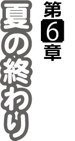

| あおぞらストライプ (ぷちぱら文庫) | |
| アストロノーツ・スピカ & 島津出水 & ピロ水 | |
| (2013) | |

淡波駅に降り立った俺が、最初に目にしたのは──潮風になびく、ふんわりと柔らかそうで豊かな栗色の髪が印象的な少女だった。
左右対称に編み込まれた流れの三つ編みと、結び目の赤いリボンがチャームポイントになっている。
手すりに寄りかかるようにして遠くを見つめている彼女は、どこか楽しげで、今にも歌い出しそうな雰囲気だった。
（可愛いな......）
それが、思わず心に湧いた、率直な気持ち。
容姿もさることながら、心が温かくなるような、ホッとするような──そんな気分を抱かせる雰囲気が、彼女にはあった。
（この子がオーナーの......沢渡さんの娘さんか？）
「あっ......」
ほどなく、少女の方もこちらに気づいたらしく、パッと明るい笑顔を見せてくれる。
「もしかして、岡崎真也さん......ですか？」
「え？ あ、ああ......」
一瞬、反応が遅れる。
「やっぱりっ！」
少女は寄りかかっていた手すりから離れて、お尻のところのパンパンとはたくと、小走りに俺の前にやってきた。
「遠くからありがとうございますっ！」
走ってきた勢いそのままに、ペコリと頭を下げられる。
「ああ......でもなんで分かったんだ？ あ、もしかして師匠が写真送ったとか？」
彼女は、そう戸惑いつつ言う俺に、少し誇らしそうな明るい笑顔を返した。
「そのケース......料理をする人のですから」
（ああ......さすが）
少女が指差したのは、包丁一式が入ったケース。学生時代に数ヶ月のバイト代を注ぎ込んで購入したものだ。
「よく分かったな。こいつらはさ、ずっと一緒にやってきた相棒だから、持ってきたんだ。道具って長く大切に使ってると魂が宿るっていうだろ？ やっぱり一番安心するんだよな」
ちょっと嬉しかったのか、ついつい初対面の人に熱く語ってしまう俺。落ち着いて考えて見ると、道具に魂とか──ちょっと恥ずかしい。
「ですか......それじゃ、相棒さんたちも、一緒に来れて嬉しいでしょうねっ♪」
でも、この子は感心してくれたようだった。本心から言ってくれたのは、笑顔で分かる。
（なるほど......さすが、師匠のライバルの娘さんだな）
料理人の娘ともなると、そういう感覚が自然と備わるものらしい。
「おっと、まだ正式に名乗ってないな。俺は岡崎真也。よろしく」
改めて名乗った俺に、少女はその名の通り綺麗な声で名乗ってくれた。
「あ、はいっ！ 私は沢渡琴音です！」
ここ『淡波町』は、マリンレジャーで有名な街らしい。
６月はまだオフシーズンだからか、観光客の姿は少ないが、駅前通りを歩いていても過疎めいた寂しさはなく、どこか風光明媚に感じられる。
やがて周囲の建物が減り、代わりに緑が増えていく。車通りも少ないからだろう、波の音が和やかに、そして徐々に大きく、俺の鼓膜を震わせた。
（なるほど......確かに良いレジャースポットかもな）
海で遊んで、自然の中を散策する。そんな楽しみが味わえそうな雰囲気。
「のどかだなぁ......」
歩きながら思わず呟くと、俺を案内するため少し先を歩く少女──琴音ちゃんが、少し困ったような笑顔を浮かべる。
「そうですね......やっぱり田舎ですよね」
「ああ、いいよな、こういうところ」
「え？」
「静かでこう......安心する。歩いてても気持ちいいしさ」
「そうですか......よかったぁ♪」
嬉しそうに言って、胸を撫で下ろす琴音ちゃん。
ああ、そうか。田舎だから俺がガッカリしたと思ったのかな？
「私、この街が大好きなんです。だから、そう言ってもらえると嬉しいなって」
全身からの喜びを溢れさせるように、琴音ちゃんの足取りもどこか軽い。
「そっか、良かった」
嬉しそうな姿を見てると、こっちも自然と頬が緩んでくる。
ほんと、不思議な子だな──などと思っていると。
「あっ......ほら、砂浜です！」
不意に琴音ちゃんが走り出した。そりゃ、海と来れば砂浜だろうけど──。
「こっちです〜！」
そして、俺の前方でぶんぶんと手を振る。紹介したくてしょうがないって感じだ。
「ああ、すぐいくっ！」
荷物を担ぎ直して、小走りに向かうと──すぐ俺の目に飛び込んできたのは、青い空と青い海から浮かび上がるように広がった、白い砂浜。
「へぇ......」
「えへへ......どうでしょう？ 淡波町で一番の砂浜なんですよ！」
「ああ......立派なもんだな」
なるほど、琴音ちゃんが紹介したがるのもうなずける。
「海も綺麗だし、こう暑いと泳ぎたくなってくるなぁ」
「水着、持ってきてるんですか？」
「え？ まぁ、一応な」
空き時間があったら海に行ってもいいかと思って、水着は持ってきている。
「あ、でもまずかったかな......俺、手伝いで来てるわけだし」
「そんなことないと思います！」と、琴音ちゃんは俺にぶんぶんと首を振ってみせる。
「ここに来て海に入らないのはもったいないですし......それに、泳ぐのって気持ちいいですから！ だから水着はどんとこいです！」
（どんとこいって......）
その表現に、俺は思わずクスッと笑ってしまった。
「え？ ええっ？ な、なんで笑うんですか〜？」
「いや、ごめんごめん。あんまり一生懸命だから」
「そ、そうでしょうか......？」
困ったように、首をかしげる琴音ちゃん。
そんな彼女に向けて、自然とお礼の言葉が出る。
「いや......ごめん、ありがとう」
「は、はい......？」
（よかった......いい子だ）
実のところ──調理学校を卒業して以来、親しくなった年頃の女性なんてひとりくらいしか思い浮かばない。
だから、この子とコミュニケーションが上手く取れるだろうか、結構心配だったのだ。
これからしばらくは、ずっと顔を合わせることになる彼女と、俺はできるだけ良好な関係を築いておきたかった。
でも、そんな不安は杞憂だったみたいだ。
（......いや、俺がどうこうっていうより、この子のおかげかな......）
この子の明るさが、俺を受け入れてくれた──そう解釈する方が自然に思えた。
「えっと......それじゃ、降りてみますか？」
「え？」
訝る俺に、琴音ちゃんは意外な提案をする。
「砂浜、降りてみましょうよ！」
「いいのか？ 寄り道なんかしちゃって」
「はいっ、実はこっちから行った方が近道なんです」
ぺろっとイタズラっぽく舌を出して、おどけてみせる。
その姿には、なんだか年相応の可愛さがあって──。
（──って、俺は何を考えているんだ？）
出会って間もない子に──しかも、これから世話になるオーナーの娘さんに、俺は何を
考えてるんだよ。いかんいかん。
「............？ 先に降りてますね」
「あ、ああ......」
軽く頭を振って自戒すると、俺は琴音ちゃんを追って道を外れた。
「おぉ......ほんとに綺麗だな」
実際に降り立ってみると、とても良質の砂浜だということがよく分かる。
足を踏みしめると、サラサラした砂が、靴から落ちていく。サクサクした感触が楽しい。
「ゴミもないし......波もすごく穏やかで......なんていうか、いい感じだ」
──言ってから、気づいた。海よりも砂浜を気にするなんて、間の抜けた感想だ。
「わ、悪い......俺、変なこと言ってるな」
「いえ、なんとなく分かります♪」と、それでも琴音ちゃんは笑顔で応じてくれた。
「それに、このビーチは地元の誇りなんです！ この砂浜目的で来る人もいるくらいなんですから！」
それが分かっているから、地元の観光協会も美化に努めているらしい──サクサクと少し先を歩きながら、そんなことを楽しそうに話す琴音ちゃん。
人気のない砂浜は、先を行く琴音ちゃんの足跡だけが、点々と続いていた。
そして、ふと振り向いて、長い髪を潮風になびかせて微笑む。
「風も気持ちいいですし......いいですよね」
（......ああ）
知り合って１時間も経っていないのに、理解できた──この子は、コンクリートの上にいるより、この青い空や白い雲の下にいる方がよく似合う。
（純真無垢、という言葉はこの子のためにあるのかもな......）
「......いいところだよな、ここは」
環境も、十分すぎるぐらい。
こんなところで働けるのは、それだけで幸運なのかもしれない。
「はいっ！ えへへ......よかったです」
琴音ちゃんはまるで自分が褒められたかのように、くすぐったそうに微笑むと、俺を案内してくれた。
「さあ、『アクア』までもうすぐですよっ!!」
『マリンハウス・アクア』──新鮮な海産物と、海でも手軽に食べられる洋食がウリのレストラン。海水浴シーズンには、海の家としても営業するらしい。
砂浜に面した場所にある２階建ては、１階の一部が海側にせり出すような形になっていた。恐らく、海の家のテラス部分なのだろうそこは今、前面をトタンやコンパネでぴったりと覆われている。
（そろそろシーズンも近いのに、まだこの状態......いかにも『閉店中』って感じだな）
そして、それこそが──俺が淡波町にやって来た理由だった。
「今の時期、入口はこっちだけなんですよ」
琴音ちゃんの案内に従って、店の正面に回る。大通りに面した駐車場に隣接する入口には、『ＣＬＯＳＥ』の看板がかかっている。
真昼だというのに照明が消され、深く沈み込んでいるような店内の雰囲気を目の当たりにすると、俺の緊張感は否応なく高まってきた。
「ただいまー」「失礼します！」
琴音ちゃんに続いて店内に入ると、カウンターの椅子に腰掛けていた女性が、顔を上げて俺の方を見る。
「......あら？」
どこか、琴音ちゃんと似ている女性。恐らく、一番似ているのは『ふんわり』とした雰囲気そのものだろう。理由は、この時点で察しがついた。
「お母さん。真也さん......じゃなくて、岡崎さん、連れてきたよ」
（ああ、やはりそうだ）
この人が、『マリンハウス・アクア』のオーナーシェフ──沢渡杏子さんか。
ただ、その姿には一瞬、我が目を疑った。
（本当に......琴音ちゃんのお母さん......？）
琴音ちゃんが美少女なのは間違いないが、その母親である杏子さんも負けてはいない。こんなに大きな娘さんがいるのだから、それなりの歳と思っていたけど──実際には、ふたりで歩いていても姉妹にしか見えないほどの美人だった。
そんな驚きに、少し緊張の度合いが増してしまったのか、
「はじめまして、岡崎真也です！ これからよろしくお願いします!!」
「わわっ」
挨拶に無駄な力が入り、勢いの良すぎるお辞儀で琴音ちゃんを驚かせてしまった。
「あらまぁ......ふふっ」
杏子さんは小さく苦笑しながら、ふんわりと柔らかな声で言う。
「お願いするのはこっちですよ。そんなにかしこまらないで、顔を上げて下さい」
「はい、あっ......」
顔を上げる直前、杏子さんの足下が見えた。
左脚に巻かれた包帯と、重々しいギプス。そしてかたわらに立てかけられた杖。
（そっか......やっぱり怪我人なんだな。師匠の言っていた通りだ）
靱帯を傷めたという話は聞いていたが──改めて認識すると、さすがに痛々しかった。
と、杏子さんは不意に、気安く尋ねてくる。
「大悟くんのところでは、もう長いんですか？」
「だ、大悟く......ああ、はい。２年ぐらいです。あ、調理免許は持ってます」
「まぁ、そんな短期間で......それじゃ大悟くん、厳しかったでしょう？」
どうやら、この人は師匠を名前で呼ぶ程度には親しい間柄らしい。師匠のライバルと聞いていたが、敵対していたわけじゃなく、互いに高め合うような関係だったんだろう。
「いえ、師匠には良くしてもらってます。ところで、脚は大丈夫なんですか？」
「日常生活に支障はないんですけど、厨房に立つのはまだ無理という診断で......これから忙しくなりますから、困ってしまって。そこで、大悟くんに相談したんですよ」
なるほど──それで師匠が、俺をこの『アクア』に助っ人として送り込んだわけか。
ここで、謙遜しすぎても仕方ない。自分自身を鼓舞する意味も込めて、俺は力強く言う。
「任せておいて下さい！」
「が、頑張ってください！ 私も応援......その、してますからっ！」
俺の威勢に応えてくれたのか、琴音ちゃんもそう言ってくれる。
「あら......そうなの♪ ふふっ」
その反応が意外だったのか、少し驚いたように苦笑する杏子さん。
でも、それも一瞬。
「......それじゃあ、さっそく腕前を見せてもらいましょうか」
（お......）
改めて向き直った杏子さんからは、小柄な体格ながら、どことなく気圧される真剣さを感じられた。
（さすが師匠のライバル......どこか通じるものがあるよな......）
思えば、俺の師匠──鶴野大悟も、物腰は柔らかいのに、料理のこととなると一切の妥協を許さない、真剣勝負の人だ。
「腕前......どういうこと、お母さん？」
「まずは料理を作ってもらおうかなって」
それはつまり、テストということだろう。
いくら一時とはいえ、自分の店の看板を背負うだけの価値があるのかどうか──それを試そうというのは当然だ。
「............」
琴音ちゃんも、俺と杏子さんの緊張が伝わったのか、黙って成り行きを見ている。
「そうねぇ......」
小さく微笑みながら杏子さんが思案する。その笑みで逆に表情が読めず、緊張はますます大きくなっていった。
一体、何を作れと言われるのだろう？ まさか、フルコースや満漢全席などとは言われないだろうが、どんなハイレベルな課題が──？
「ゴクリ......」
息を呑んで待ち構える俺に、杏子さんが告げたのは。
「それじゃあ......時間も時間ですし、お昼ごはんを作ってもらいましょっか♪」
「............オヒルゴハン？」
えーと、洋食？ 和食？ 俺のレパートリーに、そんなメニューあったっけ──。
「って、『お昼ごはん』ですか!?」
「ふふっ、いい反応ですねー♪」
自分でも分かる俺のマヌケ面に、杏子さんがクスクス笑う。
「も、もうっ、お母さんったら......」
「え？ ど、どういうこと......？」
唖然とする俺に、耳元で琴音ちゃんが耳打ちしてくれる。
（お母さん、こうやって人をヤキモキさせるのが好きで......）
（な、なるほど......）
お茶目というか、歳不相応というか──などと思っていると。
「あら、そんな言い方ないでしょう？ 私としては、今のリアクションだけでも、合格だなーって思ってるんだから」
「ご、合格......？」
いや、まだ俺、料理作ってませんよ!?
「そんなにいいリアクションされちゃったら......合格させるしかないじゃないですか♪」
「いやいや、リアクションで合格って」
「でも念のため料理の腕は見ておかないとって思って......お昼ごはん作ってもらおうかなって思ったんです♪」
「えっと......つまり、俺の腕はリアクションの二の次なんでしょうか......？」
すごく──なんというかものすごく、おざなりな感じなんですけど──。
「あら。同じ職場で働く以上、フィーリングが合うかは重要ですよ？」
「いやまぁ、確かにそれは一理ありますが......」
「すみません......お母さんってこういう人なんです」
「あ、いや......君に謝られるのも、なんか違うんだけど......」
「それに」と、杏子さんが不意に、こう付け加えた。
「あの大悟くんがとったお弟子さんですもの。腕は大丈夫......そうでしょう？」
「あ......」
──なるほど。そもそも杏子さんは、俺の腕が水準以下だと最初から思ってない。
何故なら、師匠の弟子だから。ある意味、杏子さんにとっては当然のこと。
（これは......本当に下手なことはできないな）
改めて身が引き締まる。
疑って見られるよりも、最初から思い切り期待されている方が、緊張は大きい。
（......だけど、面白い）
ハードルが高くなった分、沸々とやる気も上がってくる。
「それじゃ、早速ですけど、冷蔵庫見せてもらって良いですか？」
「ええ、もちろん♪」
俺の一言に、杏子さんは嬉しそうに頷いてくれたのだった。
『ごうかーくっ♪』
──料理の腕前自体は、拍子抜けするくらいあっさり杏子さんの合格をもらえた。
ただ、しばらく『アクア』で働くにあたって、問題は俺の腕前だけではない。
「当面、俺の住む場所のことなんですが......」
俺の住所から見て、淡波町は通勤できるほどの近場ではない。なので、しばらくはこの近辺で寝泊まりする場所を確保する必要がある。
「師匠には、こちらで用意していただけると聞いていたんですけど......」
「そう言えば......お母さん、その話ってどうなったの？」
「琴音ちゃんも聞いてないのか？」
「はい。なんかはぐらかされちゃって。でもお母さん、地元に顔が利くので、いい場所を見つけてくれると思いますよ」
琴音ちゃんの言葉を聞いて、一安心──と思いきや。
「そうですねぇ......」
「お母さん？」
杏子さんは、頼りない返事をしてからしばらく口を閉ざすと、おもむろに人差し指を伸ばし、下に向けてちょんちょんと差した。
「えっと......どういうことですか？」
そして、首を捻る俺に、軽く一言。
「だから、ここですよ。真也くんが住むところ」
「ここ......ですか？」
「もしかして、うち......？」
「そっ♪」
それってつまり、俺が『アクア』──この沢渡家に住むってこと──。
「「えええっ!?」」
「あら、見事にハモって。仲よしさんですね♪」
してやったりという表情の杏子さん。
振り返ると、『知らないです』と言わんばかりに、フルフル首を振る琴音ちゃん。
そりゃ、知ってるわけないよなぁ──。
「......いや、そうじゃなくてっ！」
「我が家では何か不満ですか？」
「いや、不満とか、この家が嫌ってことじゃなくてですね......ここって、杏子さんと琴音ちゃんが住んでいるんですよね？」
「はい、でも大丈夫ですよ。お部屋なら余っていますし♪」
「いや、そういうことじゃなくて......」
琴音ちゃんのお父さん──杏子さんの旦那さんは、琴音ちゃんが物心つく前に亡くなったという。それ以降は、杏子さんが女手ひとつで琴音ちゃんを育てつつ『アクア』を経営してきたらしい。そのたくましさは尊敬するが──今は、それが大きな問題だ。つまり。
「今さっき会ったばかりの男が、いきなり住むってことになっていいんですか!?」
「ええ、別にかまいませんけど」
──しかし、即答だった。
「どこかに泊まるとなると、お金もかかりますし......その点ウチならいりませんし、職場が近くて一石二鳥ですよ？」
「そうは言いますけど......やっぱり女性だけの家に、男ってのはまずいんじゃ......」
「そうでしょうか？」と、俺の躊躇などどこ吹く風とばかりに、首をひねる杏子さん。
「だって、大悟くんが信頼の置けない子を弟子にとるなんて考えられませんし♪」
「う......」
それほどまでに師匠のことを、信頼してるってことなんだな。そして同時に、
「それに、万が一問題を起こしたら、真也くんは大悟くんに顔向けできないでしょう？」
──ということでもある。
俺が今回『アクア』にやって来たのは、単に店を手伝うというだけでなく──約２年間、師匠の元で修行を続けてきた俺が、コックとして独り立ちできるかどうか、その試験としての意味合いもあった。
問題を起こした場合も含め、俺がここで失敗すれば、師匠の信頼を裏切り、顔向けできなくなるわけだ。そう思うと、自然と背筋が伸びる。
（そこまで言われたら、間違いをする気もなくなるよなぁ......もちろん、元々そんな気はサラサラないけど）
だが、俺が納得すれば良いという話でもない。
「............」
問題は、ここで困って固まっちゃってる、琴音ちゃんだ。
そりゃ、いいワケがない。少しは仲良くなれたと思うけど、それでもまだ、出会って数時間。それなのに、いきなり見ず知らずの男がひとつ屋根の下に同居するとなれば、どう考えても年頃の娘さんには、大いに困惑する話でしかない。さて、どうしたものか。
「はぁー......もう、お母さんったら」
数秒かけて復活した琴音ちゃんは、当然のことながら杏子さんに苦情を──。
「そういうことは早く言ってよね」
「ふふっ、ごめんなさい。やっぱり驚かせたくなっちゃって」
「お母さんはそれでいいかもしれないけど、真也さんがここに住むなら、いろいろと準備がいるんだから」
──あ、あれ？
「歯ブラシ......は、予備があるよね。タオルも大丈夫だろうし......あっ、お布団干しておきたかったなぁ......あーっ！ 部屋って、例の荷物置き場だよね？ 全然片付けてないから、掃除しなきゃっ！」
口をとがらしてるけど、その内容は──俺が、居候すること前提？
「い、いいのか......？」
「へ？ 何がですか？」と、琴音ちゃんは俺の呼びかけにキョトンとする。
「いや、えっと......ほら、俺が住むの」
「ごめんなさい。知ってたら、ちゃんと準備できたんですけど」
「いや、そっちじゃなくてさ......男が住むの、嫌じゃないのか？」
「はぁ......何ででしょう？」
「いや、何でって......」
「別に私は問題ないと思いますし......」
面食らう俺に、琴音ちゃんは屈託のない笑顔で応えた。
「それに、男の人と一緒に暮らすのって、私初めてで......なんだか楽しそうです♪」
「た、楽しそう......？」
そもそも何か『悪いコト』をするつもりは毛頭ないのだけど、『同居』と聞いてすぐにやましいことを考えた俺って──要反省。
「ふふっ、それじゃ決定ってことで、いいですね？」
「は、はい。お願いします......」
──こうして、しばらくの間、沢渡家に居候することが決定した。
（いや、お金もかからないし、ありがたいんだけどさ......）
俺が使う部屋を、琴音ちゃんとふたりで掃除し。
杏子さんが作ってくれた夕飯のレベルの高さに感心させられ。
『お母さんも真也さんも、のんびりしてて。後片付けは私がやるから！』
──と、食卓から追い立てられるようにして、杏子さんと過ごすことになったリビングでのひととき。
「大悟くんからは、真也くんがコックとして一人前になったかどうかをチェックしてほしいと言われています。ちょっとした試験ですね」
杏子さんはにこやかな表情のまま、おもむろに予想外のことを言い出した。
「となると、分かりやすい目標があった方が、『受験生』も『試験官』も方向性がハッキリして、いいと思うんですよ」
「はい、確かにそうですね」
ここまでは、すんなりと同意できる。問題は、次の一言。
「そんなわけで、真也くんの目標は『例年通りの売り上げを維持すること』......これでどうでしょうか？」
「......『アクア』の売り上げを......ですか？」
これは驚いた。そして緊張した。
さっき食べた杏子さんの夕飯は、『ごちそうじゃないけど毎日食べたくなる美味しさ』だった。高級店ではないが、地元の人が普段からランチタイムに利用する『街のレストラン』のコックとしては、まず理想的な腕前だと思っていい。
そんな杏子さんの味に慣れている常連のお客を満足させなければ、『いつも通り』の売り上げを維持することも危ない。そして、俺のコックとしての技量は、まだ杏子さんに遠く及ばない。下手をすれば、お客が離れてしまうこともあり得る。それでも──。
（......いや！ やる前から、そんな後ろ向きな発想でどうする！）
自分に言い聞かせ、気持ちを奮い立たせて、俺は杏子さんに頷いてみせた。
「分かりました。その目標でやります！」
「いい返事です......けど、それだけじゃないですよ」
「え？」
「真也くんには調理だけでなく、アクア全体の経営も任せますね」
「え......えええっ!?」
今度こそ──本当に予想外の言葉だった。
「あの......それはつまり......？」
「バイトを雇ったり......仕入れをしたり......全部、真也くんに委ねるってことですね」
（......店に関わる全権を、俺に......？）
師匠の店で修行している時は、そういうことは師匠たちが引き受けてくれていた。
もちろん自分も手伝ったことはあるが、それでも一部にすぎない。
そんな俺が、しかも師匠から離れて、いきなり全てを仕切れるんだろうか──。
「真也くん」
俺の迷いを読み取ったのか、杏子さんの声音がどこかたしなめるものに変わる。
「驚いていると思いますし、実際大変なことですけど......自分のお店を持つっていうことは、そういうことなんですよ？」
──確かにその通りだ。
つまり、杏子さんはいずれ俺がやるべきことを、突然ながらも予行としてやらせてくれる──そういうことなのだろう。
だとしたら、光栄なことに他ならない。これ以上ない経験になるのだから。
驚きは大きかったが、覚悟はすぐにできた。
「......分かりました。やります」
「ええ、お願いします。もちろん、全部ひとりでやれなんて言いません。私も手伝いますし、分からないことは相談して下さい」
だけど──と、俺の新たな師匠は、笑顔で付け加える。
「最終的な判断は真也くんがすること......いいですね？」
「はい、よろしくお願いします！」
俺はそう言いながら、勢いよく頭を下げた。
「ひゃあ!?」
──ただ、ちょっと声が大きすぎたみたいだ。
「ど、どうしたんですか真也さん？ 何かお母さんに無理難題でも言われましたか？」
「ああ、驚かしてごめん」
洗い物を終えた琴音ちゃんは、俺の声に目を丸くしながら、リビングに戻ってきた。
すると、杏子さんは自然に話題を変える。
「それじゃあ真也くん、そろそろお風呂に入ったらどうですか？」
「ああ、長旅で疲れてますよね、真也さん。ゆっくりしてきてください」
「え、俺ですか？ でも、自分が一番風呂をもらうわけには......」
仮にも居候の俺が、先に風呂に入るというもどうなのか──などと躊躇していると。
「遠慮はいりませんよ。私たちはこれから『家族』になるんですから」
「そうですよ。遠慮せず入ってきて下さい」
美人母娘は、気楽に言ってくれる。
その気遣いは素直に嬉しいけど、『家族』という感覚に慣れるには少し時間が──。
「そ・れ・と・も？ もしかして私たちの入った後のお湯が良かったですかー？」
「ぶっ!?」
いきなり何を言い出すんだ、この人は!?
「残り湯がいいなんて......真也さんもやりますねぇ......」
「ちょっ......杏子さん!?」
「そうだったら......ふふっ、考えないこともないですけど」
「いや、そんなわけないじゃないですか！」
「あら、それは残念ですね」
「いや、残念とか......ホントにもうカンベンして下さい」
──だんだん分かってきた。杏子さんは、こういう『お茶目』が好きな人なんだな。以後、気をつけないと。
ただでさえ、年頃の娘さんがいるんだから──そんなことを思いながら、チラリと横を一瞥すると。
「......あの、真也さん......残り湯に良いとか悪いとかあるんですか？」
（えっ？）
「そりゃあ、あまりお湯は汚れてない方が良いとは思いますけど......ちょっと、お母さんの言ってることがいまいち分からなくて......」
「あ、ああ......気にしなくていいから！ いらない知識だから！」
「はぁ......？」
なんか、余計に琴音ちゃんの勘ぐりを招きそうなリアクションになってしまった。
でも──ひょっとしてこの子は、男女のいろいろ細かいことを、あまり知らないのか？
「そ、そういえば、お風呂なんですけど、杏子さん怪我してるのに、ひとりで入って大丈夫なんですか？」
とにかく、話を逸らそう。そう考えて、実際さっきから気になっていたことを尋ねると。
「あら。それなら一緒に入って、面倒見てくれます？」
「ぐっ......!?」
「それなら一番風呂も一緒ってことになりますし......名案ですね♪」
分かってはいたつもりだけど──この人、完全に俺をからかって楽しんでる。まいったな、もう。
「ダ、ダメだよお母さん、せっかく心配してくれてる真也さんを困らせちゃ」
と、ここで助け船を出してくれる琴音ちゃん。
「遠くから来てくれたのに、イジワルばかりしてたら失礼だよ」
「......はぁい、ごめんなさぁい」
頬をぷくっと膨らまして叱る彼女に、杏子さんもすごすご引き下がるのみ。
（良い子だなあ、琴音ちゃん......というか、どっちがお母さんか分からなくなるな......）
わずかに苦笑を漏らす俺を振り返って、琴音ちゃんが笑顔で言った。
「そんなわけですから真也さん、本当にお先にどうぞ。うちのお風呂、きっとすっごく気に入ると思いますから」
「そんなに ......なんか特別なの？」
「はいっ、うちのお風呂は普通のお風呂じゃないんですよ......そう！」
そして、クイッと胸を張って一言。
「『温泉』なんですっ!!」
「......温泉!?」
聞き捨てならない単語に反応した途端、再び杏子さんの横槍が入る。
「あっ、そうだ♪ 私とがダメなら、琴音と一緒に入ったらどうですか？」
「いいですね、温泉なら琴音ちゃんと一緒に......って！ 何でそんなに、俺に混浴させたいんですか!?」
「お、お母さんっ！」
「だってほら、裸の付き合いっていうじゃないですか。真也くんにはこれからウチの命運を担ってもらうんですもの。早く仲良くなった方がいいでしょう？」
「いや、仲良くなることは同意しますけど」
「でしょう？ でしたらやっぱり、身も心もさらけだせる裸の付き合いが一番！ ......そう思いませんか？」
いやいやいや、それは同性であることが大前提でしょうに。これが子供同士だったらまだしも、琴音ちゃんは学生だし、俺はさらに年上だ。そんなふたりの混浴を推奨する親ってのは、一体何なんだ──。
「とにかく、俺はひとりで先にお湯いただいてきます」
杏子さんのペースにこれ以上巻き込まれないうちにと、俺はさっさとリビングを出た。
「......あっ、真也さん、お風呂場に案内しますね！」
「いってらっしゃ〜い。ごゆっくり♪」
「だから、一緒には入りませんから、冗談はよしてくださいって！」
「ふぃ〜〜〜〜〜♪ ......自宅に天然温泉って、贅沢だなぁ」
──急いで、しかし念入りに身体を洗った俺は、湯船に浸かると存分に脚を伸ばす。
淡波町には温泉が湧いていて、しかも泉質が良いので、何軒も温泉宿がある──風呂場に案内してもらう最中、琴音ちゃんに教えてもらった話である。
ここにも、その温泉が引かれているという。海の家のシャワーも温泉水だそうだ。
それは、願ったり叶ったりの話だった。何を隠そう、俺は風呂に入るのが大好きなのだ。
「いいなぁ、この開放感......」
さすがに露天風呂というわけではないが、海側の壁にそれなりの広さでスリットが入っており、角度によっては夜空を楽しめる。これは充分に露天の趣だ。
耳をすませば波の音が響いており、潮の香りが別世界に誘ってくれるようである。
（こんなに恵まれた環境はそうそうないぞ）
『アクア』でお世話になる間、毎日のようにこの湯船が楽しめるかと思うと、それだけでちょっと幸せな気分になれる。と──。
「真也さーん。歯ブラシと歯磨き粉、ここに置いておきますねー」
どうやら琴音ちゃんが、いろいろと日用品を持ってきてくれたらしい。
（本当に気が利く子だなぁ......いろんなところに気が回るし、しっかりしてるよ......）
俺が琴音ちゃんぐらいの年頃の時は、もっと適当に過ごしていた気がする。
杏子さんがああいう人だから、その分娘がしっかりしたと──いや、それはいくらなんでも失礼すぎるか。でも、琴音ちゃんに初日から助けられっぱなしなのは確かだ。
「ありがとう、助かるよ」
「いえ、そんな......もし必要なものがあったら、気軽に言ってくださいね」
「ああ、そうするよ」
「............」
──あれ？ 磨りガラス越しに見える影が、全く動いていない。
琴音ちゃん、洗面所を出て行かないのかな？ もう、用事は終わったろうに──。
「どうかしたの？」
「あ、はいっ！ その......あの......ですね」と、琴音ちゃんは少し恥ずかしそうに言った。
「その......さっき、お母さん言ってたじゃないですか......それ、本当にしても......いいですか？」
「えっ、それって言ったら......」
（..................混浴か!?）
まさか、そんなありがた嬉しいこと──。
「いやいやっ!? そんなダメだ!! 『裸の付き合い』はハレンチすぎる!!」
「え？ あっ、違います!! 裸なんかじゃないですよ!! ちゃんと水着を着てます!!」
そ、それならいいのか？
（......いや、ダメだろ!? そういう問題じゃないだろ!?）
「で......でも、でもですね！ 長旅でお疲れでしょうし、その......お母さんにいろいろと言われてましたし......それにその......せっかくですから、仲良くしたいですし......あ......その、やっぱりおひとりの方がいいですよね......」
「あ、いや......」
──なんか、最初は勢いの良かった声が、どんどんしょげていってる。
確かに、倫理的にどうかという問題はある。けど──琴音ちゃんの声音は、ちゃんと俺を気遣っているものだった。
そんな彼女の厚意を、俺がやましいことを考えた挙げ句、無碍にしてもいいものか。
（......水着着てるって言ってるし......そもそも、俺が変なことしなければ、何も問題無い......うん、そうだな）
無理やり結論づけて、琴音ちゃんに伝える。
「それじゃ......一緒に入るか？」
「は、はいっ！ よろしくお願いします」
弾んだ声になって、琴音ちゃんが入ってきた。
（まぁ......喜んでいるなら良かったのかな）
そんなことを思いながら、琴音ちゃんを見る。
「えへへ......おじゃまします」
確かに、自己申告通りの水着姿だった。だけど。
（こ、これは......!? 年の割に、かなりその......色っぽいぞ、この子）
──裸じゃないからといって、目のやり場に困らないわけではなかった。
ふんわりとした雰囲気に違わない発育を見せる四肢は、しなやかで余分な脂肪を感じさせない。だけど、その胸──おっぱいは、今にも水着から零れそうなほど大きく、形も整っている。近づいてくるわずかな振動だけなのに、ぷるぷると震えているし──。
「あの、どうかしたんですか？」
「............はっ!?」
気がつくと、視線がついそこに集中してしまっていた。慌ててごまかす俺。
「あ、いや......その、き、きれいだ！」
「えっ？」
（......って、俺は何を言っているんだよ!!）
ああ──せっかく、そんなに悪くない関係を築き始めていたと思ったのに──これじゃセクハラもいいところだ。
「えっと......お、男の人にそんな風に言われたこと、ないので......恥ずかしい、です」
琴音ちゃんは真っ赤になって、胸の前で擦り合わせた手を凝視していた。だけど、
「で、でもその......嬉しいです♪」
──そっとはにかむように、そう言ってくれる。
「あ、ああ......？」
（だ、大丈夫だったのか......？）
「せ、せっかく褒めてもらってるに、恥ずかしがってちゃダメですよね！」
そして、『うんっ』と決意したように気合いを入れ、風呂椅子を持ってくる。
「真也さん、こっちですっ！ 背中、流しますから座ってください！」
「真也さんの背中、大きいから洗うのに時間かかっちゃいましたね。友達と流しっこしたりするんですけど、こんなにおっきな背中は初めてです」
「そっか。俺も久しぶりになんかこう......背中がスッキリした気がするよ」
──背中を流してもらった後、ふたり肩を並べて湯船に入る。
触れるか触れないかの距離──それは、出会ったばかりの男女には近すぎる気がした。
「えへへ......あったかいです♪」
ちょっと照れ笑いを浮かべながら、琴音ちゃんが言う。
「............なあ、琴音ちゃん」
その表情を見ているうちに、俺はどうしても尋ねずにいられなかった。
「君は......その、無理してないか？」
それは、さっきからずっと気になっていたこと。
「無理......ですか？」
「ああ。突然、俺と同居することになって。それに今もこうしてさ......」
怪我をして、助けを必要としている杏子さんがいた手前、琴音ちゃんは何でもないように振る舞ってくれているのかもしれない。
恐らく、こうして混浴という状態までしてくれたのだから、そんなことはないと思いたいけど──やっぱり、本人の口から聞いておきたかった。
「その......こういうものじゃないんですか？」
と、琴音ちゃんはわずかに首をかしげる。
「お店を助けてもらうのはこっちなんですし、無理を言ってきてもらったんですから、このくらい当たり前ですよ」
「琴音ちゃん......」
思わず横を見ると、琴音ちゃんのまっすぐな瞳とぶつかった。
「真也さんこそ、遠慮なんてしなくていいんですよ」
「え？」
「お母さんも言ってましたし、私たちは家族なんだって思ってくれて、いいんですから」
本当は無理をして気を遣ってる──そんな前提で俺は琴音ちゃんを見てたけど。
琴音ちゃんはどこまでも純真で。
（まったく......恥ずかしくなるな）
結局、琴音ちゃんや杏子さんの言っていたことを疑って、変に力の入っていたのは、俺の方だったってわけか。
「............」
「そ、その......もしかしたら、真也さんみたいな男の人に憧れがあるのかもしれません!!」
俺が一瞬押し黙ったからだろうか、琴音ちゃんがそんなことを言い出す。
「その......真也さん男の人で......年上の方ですし......」
「えっと......それって、年上がタイプいうこと？」
思わず問いかけると、彼女ははにかんだ笑みを浮かべたまま、首を横に振る。
「そうじゃなくて......その、ウチってお母さんだけですから」
「ああ......」
なるほど──物心ついた時には、もう父親がいなかったということか。
「あっ......でも、気にしないでください！ 全然気にしてないですから！」
俺の内心を察したのか、琴音ちゃんは慌てたように付け足してくれる。
「琴音ちゃん......」
「は、はい......？」
──分かったようなことを語るのは、間違いだと思う。それなら。
「俺、頑張るよ。この店をしっかり支えてみせるから」
「あ......」
俺にできるのは、今の決意を素直に言うことだけだ。
「だから、よろしくな」
「はっ、はい......よろしくお願いします」
琴音ちゃんは、コクコクと慌てたように頷いてくれる。
「あ、あれ......なんか変ですね......えへへ......」
「はは......そうかもな」
出会って１日も経ってないふたりが、風呂場でよろしくと言い合う──こんなに不思議なこともない。
だけど。
「変ですけど......『裸の付き合い』って、けっこう効果があるのかもしれませんね」
「ああ......同感だ」
この状況は、そんなにおかしなものでもないと思えた。
（もし、妹がいたら......こんな感じなのかもな......）
そう思えば、しっくりきたような気がした。
「あらあらっ♪」
「え？」
──不意に、俺でも琴音ちゃんでもない声が、風呂場に響いたのはこの時。
「あんまり遅いから様子を見に来たら......おじゃまだったかしら♪」
「ブッ!?」「お、お母さん!?」
きょ、杏子さん──何で風呂に入ってくるんだ!?
一応、琴音ちゃん同様、水着を着てくれているのが不幸中の幸い──。
（──って、意味がねぇ!?）
思わず内心でツッコんでしまうぐらいに、杏子さんのボディラインは魅力的だった。
子供を産んだとは思えないほど美しく──若々しさよりも艶やかな大人の色気を漂わせている。
男の性の悲しさか──琴音ちゃんにも負けない、否、それ以上のボリュームを誇るおっぱいに、どうしても目がいってしまう。
水着の薄布の奥に押し込められた胸は、かなりサイズがきわどいビキニということも
相まって、指でちょっとずらせばポロンとこぼれてしまうのでは──と心配になる。
これで、防水用にビニール巻いた脚のギプスが目に入らなかったら、俺は冷静さを保っていられなかったかもしれない。でも、ここで慌てたら、杏子さんの思うつぼだ。
「大丈夫ですか？ 滑りやすいですから手を貸してください」
平静を装いつつ、湯船から出て手を貸すと、案の定──。
「むぅ......その反応......寂しいです。もう飽きられちゃったんですね......ぐすん」
「だから、そういうきわどい言い方はよしてくださいって」
「も、もう......お母さんっ、また真也さんをからかって」
そして琴音ちゃんは、杏子さんをたしなめながら、反対側から支えて世話を焼く。
「湯船に入るなら、シャワーかけるからね」
「苦労してるなぁ、琴音ちゃん......」
「分かってくれて嬉しいです！ ......あ、ちょっと支えてもらえます？」
──その後も、杏子さんの希望で３人揃って湯船に浸かったりと、沢渡家での最初の一日は騒々しく過ぎていった。
まあ、こんなことで家族として沢渡親娘に溶け込めたのなら、いいことだろう──。
「あ、ほらほら、見て真也くーん。おっぱいってお湯に浮くんですよ」
「ブーーッ!?」
「だ、だからお母さぁんっ!!」
──いや、本当にいいのか？
『アクア』のメニューを一通りマスターし。
海の家を開く準備を進め。
その間に梅雨も明け、淡波町に本格的な夏が到来して。
──そして、今日。
「学校も夏休みに入って、いよいよ今日から『アクア』新体制の本格始動になる」
開店前の店内で、俺はガラにもなく訓辞を述べていた。
やたら派手なコックコートに身を包んでいるが、そのことは今は置く。
「はぁ......やっぱり真也さん、あの格好が抜群に似合いますね......♪」
「徹夜して作った甲斐がありました......我ながら、自分の才能が恐ろしいですっ」
「ふ、ふたりとも、無駄口はダメだよっ......」
──な、何やらヒソヒソと聞こえるが、今は置く。
「コホン......全員そろっての業務は今日が初めてだけど、業務内容は基本、昨日までのテスト営業と同じだ。みんな落ち着いて、各自持ち場の仕事をこなしてほしい。いいね？」
「「「「「はいっ！」」」」」
俺の問いかけに、元気よく返事をしてくれたのは──５人のウェイトレス。
これから俺は、彼女たちの助けを借りて、一夏の試練に挑むことになる。
きっと上手くいく──自分に言い聞かせて、俺は声を上げた。
「それじゃあ、準備を始めて！ 『アクア』開店だ！」
『バイトを雇おう！』
──それが、俺の初めて下した経営判断だった。
アクアでは毎年、海の家を開く繁忙期に、数人のアルバイトを雇っていたという。
当然、今年もバイトの募集をかける予定だったそうだが──杏子さんの怪我のことがあってドタバタしているうちに、募集をかけるのを忘れてしまっていたらしい。そして、今からでは遅すぎて、なかなかバイトが集まらないだろう、とも聞かされた。
それ自体は仕方のないことだけど、俺のコックとしての腕前が杏子さんほどではない以上、遅ればせながらでもバイトを探さないことには、店を切り盛りできるはずもない。
そこで俺は琴音ちゃんに頼み、学校のクラスメートなどにバイトをお願いしてもらった。
そして、今日──琴音ちゃんを含めた５人のウェイトレスをそろえることができた。
「いらっしゃいませー♪」
琴音ちゃんが笑顔で出迎えた客は──漁師の玄蔵さん。アクアの常連だ。
「おう琴音ちゃん、いつもの頼むぜ......って、おいおい、何だこりゃ」
彼が目をみはったのは、琴音ちゃんが着ていた、今日初お目見えの制服のせいだろう。
今までは、私服にエプロン姿で接客していた琴音ちゃんだったが──いま着ているのは、ウェイトレスの衣装。ちょっとメイドも連想させるそのデザインは、彼女の無垢な可愛らしさを際立たせる、新鮮なものだった。
「せ、船長、こ、これは......」
「こりゃすげぇな......見違えちまったじゃねぇか......」
自分が連れてきた船員さんたちと一緒になって、軽くどよめく玄蔵さん。アクアの開店当初からここに通い、琴音ちゃんが大きくなる過程も見てきたという彼だから、驚きもひとしおなのかもしれない。と──。
「えへへ♪ どうどう？ かわいいっしょ？」
琴音ちゃんの肩越しに顔を出して、玄蔵さんに笑顔を向けるウェイトレス。
──水谷さくらちゃん。琴音ちゃん以外で、最初に採用が決まったバイトだ。
琴音ちゃんとは、小学校以来の友達だというさくらちゃん。
『へー♪ この人が、琴音の言ってた新しいコックさん？』
初めて紹介してもらった時は、小動物的な愛くるしい笑顔と、杏子さんにも似た押しの強さが印象的だった。
『うん、身長も平均以上でルックスも良好♪ 身だしなみもしっかりしてるし、さすがコックさんって感じですねー♪ ちゃんとヒゲの剃り残しなしってのも、高ポイントですよ！』
『あ、ありがとう......』
だが、琴音ちゃんは当初、彼女に声をかける予定がなかったという。
何故なら、さくらちゃんは既に、駅前の喫茶店でバイトをしていたから。
しかし──世間話をしているうちに、状況は大きく変わった。
『そういえばさ、琴音のところのウエイトレスの服って、どうなってたっけ？』
『へ？ ......それは、エプロンだけど。ウチには制服ないし今までもそうだったから』
『......ちょ、ちょっと〜！ ウェイトレスはお店の看板なんだよ!?』
琴音ちゃんの話を聞いた途端、さくらちゃんが何故か食いついてきたのだ。
『見た目でお客さんを喜ばせるのも仕事！ お店の看板がへっぽこじゃ、来た人もガッカリするじゃないっ!!』
『そ、そうかなぁ......』
『そうなの!! ......ん？ ってコトは......まだアクアの制服は決まってない......真也さん！ 制服を作らせて下さるなら私、明日からでもアクアで働かせてもらいます!!』
『ええっ!? ......でも君、もう他のお店でバイトしてるんじゃ......』
『今のお店の制服も可愛いけど、新しい制服作らせてもらえないし！ 真也さんが条件飲んでくれるなら、キッパリ辞めてきます！』
『あ、ああ、お願いするよ......』
──勢いに圧されてオーケーを出してしまったが、後に琴音ちゃんから、彼女の裁縫の腕前が素晴らしく、文化祭で使うコスチュームなども自作して評判になったと聞かされた。なるほど、将来デザイナーでも目指しているのだろうか。
そして、実際にさくらちゃんが作ってきた制服は──。
「おー、いいんじゃないか？ さくらちゃんの作った制服。今度、大漁旗でもこしらえてもらうか！ がっはっはっ！」
──どうやら、玄蔵さんたち常連客には、大好評のようである。
さくらちゃんの制服は琴音ちゃんのものと違い、おへそが丸見えの大胆なデザイン。だが、いやらしさはなく、彼女のキャラクター性に合致した、キュートな仕上がりだった。
「ありがとうございまーす！ ささ、お席はこちらへどうぞ！」
元気よく礼を言いながら、玄蔵さんを案内するさくらちゃん。と、そこへ。
「４番テーブル、オーダー入りまーす！」
琴音ちゃんがカウンター越しに、調理中の俺へ先客の注文を伝えてくれた。
同時に、客の帰ったテーブルから、食器を片付けてこちらに持ってくる。
「じゃあすみれちゃん、これお願いね」
「は、はい、分かりました」
そう返して、食器を引き取ったのは俺ではなく、３人目のウェイトレス。
水谷すみれちゃん──さくらちゃんの、双子の妹だ。
琴音ちゃんや、当然さくらちゃんと同い年のすみれちゃんだが、俺と出会ったきっかけは、ふたりからの紹介ではなく──まださくらちゃんのバイト採用が決まっていない頃、偶然出くわした事故だった。
俺はその日、病院が苦手で行くのをずっと渋っていた杏子さんを、車でかかりつけの医院へ連れて行った。
彼女が診察を受けている間、俺は医院の外に出て海岸沿いの道路を散歩していたのだが──そこで見かけたのが、海に突き出した突堤の上を歩く、白いワンピース姿の少女。
白い帽子に手を添えた少女は、突堤のふちにしゃがむと、海面を見つめ、時折そっと手を振ったりしていた。妙に儚げな印象を与えるその姿は、おとぎ話の人魚姫か、はたまた深窓の令嬢か──などと、俺に現実離れした想像をさせるものだった。
ところが、その姿が突然、視界から消えた。驚いて突堤に駆けよると、水面に波とは違う水しぶきが。
『......落ちて、溺れてるのか!!』
着衣を脱ぎ捨て、道すがら漁師が使うとおぼしき救命用浮き輪を拝借して、俺は海に飛び込み、少女を助け上げた。そのまま医院に運んで診てもらうと、幸い命に別状はなく、すぐに意識を取り戻した。
そして、少女がこの医院に通院中の患者で、琴音ちゃんの友達であることを聞かされた──すみれという、彼女のイメージにぴったりな名前とともに。
後に、彼女がさくらちゃんと双子の姉妹であると知った時は、とても驚いたものだ。言われてみれば顔立ちなどがよく似ていたが、何しろ性格がずいぶんと違っていたから。
「すみれちゃん、大丈夫？ くれぐれも無理は禁物だからな」
「ありがとうございます、まだ平気です」
俺がフライパン片手に声をかけると、すみれちゃんは少し恥ずかしそうに笑った。
──彼女には、厨房での洗い物や俺のサポートを中心に受け持ってもらっている。フワリと広がったスカートが特に目を引く、さくらちゃんお手製の制服を着てはいるが、ホール業務は特にお客の多い時間帯に限定していた。
それは、彼女が腎臓を患っていて、あまり無理が利かないから。同じ理由で、現在学校には通っていないという。
ただ、多少の労働は、むしろ体力作りや社会復帰に好都合な面もある。そして何より、さくらと連れ立ってバイトの面接にやって来た時、
『迷惑をかけちゃうかもしれないけど......真也さんに、恩返ししたいんです......』
──と頭を下げられたことが決め手となり、こうして働いてもらうことになった。
そして、いざ働いてみると、食器洗いや材料の準備など、地道な作業に適性があることも分かった。
「だけど、すみれちゃんに来てもらって、本当に助かってるよ」
「いえ......私には、こんなことぐらいしかできませんけど......」
「何を言ってるんだ。縁の下の力持ちを買って出てくれるすみれちゃんがいてこそ、アクアはお客が増えてもどうにかなってるんだ」
実際、今ではすみれちゃんも、アクアに欠かすことのできない戦力となっている。
俺が淡波町に来て数日後の営業再開以来、アクアの客足は順調に戻って来ている──とは、杏子さんのお言葉。
確かに、新しいコック、つまり俺見たさにやってきた常連さんを中心に、リピーターは日に日に増える一方だった。
それ自体は、俺の料理を評価してもらった証拠だし、とてもありがたいことだが──反面、スタッフの作業量がどんどん増えてきていることも意味していた。
いくら、琴音ちゃんやさくらちゃんのような、優秀なウェイトレス経験者がいても、負担の増大はミスの発生確率の増大に直結する。そんな中、すみれちゃんの堅実なサポートは、みんなの仕事のクオリティを安定させるためにも、とても重要なのだ。
「だからなおのこと、疲れた時は素直に休むんだ。すみれちゃんにダウンされたら、みんな困っちゃうから。あんまり頑張りすぎないこと。いいね？」
「はい......頑張りますっ」
（だから、頑張りすぎるなって言ってるのに）
すみれちゃんの生真面目さに、そっと苦笑を漏らしていると、今日から営業を開始したオープンテラス──海の家の方から、琴音ちゃんの声が。
「アイスコーヒー、６人前入りました！」
「はい、少々お待ち下さい！」
すぐさま俺が返事をすると、程なく厨房に４人目のウェイトレスが飛び込んでくる。
「美里さん、お願いします！」
「お任せ下さい！」
一瞬俺と視線を交わし、すぐアイスコーヒーの用意に取りかかるのは──支倉美里さん。俺に年齢が近い、アクアで最年長のウェイトレスだ。
琴音ちゃん、さくらちゃんとは違った意味で、美里さんは接客業の経験者である。
何しろ彼女は、淡波町の温泉街にある旅館『淡波』の娘さんにして、いずれは女将として旅館を継ぐべく修行中の仲居さんなのだ。
『貴方が調理師の方なのですね。琴音ちゃんにはお世話になっています。どうぞ、よろしくお願いします』
いかにも大和撫子という表現の似合う、おっとりした物腰と上品な笑顔の女性で、初めて紹介された時は、つい見とれてしまったものである。
琴音ちゃんや杏子さんとも顔見知りで、アクアのテスト開店初日にも、昼食を食べに来てくれた。
ただ──ここで俺は、ちょっと見苦しいところを見せてしまう。師匠の元でも、ランチタイムの忙しさは毎日経験していたはずなのに、自分が厨房の全てを取り仕切るという経験は、この時が初めてだった。
師匠の指示通りに作業をこなすのと、自分で全て考えて注文をさばいていくのでは、頭を使う度合いがまるで違う。注文を受けてから、実際調理に移るまでの、ものの数秒のタイムロスが積もり積もって、お客を待たせる時間を長引かせてしまう。
結果、お客に提供する料理のクオリティは一定に保ちながらも、注文をさばききれなくなりそうなギリギリの状態が続き、
『あっ、あのっ！ その......もしよろしければ......手伝わせて頂けませんか......』
──苦境を察した美里さんに、恐縮しながら申し出を受けてしまった。
下手なプライドより、お客を待たせないことの方が大事だ。俺は素直に、厚意に甘えることにした。
『こちらこそ、よろしく頼むよ。正直、回せてないのは事実だから、助けてくれるとすごくありがたい』
『は、はい！ 微力ながらご協力いたしますっ!!』
そして──初めてのウェイトレス業務にもよどみなく対応する美里さんのスキルの高さに、舌を巻くこととなった。
もとより接客は完璧である。しかも、日頃の女将修行で鍛えられているからか、数人分の料理が載ったトレイを両手に持って、楽々と客のテーブルまで運ぶ。
おまけに──コーヒーの淹れ方が、抜群に上手かった。ホットもアイスも、俺が淹れたものと比べて、後味が格段に違う。料理はともかく、ドリンク類に関しては修行が足りないことを痛感していた俺にとって、美里さんの協力は大きな助けとなった。
そして、どうにか無事にトラブルなく初日営業を終わらせた後、
『岡崎君、沢渡さん......娘にここで、しばらく修行を積ませてやって欲しい』
──と、アクアでの彼女の働きぶりを見ていたお父さんが、そう申し出てきたのだ。
お父さんの独断だったからか、最初のうちは美里さんも驚いていたようだが、ほどなく自分の意思でバイトを志願してくれた。
『ウェイトレスという仕事は初めてで......新鮮な経験ができました。もっと経験することで、私の目指す「女将」という仕事を、今までと少し違った見方ができると思うんです』
こうして、腕の立つ『バリスタ』が、心強い仲間になってくれたのである。
「テラス２番テーブルのお客様、お帰りです」
──アイスコーヒーをテーブルまで運び、空いた食器を回収して、美里さんがカウンターに引き上げてくる。
「すみれちゃん、こちらをお願いします」と洗い場のすみれちゃんに食器を引き渡すと、俺に向かって軽く目配せ。大声ではしにくい話でもあるのかな──俺は無言でカウンター越しに美里さんへ近づく。
「どうしたの？」
「はい、テラスの椅子が２脚ほど、ガタがきているようです」
「あれ？ 一昨日、海の家の準備をしてる最中に、備品の修理は済ませたのに......」
「実際にお客様が使われて、はじめて接合部の緩みがはっきりしたんだと思います。お手数ですが、後で修理をお願いしてもよろしいでしょうか？」
「分かった、大工仕事は男の役目だ」
「それと......例年以上に陽射しが厳しいようです。さくらちゃんの作った制服は可愛いんですが、直射日光を浴びながらの作業には無理があるかもしれません」
「......そんなにキツイのか？」
「今日一日ぐらいはみんな平気だと思いますが、夏の間ずっと耐えるのは難しいかと......こちらも、対応をお願いします」
「分かった、教えてくれてありがとう。ちょっと相談してみる」
俺が笑って礼を言うと、美里さんは上品な笑みを残して、いま入ってきたお客の案内に向かった。
（そうなると、早めにレジへ行った方がいいな）
注文が途切れたわずかな間に、俺は厨房を出て、入口前のレジに足を運ぶ。
「......以上、税込みで一九六〇円です......四〇円のお返しとなります。ありがとうございました」
──レジにいた５人目のウェイトレスは、淡々とお勘定を済ませ、わずかに微笑んでカップル客を見送った後、スッと表情を消して藪から棒に告げた。
「......用件でしたら、１分程度しか時間を取れませんよ、真也さん。次のお客様のご注文が、そろそろ決まりそうです」
客席を一瞥しながらそう返したのは、鶴野皐月──俺の師匠・鶴野大悟の一人娘だ。
俺が師匠の元で修行を始めた頃から、皐月は既に接客・仕入れ・事務関係など、調理以外の全てを一手に引き受けていた。
聞いた話だと、学生時代は有名大学の入試も余裕で合格できるほどの優等生だったらしいが、父親の店を手伝うために、進学の道を蹴ったという。
俺の知る皐月も、いつも冷静で判断は的確、師匠や俺のサポートを過不足なくこなす、実に優秀なマネージャーである。
一方、滅多に変わらないポーカーフェイスから時折かいま見える表情は、充分年頃の女の子のそれだ。深夜まで調理の練習をしている俺への気遣いや、ちょっとした意見の衝突の際に睨みつけてくるところなど──付き合いが長くなるほどに、彼女が見た目以上に感情豊かな少女であることを理解したものだ。
ただ──杏子さんの負傷を知らされた師匠が、俺にアクアを手伝うよう提案した時に、皐月が見せた反応は予想外だった。
『なんで相談してくれなかったのよっ!? わ、わ、私......そんな話聞いてないし、相談してしかるべきじゃないっ!?』
師匠に食ってかかった皐月の剣幕は、未だに覚えている。杏子さんの連絡を受けて、ほとんど即決のノリで決まったことだから、相談するも何もなかったわけだが。
『だって、そんな......そんな真也さんが......そんなの、お父さんも困るでしょ!?』
娘の糾弾に、師匠もタジタジだったものだ。
『そりゃあ、困らないわけはないけど』
『だったらっ！』
『だけど......それ以上に、真也君には大切なことなんだよ』
『そうかも......だけど......っ！ うぅ〜......お父さん、分かってないっ！』
その珍しく感情的な物言いに、しばらく俺と離れることへの寂しさを感じ取れて、結構嬉しく感じたことを覚えている。
それだけに、アクアのテスト開店も始まり、バイトの陣容も次第に固まり、夏の本格開店への準備を進める最中の──あの朝のことは、かなり驚いたものだ。
何しろ、寝ている俺の身体に、突然何かがドシンと落ちてきたのだから。
『ぐおっ!? ちょ、ちょっと、何が──』
『何ですか？』
『..................は？』
『おはようございます、真也さん。目は覚めたでしょうか？』
──そこにいるはずのない皐月が、俺の身体に馬乗りになっている。当時の俺の混乱は、同じ目に遭ったことのない人には、理解されないに違いない。
『え......？ ええっと......皐月？』
『ええ、皐月ですとも。他の誰かに見えるとでも？』
『なんでおまえが......ここに......？』
『なんで、ですって？』
（いや、当然の疑問だろうが！ なのに、なんで睨みつけてくるんだよ!?）
『それはアレですか？ 派遣先で偶然手に入れたハーレムを、私に邪魔されたくないと!? そう思っての言葉なんですか？ そうなんですか!? そうなんですね!!』
『ちょっと待て!! 何だ、その勝手な断定は!?』
──まるで、恋人同士の痴話喧嘩だ。これが『分かっててやっている、皐月の俺イジリ』と確信できなければ、俺も途方に暮れるばかりだっただろう。
ようやく『痴話喧嘩ごっこ』をやめてくれた本人の説明によると、夏の繁忙期を迎えて人手不足に陥るだろう懸念した師匠が、皐月を手伝いとしてアクアに寄越したという。
そしてこれは、マネジメントにまで手が回らない俺のサポートと、皐月自身のマネージャー修行も兼ねての判断だとか。
『もちろん、おんぶに抱っこは許しませんから、覚悟して下さい』
『ははっ、覚悟しておくよ』
既に充分優秀な皐月に、これ以上の修行が必要なのかは疑問だが、助っ人としてはこの上なく心強い人材といえた。
──ちなみに、皐月が突然押しかけてきたことについて、杏子さんに尋ねてみると。
『杏子さん......知ってましたね？ 皐月が来ること......』
『だってぇ、ビックリするかな〜って思いまして〜♪』
『ええビックリしましたよ！ それはもうメチャクチャにねっ!!』
（......どうせ、そんなことだろうと思ってたけど、案の定......）
「確かにテラス席は、水着姿のお客様と違って、制服姿のウェイトレスには厳しい環境かもしれません」
──美里さんからの報告を簡潔に伝えると、皐月は口元に手を当て、数秒ほど黙った。
ほどなく口を開いて語ったのは、根本的な解決策ではなく、当面の対応。
「今日のところは、こまめな休息で乗り切るしかありませんね。すみれさんから順番に、みんなを15分ずつ休憩させて下さい。休憩中の子の持ち場には、私が入ります」
「でも、レジはどうするんだ？」
「杏子さんにお願いしましょう。レジ業務なら、脚を気にせずにできるはずです」
「......妥当なところだな」
こういう時、皐月の的確な提案はとても助かる。俺ではそこまで気が回らない。
「じゃあ、その線で頼む。厨房のすみれちゃんには俺から言っておくから、他のみんなには皐月から伝えてくれ」
最後に言い残し、俺は厨房に戻ろうと動き出した。
と──何気なく店内に視線をやると。
「それにしても、つくづくスゲェな、杏子さんの制服！」
「ふふっ♪ これも、さくらちゃんが作ってくれたんですよ」
「はー、最近の娘さんは器用に裁縫するもんだなぁ。見てるだけで元気になっちまわぁ！」
「あらあら、どこが元気になっちゃうんでしょうねぇ？」
「ガハハハッ！ 杏子さんにゃ、かなわねえなぁ！」
──常連の玄蔵さんと、何やらきわどい世間話に興じている杏子さん。
玄蔵さんのテンションが上がるのも無理はない。杏子さんはさくらちゃんに頼み込んで、自分もウェイトレスの制服を作ってもらったのだ。
黒いチャイナドレスを基調としたデザインで、胸の谷間を惜しげもなく晒し、腰にまで深いスリットが入っている──その扇情的な出来映えは、あまりにも杏子さんに似合いすぎていて、かえって制作者のさくらちゃん自身に『勢いで作ってしまったことを反省してます』と言わしめるほどの破壊力だった。
あんな格好で迫られたら、俺などは目のやり場に困ってロクに言葉も発せなくなるだろう。そう考えると、普通に会話のネタにできている玄蔵さんは、オトナだなあ──。
「......あら？ 真也くん、私に見惚れてくれてるんですか？」
「えっ？」
「まあ、どうしましょう......年甲斐もなく男の子に熱い視線で見られて、私ドキドキしちゃいます♪」
杏子さんが松葉杖を片手に、その見事なボディラインを俺に見せつけるように、軽くしなを作ってきた。さすがに俺も、目のやり場に困る──。
「ちょ、ちょっと杏子さん、お客さんがこんなにいる中で、そういうのは......」
「あら。じゃあ、ふたりきりの時に、もっとじっくり見ます？」
「そーゆー意味じゃなくてですね──」
からかわれているのは分かっているが、スルーするわけにもいかず反論を試みる。が、
「真也さん、オーナーに劣情を催していないで、さっさと厨房に戻ったらどうですか？」
「さ、皐月!?」
レジの方角からも追い打ちをかけられ、俺は妙なことで進退窮まってしまった。
──と、思いきや。
「まあまあ、皐月ちゃん、ヤキモチですか？」
「なっ......!?」
唐突に、杏子さんの『お茶目☆』の矛先が、俺から皐月に移る。
「べべっ、別に、私が真也さんにヤキモチを焼く理由なんて、ありませんしっ......ただ、コックが職務中に鼻の下を伸ばしているのは、風紀上良くありませんから......」
何やら、理不尽な理屈で俺をなじる皐月。
だが──杏子さんはさらに理不尽だった。
「大丈夫ですよ♪ 私が愛してるのは、皐月ちゃんだけですもの〜♪」
「ぎゃあああああっ!?」
杏子さんは、わざわざ松葉杖をついてレジまで移動すると、今にも頬ずりしそうな勢いで、皐月をギュッと抱きしめたのだ。
「わ、悪ふざけはやめてください杏子さんっ、お客様が見てるっ......！」
「ごめんなさいね〜。皐月ちゃんは、私が真也くんにばかり構ってたのが寂しかったんですよね〜。その分、今からい〜っぱい構ってあげますからね〜」
「だからっ、私は別に杏子さんにヤキモチ焼いてたわけじゃ──」
「あら、じゃあ、真也くんにヤキモチ焼いてたんですか？」
「えっ？ ......そ、そういうわけでも......」
「や〜っぱり私にヤキモチ焼いてたのね〜！ か〜わいい〜♪」
「ふぐぐぐぐぐ！ 顔がっ、顔がおっぱいに埋まって窒息します〜！」
──どこが心の琴線に触れたのか。俺と同様に沢渡家の居候生活を始めて以来、皐月のことを杏子さんはいたくお気に入りで、ことあるごとにいじって遊んでいたのだ。
めいっぱい可愛がる杏子さんと、ジタバタもがく皐月、それを見て爆笑するお客さんたち──そんな光景が展開されているうちに、俺はこっそりと厨房へ避難する。
（皐月、許せ......人身御供、頼んだ......！）
「ちょっと、お母さん！ あんまり皐月さんをからかっちゃダメでしょ、もう！」
カウンターの向こうから、あきれ気味の琴音ちゃんの声が聞こえてきた──。
「にっじゅうま〜い♪ さんじゅうま〜い♪ よんっじゅうっま〜い♪ ......うう〜ん、海の家開業早々、縁起のいいお札様ですよ〜♪」
ほくほく顔で今日の売り上げを計算している杏子さんの声を聞きながら、俺と５人のウェイトレスは閉店後のホールで、疲れ切った身体を休めていた。
「皆さん、お疲れ様でした。はい、まずさくらちゃんからどうぞ」
みんなぐったりしいる中、美里さんがひとり平気な顔で麦茶を淹れてくれる。女将修行で鍛えた体力は、伊達じゃないらしい。
「タ、タフですね、美里さん......私や琴音は、もうクタクタですよぉ〜」
「こんなにお客さんが来てくださったのも、こんなにくたびれたのも、初めてですぅ〜！」
悲鳴のような声をあげる、さくらちゃんと琴音ちゃん。気持ちは分かる。
「昼食時が終わってから、さくらちゃんと皐月が駅前でチラシ配りしてくれたのも......大きかったんだと思う......」
「すみれさんは......身体、大丈夫......？」
「は、はい、皐月さん......皆さんと違って、テラスには出ませんでしたから......」
すみれちゃんが答えた通り──そして、昼間に美里さんが懸念した通り、陽射しの強いテラスでの接客は、みんなの体力をかなり奪ってしまったようだ。
「失敗したぁ〜」と、麦茶を一気に飲み干した後、さくらちゃんが嘆く。
「可愛さばっかり考えてて、暑さのこととか忘れてたよぉ......危うく、自作の制服に蒸し殺されるところだった〜」
「よしよし、いい子いい子。でも私はこの服、大好きだよ？」
疲れた顔にそれでも笑みを浮かべて、フォローする琴音ちゃん。しかし。
「ありがとう琴音、愛してる〜。でもダメなの〜。具体的に言えば、私が死ぬの〜」
「あ、あはは......」
実際、今日のところは休憩時間を増やすことで乗り切ったが、明日以降も今日並の陽射しが続くとすると、誰かが体調を崩さないとも限らない。
何とかしてあげられないかなあ──と思った矢先。
「だけど、テラスのお客さんは涼しそうだったなー......みんな、水着だし......」
「こう暑いと、私たちも水着になりたいよね」
「「............それだっ!!」」
さくらちゃんと琴音ちゃんの会話に、俺と皐月がほぼ同時に反応した。
「いっそのこと、テラスでは水着姿で接客するのはどうだろう！ それ自体がアクアの売りになるし、制服での接客に比べて負担も少ない......皐月、どうだ？」
「この先も、今日と同じくらいの売り上げを見込めるなら......必要経費として、水着代くらいは工面できそうです。さすがに何着分も出せませんが、ローテーションを組んで１日にふたりずつくらい水着接客することにすれば......どうにか......」
俺は、水着接客自体の是非について尋ねたつもりだったが、一足飛びにコストの計算を始めたということは──皐月も異論はないようだ。
他のウェイトレスの反応はといえば。
「水着で接客ですか。考えたこともなかったけど......夏っぽくなりますね」
「さすが私の妹、よく分かってるじゃない！ おいで、頭撫でてあげる」
「あ、暑いからいいよぉ......」
水谷姉妹がじゃれ合う横で、琴音ちゃんも同意してくれる。
「私も、それでいいかなぁ。涼しそうだし、海の家っぽいし。交替で水着になるなら、さくらちゃんの作ってくれた制服も着れるし」
「私も賛成です。その......恥ずかしくはありますけど......このままだと倒れる人が出そうですし」
一番慎重論を唱えそうな美里さんが、少し赤面しつつも賛成してくれたことで、あっという間に『水着接客』が決定した──。
「ちょっと待ってください」
「あ......」
──不意に、レジ締めを終わらせた杏子さんが声を上げた。
「私も、一言いいかしら？」
（そうだ......いくら俺が経営を任されてるといっても、本当のオーナーは杏子さんなんだ）
「......失礼しました。忌憚のないご意見をお聞かせください」
俺は表情を引き締め、杏子さんの発言を待った。『調子に乗りすぎ』とたしなめられる可能性も想定しながら。チラリと視線を動かすと、皐月も似たような表情をしていた。
「これ、たったいま打ち出した、本日の売り上げのレシートなんです。一日の売り上げとしては、過去最高なんですけど......」
杏子さんはいつになく真剣な顔で皐月に歩み寄ると、手にしたレシートを見せながら、尋ねる。
「この売り上げなら......私の分の水着代も出してくれますよね？」
「はっ？」
「現在、アクアの経営に関する決定権は、真也くんにあります。ですから、私の一存で何かを決めることはしませんが......この売り上げなら、私の分の水着代も出せますよね？」
「..................はい......」
ギロリと俺を睨みつける、杏子さんの得も言われぬ迫力に、俺はぎこちなく頷くことしかできなかった。
「よかった〜♪ 私だけ仲間はずれにされたら、どうしようかと思っちゃった〜♪」
「お、お母さん......」
一転してはしゃぐ彼女の姿に、琴音ちゃんがうめく以外、誰も口を差し挟めなかった。

こうして、アクアの繁忙期の営業が本格的に始まった。
幸い、一定期間テスト営業を続けていたことと、俺の料理が常連さんたちに受け入れられる程度には評価されたこと──そして何より、可愛いウェイトレスと制服が口コミで評判になったことで、客の入りは初日以降も上々だった。
だが、営業が順調な一方で、俺たちの仕事は日々、様々なハプニングの連続だった。
「えええーっ!? 何ですか、これーっ！」
──先日決定した『水着姿でのテラス接客』で使う水着を買うために、アクアの定休日を利用して、ウェイトレス総出でやって来たブティック。
「ん？ 何かあったのか？」
みんなが水着を選ぶ間、店の片隅で所在なげに待っていたの俺は、試着室から聞こえてきた皐月の声に反応してそちらに向かう。
すると、さくらちゃん、すみれちゃんと一緒に試着室を覗いていた皐月が、一瞬しまったと言いたげな表情を見せて、
「こっ、来ないでくださいっ、ハレンチですねっ」
などと、酷い言いぐさで俺を追い払おうとする。
「いや、着替え中にわざわざ覗こうとは思わないが......そんなに驚くような水着なのか？」
俺の問いに──試着室の中から奇声が返ってきた。
「エーーーークセレントォォォオオオッ!!」
そして、中から全身ピンク色の物体が飛び出してくる。
「やっぱり、私の見立ては間違っていなかったわ！ 私の渾身の力作で、ふたりのダイヤモンドちゃんがさらに光り輝いたわっ!!」
──身体をくねらせながら、野太い裏声ではしゃぎまくる、ブティックの店長だった。
さくらちゃんいわく、『ミス・エレーヌ』という高名なデザイナーらしいのだが、どうして敬称が『ミス』なのか、俺にはさっぱり分からない──というより、俺の脳みそが理解を拒絶している。
エレーヌさんは俺の姿を見つけると、強引に手を取って試着室の正面に引いた。
「さあさあ、付き添いのイケメンちゃんも、ぜひぜひ見てあげて！」
「ちょ、ちょっと、引っ張らなくても............えっ!?」
そこで俺が見たものは。
「ちょっ、ちょっと待って下さいっ！ まだ心の準備がっ......」
「だっ、ダメですよっ！ きゃあっ、み、見えちゃいますってばーっ!?」
「え......？」
──一瞬、目を疑った。
（ふたりの着けてる、これ......水着と呼べるのか？）
琴音ちゃんの水着は──布地は首からバスト、そして股間を結ぶラインに帯状に存在しているだけで、背中側はほとんど紐だ。正面はまだしも、後ろを向けばほぼ裸である。
逆に、美里さんの水着は、前からの見た目が強烈過ぎた。琴音ちゃんよりも一回り大きな胸は、今にもこぼれ落ちそうになっている。
「どうかしら？ この水着は、もともとお得意様のモデルのグラビア用に作ったものなの」
目のやり場に困っている俺の耳元で、エレーヌさんが嬉しそうにささやく。
「何故か事務所がＮＧ出してきて、お蔵入りになってたんだけど......ふふふっ......ついに日の目を見ることができたわ！ これを着こなせる人がふたりも現れるなんてっ！」
（な、何故かって......単に過激すぎて、倫理規定に引っかかっただけなんじゃ......？）
チラリと横を見ると、皐月が面白くなさそうに、
「いきなり、そこのピンクな店長が『水着をお探し？ じゃあ、ぜひ着けて欲しい水着があるの！』って、ふたりを試着室に連れ込んだんです......くっ、やはり胸かっ......」
（......最後の一言は、聞かなかったことに......）
「う、ううっ......恥ずかしいです......」
「さ、最新の水着って、こんなに大胆なものなんですね......」
顔を真っ赤にしている、琴音ちゃんも美里さん。そんなに恥ずかしいなら、試着を拒否すればよかったのに──とも思うが、ふたりは今にも泣きそうな顔で、俺を上目遣いに見上げて、尋ねた。
「それで......ど、どうでしょうか、この水着......？」
「こういったことには疎いので、よく分かりませんが......真也さんから見て、い......如何でしょうか？」
「............」
こういう時に、変に言葉を濁すべきではないだろう。俺は意を決して、口を開いた。
「うん、すごく魅力的だよ。どっちの水着も、ふたりにとっても似合ってる」
「し、真也さん......！」
「ほんとですか？」
途端に、琴音ちゃんも美里さんも、パァッと表情を明るくさせる。
そこで、すかさず釘を刺す。
「でも、そんな格好でお店には出せない。接客させられないよ」
「「あ............」」
やっぱり、試着した水着のきわどさに気を取られて、失念してたか。
今日買いに来た水着は、あくまでテラスでの接客用。この格好では、水着の端からポロリとこぼれそうで、とてもじゃないけど料理や食器を運ばせられない。それに、
「そりゃ、男のお客は喜ぶだろうけど、そんなこと俺はふたりにさせたくない」
「......そ、そうですよね......」「す、すみませんでした......」
ふたりは、しおらしく頭を下げた。でも、ちょっとホッとしたようにも見えたのは、見間違いじゃないだろう。
「ちょっとなによ『そんな格好』ってっ!? 私の作品になんてこと言うのっ！」
──しおらしくないのは、ミス・エレーヌ。
「この乳は俺のものだって、そう言いたいのかしらっ!?」
「違いますよっ！ ......って、何でキレるふりをして、俺の尻を触ってくるんだよ!?」
その振る舞いと相まって、突然のセクハラにぞわぞわと鳥肌の立つ俺だった。
「わ、私が......真也さんのもの......」
「......し、真也さんになら......平気、ですよ？」
「エレーヌさんの言葉を真に受けなくていいです、美里さん！ って、琴音ちゃんも何を言い出してるんだよ......」
その後は、エレーヌさんがちゃんとプロの見立てで、みんなに似合う水着を選んでくれたが──なんというか、疲れた──。
「おいおい、俺に一声かけてくれればいいのに」
「真也さん！ 厨房はほったらかして、こんなところへ何しに来たんですか？」
──倉庫にやってきた俺を、皐月の厳しい声が迎えてくれた。
「開店前の仕込みなら、もう終わったよ。で、ナプキン取りに来たんだろ？」
「そうですけど......仕込み以外にも、やることはいくらでもあるでしょう」
「だからこそ、だよ。ただでさえ今日は人手が少ないんだから」
琴音ちゃんとさくらちゃんは学校の登校日、杏子さんとすみれちゃんはかかりつけの医院に通院──午後になれば全員戻ってくるけど、現時点でアクアには俺と皐月、美里さんの３人しかいない。
「ナプキンって重いだろ。こんな時ぐらいは、男に力仕事を頼めって」
「そ、そうですか......ま、まあ、殊勝な心がけは良いことです。普段から、そのくらい気を利かせてくれるといいんですけどね」
軽く嫌味交じりに言う皐月。ちょっと赤面して見えるのは、気のせいか。
「と、ともかく急ぎましょう！ 開店まで、もう時間がありません」
気を取り直すように声を上げると、皐月は脚立を用意して、足をかけた。俺相手なら良いのか、制服の短いスカートを気にする様子もない。
「おい、俺が取った方がよくないか？」
「問題ありません。真也さんは、下で箱を受け取ってください」
「わ、分かった......けど、不安定だな、これ......」
グラグラと揺れる脚立を支える俺は、ナプキンの入った段ボールへ危なっかしそうに手を伸ばす皐月を見上げた。すると。
（おう......）
「まったく、よく使うものが、こんな取りにくいところにあるなんて......今度、倉庫の整理もしないといけませんね」
皐月は、重たい段ボールを倉庫の棚から引きずり出そすのに必死すぎて、下からの俺の視線に気づいてないようだ。
「あ、あぁ......そうだな......」
おかげで──ミニのタイトスカートが、どんどんまくれていく様子が丸見えだ。
長くこいつと一緒に居るが、こんなに至近距離でパンツを見たのは初めてだろう。
（いや、普通見ねぇって......）
「真也さん？ しっかり支えててくださいね」
「あ、ああ！ まかせとけっ！」
俺は内心を見透かされたような恥ずかしさで顔を背け、脚立を支える手に力を込めた。
込めたのだが──俺だって、男だ。
「............」
こんなに間近で女性の、しかもとびきり美人のパンツがあると、どうしても勝手に目が行ってしまう。
「真也さん、ダンボールを受け取ってくだ、さ......」
「あ......」
俺が視線を上げたのと、ダンボールを抱えた皐月が視線を降ろしたのは、同時だった。
「......なーっ!?」
俺の視線が自分の股間──パンツに向けられている事を知った皐月は、顔を真っ赤にして素っ頓狂な声を上げた。
「す、すまん！ 今受けとるっ......」
「どこを見てるんですかこのっ......！」
恥ずかしさから身体をくねらせた皐月。しかし、今は重いものを持っていて、しかもバランスの悪い脚立に乗っていて、ただでさえ不安定。
そこへきて無理に身体を捻ったものだから、皐月は脚立の上から転がり落ちてしまう。
「あっ──!?」
「皐月っ!!」
これはまずいと思った瞬間、俺は落下してくる皐月に手を伸ばした。
（──ドンガラガッシャーン！）
地面に倒れ込む直前、皐月のお尻が迫ってきたところまでは覚えている。
しかし、それからどうなったのかは、一瞬の混乱で目を閉じてしまい、分からない。
ただ、皐月のうめき声は、どうにか聞き取れた。
「う、ううっ......真也、さん？」
「ハッ......大丈夫かっ!?」
皐月が怪我していないか心配で、俺は慌てて頭を上げた──上げようとした。
（ぼふっ）
「あっ......」「ん？」
──上げようとした頭が、何か温かくて柔らかいものに阻まれた。
最初はナプキンかと思ったが、それにしては温かいし、とてもいい匂いがする。
とにかく状況を把握しようと、目を開くと。
（..................神様......この状況は、マズイのではないでしょうか......？）
振り向きざまに脚立から落ちた皐月を、正面から受け止めて、そのまま床にひっくり返った──そこまでは、いい。
問題は、皐月がお尻を俺の顔面にぶつけるような形で落ちてきたこと。
そのまま俺が頭を起こすと──顔の正面に、皐月の股間があったのだ。
おまけに、元々短かった制服のタイトスカートが、いまや完全にめくれ上がっていて、パンチラどころか『パンモロ』の状態になってしまっていた。もはや、俺の視界全てが、パンツ一色に染まっている。
「さ......皐月？ だ、大丈夫......か？」
震える声で、訊ねる。もしかしたら、頭でも打って気絶しているのかもしれない。そうであれば、パンツパンツ言ってる場合ではない。
「わ、私は大丈夫です」と、しかし幸いなことに、しっかりした返事が聞こえてきた。
「それより、真也さんは？」
「ああ、俺も......大丈夫だ」
ただし、今にも理性が爆発してしまいそうだけどな！
「そうですか......その、受け止めて下さって、ありがとうございました」
「いや、こちらこそ......その、ありがとな」
「え？」
「いやいやいや......そ、それより、そろそろ......」
何しろ、パンツの温もりや肌触りもさることながら、俺の顔を挟む太股の柔らかさが凶悪すぎる。
必死に理性を保とうにも、胸の上に体重をかけられている圧迫感も相まって、俺の呼吸は自然と荒くなっていき、そして。
「すぅ......はぁ......」
「んひゃあんっ！」
吐息を太股に感じたのか、皐月はまるで猫のような身のこなしで、俺の身体の上から飛び退いた。
「み、見ました......よね？」
スカートの乱れを直しながら、こちらを睨みつける皐月。
この状況で見てないなんて言えるはずもないし、言っても信じてももらえないだろう。
仕方がないので──正直に宣言した。
「もちろん、バッチリ見たさ！ しかも優に１分以上、じっくりとな!!」
「............ッ!?」
一瞬、怒鳴り声を上げかけた皐月だったが、不意に顔をさらに赤くして押し黙る。
さすがに、今のが単なる事故だと理解してくれたからだろう──と思いきや。
「......フ、フン。私に魅力に抗えず、劣情を催しましたか。いくら気取ってみても、し、真也さんも、他愛のない普通の男性だということですね......！」
返ってきたのは、引きつった顔に似合わぬ、挑発的な微笑と台詞だった。
その理由を考えること、数秒。
「............はっ!?」
さっきのパンモロ状態と太股にやられて、俺の股間がふくらみまくってる！ 皐月は、これを見たから赤面してるのか！
「い、いや！ これは、その......スマン！」
慌てて股間を手で隠す俺。だけど、皐月はそれ以上怒りそうな気配を見せず、むしろちょっと機嫌よさそうな表情をしながら、近くでひっくり返った段ボールを拾った。
「真也さんは手がふさがってるみたいなので、これは私が持って行きます。まったく、ふしだらな人ですねえ、私などを見て興奮するなんて......」
そして、ひとりで倉庫を立ち去ってしまう。
（うわあ......別に、これをタネに脅迫とかするような子じゃないけど......後々、チクチクとこの話題でいじられそうだな......）
まあ、皐月に怪我はなくてよかった──強引に自分を納得させるしかない俺だった。
（バシャーンッ！）
「「きゃあっ!!」」
この日──厨房で料理に取りかかっていた俺の耳に、勢いよく水がこぼれる音と、ふたり分の悲鳴が、至近から届いた。
「え？ ど、どうしたんだふたりともッ！」
俺はコンロの火を止め、すぐに駆けよる。そこには、
「あう〜......やっちゃった......」
「ご、ごめんね、さくらちゃ〜ん......」
──見事に全身びしょ濡れになった姉妹の姿が。
厨房の床にへたり込んだ格好になったさくらちゃんとすみれちゃんは、頭からつま先まで、びっしょりだ。足元にバケツが転がっていることから、その水をかぶってしまったのだろうと察しがつくが。
「だ、大丈夫か？」
「すみませんっ！ ちょっとつまずいて、掃除用のバケツをひっくり返しちゃって......！」
「あ、あの、さくらちゃんは、立ちくらみで倒れそうになった私を支えてくれて、それでバケツを離しちゃっただけなので、叱らないであげてください......！」
「叱るわけないだろう。ふたりとも怪我がなければ、それで充分──」
（ん？）
ふたりを引き起こそうと、手を差し伸べたところで──俺は気づいてしまった。
（ぶふっ！）
水に濡れた制服が、ふたりの肌に張りついて、生地がすっかり透けてしまっていたのだ。
おかげで、めくれ上がってあらわになったさくらちゃんのパンツの向こう側も、制服どころかブラジャーまで透けてしまったすみれちゃんの胸も、うっすらと──。
（こ、これ以上は......！）
慌てて顔ごと視線を逸らす。と、そこには。
「何を騒いでいるかと思えば......」
厨房の騒ぎを聞きつけて来た、皐月のあきれ顔が。
「ふたりとも、透けてますよ」
「「えっ!?」」
「じー............」
「............」
鋭い視線を感じながら、俺は皐月からも顔を背けるしかなかった。
──その態度自体が『見てしまった』と白状しているも同然だと、分かっていても。
「わ、わわっ......うそっ!? ほんとだ、パンツがびっしょり......」
「う、ううっ......あぅっ、胸、透けちゃってます......」
さくらちゃんはスカートを直し、すみれちゃんは胸元を押さえ。
そして同じように、俺を見上げた。さくらちゃんは気まずそうな笑顔を浮かべ、すみれちゃんは半べそを掻きながら。
「み、見ちゃいました？」「......よね？」
「......すまん、ふたりとも......」
観念して、頭を下げる俺。と、ふたりとも赤面と泣き顔のままフォローしてくれる。
「あ、あはは......そ、そりゃ、スカートめくれてれば、誰だって見ちゃいますよね」
「こ、こちらこそ......き、気を遣わせてしまって、ごめんなさい......気にしないで、下さいね。わ、私の胸なんて、恥ずかしがるほど立派じゃありませんから......」
「わ、私のパンツも、別に見たところで嬉しくなんかないですよねっ！」
「そ、そんなことはないぞ、どっちもっ！」
「「へ？」」
「あっ......」
──俺は、自分を卑下するようなふたりの物言いを否定したかっただけなのだが──かえって、引っ込みのつかない表現を使ってしまったかもしれない。
「......何をドツボに嵌ってるんですか、３人揃って」
この時、皐月の醒めたツッコミが、逆にありがたかった。
「とりあえず、後片付けは私がやっておきますから、さくらさんとすみれさんはお風呂に入ってきてください」
「ええっ？ そ、それは皐月さんに悪いですよ〜！」
「み、水をこぼしたのは私たちですし......」
「『普乳同盟』のよしみです。それに、これ以上ふたりの身体を、真也さんに視姦させるわけにはいきませんから」
「しっ......!? 皐月、どこでそんな言葉を......!?」
「ほら、今のうちにふたりとも逃げて」
「あ、ありがとうございますっ！ ......さくらちゃん、行こっ」
「たたた大変失礼しました〜！」
ペコペコと頭を下げながら、水谷姉妹は沢渡家に続く階段へ消えていった。
「悪かったな、手間をかけて......」
「謝るヒマがあったら、調理に戻ってください」
皐月は、頭を下げる俺を涼しい顔で追い払いながら、バケツの横に転がっていたモップで掃除を始めるのだった。
「......ところで皐月......『普乳同盟』って何だ？」
「琴音ちゃんや美里さんに対抗するための、『普通の乳』の弱者連合です」
「............？」
数十分後。
「お待たせしましたっ！ 水谷姉妹復帰しますっ！」
「待ってたよ、よろしく......おおうっ」
ホールに戻ってきたふたりを見て、俺は一瞬だけ仰け反ってしまった。
「えへへっ、水着着ちゃいましたけど、いいですよね？」
「す、すみません......洗濯機、お借りしてます......」
──さくらちゃんもすみれちゃんも、テラス接客用の水着に着替えていたのだ。
考えてみれば、ふたりの制服はついさっきずぶ濡れになったばかり。理屈の上では、私服で仕事をするよりは、こっちの方が正しいのだが。
（心の準備ができてないと、ドキドキするな......）
「じゃ、じゃあ、さっそくホールと洗い物を頼むぞ」
「はいっ！」「分かりましたっ！」
ふたりは互いに手を振りながら、自らの持ち場へと戻っていく。
ちょうどお客が増える時間帯だが、これで問題なく乗り切れそうだ。
「な、なんですか、これは......今日のテラス担当は琴音さんと美里さん、おまけに水谷姉妹まで水着になったら......水着じゃないウェイトレスは、私だけじゃないですか......！」
「うん？ そりゃ当然そうだけど......どうした、皐月？」
「これはゆゆしき事態です......いっそ、私も今から水着姿に......」
「何を言ってるんだ、明日の水着担当が。ほら、またお客が来たぞ」
妙なことをブツブツ言っていた皐月をホールに追い出して、俺は調理に戻る。
──多少イレギュラーな『水着４人体制』にはなったが、今日はいつにも増して外が暑そうだから、このくらいでちょうど良いのかもしれない。
（さて、さくらちゃんが戻って来たことだし、この辺で琴音ちゃんか美里さんに休憩してもらうか......）
俺はテラスの様子を確認しようと、カウンターから軽く身を乗り出した。と──。
「......よいしょ」
「............ッ」
偶然にも、琴音ちゃんの後ろ姿が目に映った。
──お尻に少し食い込んだ水着を、指を引っかけて直していた。
一瞬、水着の食い込んだ部分に目が行ってしまい──慌てて視線を外した。
（なに見てんだ、俺は！ 琴音ちゃんに失礼だろ......）
心の中で自分を叱り飛ばし、今度は変なところを凝視しないよう心掛けながら、再びテラスを見る。
「............」
──琴音ちゃんがまたしても、しかも今度はさらにお尻を突き出して、水着の食い込みを直していた。
彼女の水着は少しサイズが小さいのか、お尻や胸のラインがより強調されている。あれほど心掛けたつもりなのに、俺の視線は勝手にそのボディラインに向けられて、
（............ハッ!?）
それに気づいて、慌ててカウンターの奥に引っ込んだ。そして、ため息。
（はぁ〜......なにやってんだ、俺......）
別に普段、彼女に対してやましい気持ちを抱いているわけではない。
それでも、目が向かってしまうのは、男の性というか何というか。
（琴音ちゃんは、杏子さんの娘なんだぞ？ 変な気持ちで見るなんて、失礼にも程がある）
確かに最近は、彼女とどんどん仲良くなっているが、それは友人としてだ。
彼女だってきっと、そのつもりで──。
「お皿、ここに置いとくね」
「うん♪ ありがとう」
いつの間にか、琴音ちゃんが店内に戻ってきていた。カウンター越しに、すみれちゃんに食器を渡している。
「あ、ああ......琴音ちゃん」
「は、はいっ、何でしょうかっ？」
「ちょうど良かった、こっちに戻って来たついでに、ちょっと休憩入って」
「わ、分かりましたっ」
（............ん？）
ほんの少し、琴音ちゃんの態度が不自然だった。軽く焦っているように見えたのだ。
（まさか......さっき見てたの、感づかれたか......？）
一瞬、緊張に息を呑む。ただ、琴音ちゃんに、俺を避けようとする様子は見られない。
「あとこれ、水分補給はしっかりとな」
作っておいたレモネードを差し出すと、
「わあ♪ ありがとうございます♪」
──普通に笑顔で、グラスを受け取る琴音ちゃん。
（俺が意識しすぎか......？）
レモネードを飲む彼女の横顔を見ながら、俺はかすかな胸のざわめきを覚えていた。
一方──テラスでは、真也と琴音の様子をチラチラ見ながら、声を潜めて会話をするウェイトレスが３人。
「さくらさん、美里さん......アレ、どう思います？」
「......もどかしいですね、はっきり言って。傍から見てる分には、お互い意識しまくってるのが丸分かりですよね？」
「さくらちゃん、そんなに怖い顔しないで。ほ、ほら、ふたりとも、自分が互いを意識してることに、まだ気づいていないのかもしれませんよ？」
ちょっと苛立たしげなさくらを、苦笑交じりになだめる美里。
すると、皐月は眉を軽くひそめてささやいた。
「さあ......琴音さんは、ひょっとすると気づいてるかも......」
「「えっ？」」
「さっき彼女、水着の食い込みを直していたんですが......真也さんが偶然テラスの方を見たのに気づくと、もう一度食い込みを直しましたからね。これ見よがしに」
「まあ......本当ですか？」
「それは興味津々ですねー！ ......ていうか、皐月さんもよく、そんなところをチェックしてましたね？」
「ええ、私はいつも、真也さんがよからぬことをしないよう、監視していますから」
「真也さんを？ ......あの、ひょっとして皐月さんも真也さんのことを......」
「............コホン」と、皐月はひとつ咳払い。ほんのり頬が赤くなったことを、さくらも美里も触れないであげた。
「ただ、あのままお互いに意識するばかりで、関係を深めもせずギクシャクされると、アクアの業務や真也さんの『試験』結果に悪影響を及ぼしかねません。もし、特に問題がなければ、ふたりの関係進展をそれとなく後押しする方向で......」
「ラジャりましたっ、すみれちゃんにも伝えときますっ」
「かしこまりました。でも......ちょっと、妬けちゃいますね」
美里はポツリと呟いてから、空を見上げた。
テラスから見える空は、真夏の輝くような明るい青に、わずかながらに秋の深みが混ざり始めていた。
『このままでは、例年通りの売り上げを維持できません！』
──最初のきっかけは、純粋に仕事の話だった。
『幸い、現時点では例年より増収となっておりますが......夏休みが終わる８月末には客足が落ちることに加え、今年のアクアは例年よりバイトを多く雇っています』
昨夜、皐月は沢渡家の居間で、テーブルにアクアの売り上げ集計を広げ、硬い声色で説明してくれた。彼女の分析が正しいとするならば──俺は『試験』に不合格となる。
『その分の支出増が、売り上げ増をわずかながら上回るんです』
皐月の冷静な指摘に、琴音ちゃんはすがるようにして申し出てくれた。
『そんなあ......だ、だったら私、お給料いらないですっ！ その分売り上げに──』
『できるわけがありません、そんなこと』
──皐月が、その申し出を退けてくれた。琴音ちゃんの気持ちはとても嬉しいが、これに関しては俺も皐月と同意見なのだ。
『従業員を無給で働かせる店は、どこにもないんだ』
『......ごめんなさい』
シュンとうなだれる琴音ちゃん。この姿を見た時、俺の胸にチクリと芽生えた感情を、どう表現すればいいのだろう。
と、不意に皐月が、ニヤリと笑みを浮かべて見せた。
『琴音さんが謝る必要はありません。要は、事態を打開すればいいんです。そして、打開策なら既に、用意してあります。それも、琴音さんにしかできない策です』
『......私にしか、できない......？』
『さくらさんから聞いたのですが......琴音さんは、デザート作りが得意だそうですね？』
（......デザート作り......！）
なるほど、それは盲点だった。アクアでデザートも提供し、客単価を上げる──それは、本格的な菓子作りの修行をしていない俺では、とっさには出てこないアイデア。
『で、でも、私のお菓子作りはただの趣味で、お店でお出しできるようなものでは......』
唐突の提案にビックリした琴音ちゃんは、自信なさげに首を振るが、
『あら、美味しいじゃない、琴音のお菓子。味なら、私が保証するわよ♪』と、あえて口を挟まず俺たちの話し合いを聞いていた杏子さんが、微笑みながら太鼓判を押してくれた。
それなら、試さない手はない。
『ひとまず、明日にでも試作してみてくれないか？ よさそうだったら、そのままメニューに加えよう』
果たして──翌日、琴音ちゃんが試作したショートケーキは、上出来だった。
『うん、美味い......市販のやつとは違うんだけど、そこがかえって家庭的でいいというか......これは売れるよ。男の俺がそう思うんだから、間違いない』
『家庭科の授業で琴音が作るお菓子、毎回ほんと美味しいんだよね♪』
『コストの問題で微調整は必要でしょうが、次の一手はこれで決まりですね』
『ほ、ほんとですか？』
みんなの好評に嬉しそうな顔をする琴音ちゃん。対して皐月は、俺が指示を出す間もなく宣言した。
『なので、残った試作ケーキはお客様に無料でお出しして、感想を聞かせてもらいます』
『えーっ！ いきなりですかーっ!?』
──さすが皐月、抜け目がない。
ショートケーキは、お客さんにも大好評。結局50個近く用意した試作品は、ピークタイムを過ぎる頃には全て消費されていた。
『これが、お客様の正直な反応です......琴音さん、明日からケーキ作りをお願いします』
『は、はいっ、頑張りますっ！』
琴音ちゃんの笑顔に宿したのは──デザート作りへの、確かな自信。
──そして、夜。
「ふぅ......良いお湯だった」
風呂から自室に戻ると、もう深夜。琴音ちゃんを手伝って、明日出すデザートの下ごしらえをしていたら、すっかり遅くなってしまった。
さすがに初日から、手際よく作業をこなせるはずもない。飲み込みの早い琴音ちゃんのことだから、数日もすれば作業手順の最適化を果たせるだろうが、それまでは俺ができる限りフォローに入ってあげなくてはならない。
だけど──そこまでする価値はある。
俺は手帳を広げ、思いついたセットメニューのプランを羅列していく。
（やっぱり、デザートがあるとメニューの幅が広がるよな）
ひとりでは決して考えつかなかったアイデアが、どんどん湧いてくる。
まるで、琴音ちゃんと相談しながら考えているかのようだ。
「......琴音ちゃんか......」
ふと、手帳に書き込む手を止める。
いつ頃から──俺は、彼女に特別な感情を抱いていたんだろう。
アクアで日々、お客さんやウェイトレスのみんなと過ごしている間に──気がつけば、ものすごく身近に感じるようになっていた。
そして、異性として、強く意識するようになっていた。
もしかしたら、琴音ちゃんの方も──と、自惚れないわけでもない。
ただ、デートをしたこともなければ、告白なんてまだ考えたこともない。
俺は明確な意思表示を、受けてもいなければ送ってもいない。
だけど、この関係を進展させたいという気持ちは──たぶん、ある。
とはいえ、青空のようにピュアな琴音ちゃんに、大人な俺の気持ちをぶつけて、穢してしまうことにはならないだろうか。
（難しい......よな）
まもなくお盆を迎え、夏も終盤に差しかかる。その事実が、俺を焦らせる。
杏子さんの脚が治り、この試験が終われば、俺は元いた場所に帰らなくてはならない。そして、今のまま帰れば──恐らく、関係は『昔一緒に働いた友達』止まりだ。
（でも、本当にそれでいいのか？）
思いを打ち明けたい。でも、純粋な彼女を傷つけるかもしれない。そして、時間はない。
時間はないのだが──。
「......寝るか」
アクアの要である俺が、体調を崩すわけにはいかない──それを言い訳にして、今夜も問題を棚上げにすることにした。
（ん......）
不意にベッドが沈む感覚で、目が覚めた。
（地震......？）
最初はそう疑ったが、家は震えていないし、吊り下げ式の照明も揺れていない。
それでも、俺がいま横になっているベッドは、確実に揺れていた。
寝ているところを起こされた頭は、その理由に思い至るほど覚醒していない。だが。
「っ!?」
──その揺れの正体を寝ぼけまなこが捉えた瞬間、俺は思わず声が出そうになった。
「すぅ......すぅ......」
そこには、琴音ちゃんがいた。
（え、ええ？ な、なんでっ!?）
気持ちよさそうに静かな寝息を立て、俺の隣でクゥクゥと寝ている。
一方の俺は、眠気など一瞬で吹き飛んでしまった。
心臓がバクバクと高鳴り、汗が噴き出す。
それでも何とか深呼吸し、平静を取り戻そうとする。
（ひょっとして夜中にトイレに行った後、帰る部屋を間違えたとか？ ......いや、そんなことあり得るのか？）
しかし事実、琴音ちゃんは俺の隣にいる。
この不可思議な現象に説明を求めるなら、そのくらいしか考えつかない。
（とりあえず......お、起こすか？）
琴音ちゃんに手を伸ばそうとして、慌てて引っ込める。
（いやいや、バカか俺は）
そんなことして悲鳴なんて上げられたら、俺は社会的に抹殺されてしまう。
（それに、下手に誤解されたら琴音ちゃんに嫌われる可能性もなくは......いや、大ありだ）
とはいえ──この状況で、俺にどうしろというのだろうか。
琴音ちゃんの天使のような寝顔を見ながら、寝ろというのか？
（そうだ、せめて琴音ちゃんに背中を向けて、彼女がいなかったことにすれば......）
俺は音を立てないように、ゆっくりと寝返りを打とうとした。その時。
「ん、んん......（ギュッ）」
「............ッ」
近くにあった俺の手を、琴音ちゃんが握ってしまった。
ほのかに温かい琴音ちゃんの手の感触に、せっかく冷静さになりかけていた俺は、再びドキリとしてしまう。
（う、あ......やばい、やばいやばいやばい）
琴音ちゃんとの距離は、まさに目と鼻の先。
手を伸ばせば届くどころか、吐息すら感じられるほどだ。
琴音ちゃんも仕事で疲れているのだろう。少し身動きしたくらいでは起きる様子はない。
だが、手を握られた状況のままでは、強制的に琴音ちゃんと向かい合わせだ。
（......まつ毛、長いんだなぁ......）
こんなにもじっくりと、琴音ちゃんの顔を見たことはなかった。
化粧なんてしなくても、とても綺麗で可愛らしい琴音ちゃん。
洗いたての髪の毛は、窓から差し込む月明かりに照らされ、白く輝いている。
ルージュも引いていないのに妖しく潤うその唇は、普段の快活な彼女からは連想できない、大人びた色気を放っていた。
「............」
その唇から、目を離せなくなる。
思わず吸い込まれそうになって、俺は慌てて目を閉じる。
（何をしてるんだ、俺は。琴音ちゃんをそんな目で見るなんて......）
唇から目を逸らすため、視線を急いで下へと向ける。
──しかし、それがいけなかった。
（ぐっはっ！）
そこには、唇よりもはるかに妖しく危険な色香を放つ、胸の谷間が存在した。
元からラフな琴音ちゃんのパジャマは、寝ている間にさらに乱れてしまったのだろう。それはそれはよろしくない状態になってしまっていた。
少し汗ばんでいるのか、ふわりと現実的な匂いとして、琴音ちゃんの香りがする。
寝る時はノーブラなのだろう、寝返りのせいでピンッと胸元が張ったシャツの下に、ふたつの突起が確認できてしまう。
（ゴクッ......やっぱり、琴音ちゃんの胸は大きい。反則級だ......！）
そんなことを考えてガン見していると、暑くなってきたのか、琴音ちゃんがベッドの上でもぞもぞとし始めた。
（ヤバいっ、まさか起きるのか？）
しかし幸い、その瞳が開かれることはなかった。
俺はホッと胸を撫で下ろすと、視線を彼女の表情へと戻す。
──時間が経つにつれて、段々と気持ちに余裕ができてきたような気がする。
冷静さをつくろって改めて見つめる彼女は、やっぱり可愛かった。
柳の様な眉毛、長いまつげ、おモチのような頬、つややかな唇。
キスをしたら、さぞ柔らかいんだろうな──などと自然に思ったりしてしまう。
（少し、くらいなら......）
一度湧き上がってきた衝動は、とても止められない。
悪いとも思ったが、彼女が寝ているという安心感に後押しされて、手を伸ばし──琴音ちゃんの前髪に、そっと触れた。
今までに何度か頭を撫でたことはあるが、こうして意識的に触れるのは初めてだ。
想像通りというか、それ以上の柔らかさ。月光を浴びて白く輝くその髪は、さながら絹のようだった。
「ん......くぅ......むにゃ......」
髪の毛を梳かれてさすがにくすぐったかったのか、琴音ちゃんがわずかに顔を動かした。
しかしその口元には、先ほどまではなかった微笑が浮かんでいる。
なんだか彼女が喜んでくれているようで、俺も嬉しくなった。
杏子さんの遺伝子のせいだろうか、身体つきはこんなにも色っぽいのに、その表情はどこまでもあどけない。
「......ん......んにゃ......」
「え？」
──髪を梳いていた手まで、琴音ちゃんが握ってしまう。
そして、気持ちよさそうに頬ずりしてくる。
俺の両腕は、片や握られ、片や頬ずりされて、ますます動かせなくなってしまった。
さらには──こともあろうに、俺の腕を引っ張り、そのまま身体をかがめて腕を抱きしめてしまう。
（むにゅん♪）
「............ッ!?」
それはつまり、腕が琴音ちゃんの胸の谷間へ埋没することを意味していた。
（ふよんっ♪）
「............ッ！ ............ッ!!」
今度こそ、声が出るかと思った。
まさか、女性の胸に、こんな形で触れることになるとは思わなかった。
今までに何度か接触事故を起こしたことはあったが、ここまではっきりと、そして持続的に感じられたのは、今回が初めてだ。
それは、想像していたよりも張りがあって、けれど柔らかくて。
暑さゆえに汗をかいているのだろうか、それともシャンプーのせいなのだろうか──ともかく、彼女が動くたびに花のような香りが漂ってきて、俺の興奮を高めてしまう。
「くっ......」
いつしか、俺の下半身がヤバいことになっていた。
幸いなことに、俺と琴音ちゃんの下半身はお互い距離があるから、今のところは触れ合いはしないのだが、それでもこれ以上琴音ちゃんが動いたりしたら、その先は分からない。
触れてしまった瞬間、その刺激がきっかけで理性がブチ切れてしまうかもしれない。
いや直接触れなくても、服がもっと乱れて胸が露出して──それこそ乳首なんかが見えてしまった日には。
（......理性を保っていられる自信が、ない......）
煩悩と欲望で暴走しかけた俺の思考。
琴音ちゃんと一歩進むためにも、俺の想いを伝えるためにも、いっそこのまま──。
「おとう、さん......」
「......え？」
──思わず、声が出た。
琴音ちゃんの口から漏れたその一言で、まるで冷や水をかけられたかのように、急激に頭が冷えていく。
「琴音、ちゃん......」
琴音ちゃんには、父親がいない。病死であると、杏子さんから聞いている。
彼女が小さい頃、物心のつく前に他界されたという。
以前、その話題が出た時には、琴音ちゃんは全然気にしてないと言っていた。
言ってはいたが──そんなはず、ない。
（お父さんがいないなんて......寂しいに、決まってるよな......）
琴音ちゃんは、もしかしたら自分でも気づかないうちに、無意識に父親を求めているのかもしれない。
誰に気づかれることなく、自分にすら気づかせることなく、その想いをこうして口にしていたのかもしれない。
一番欲しかった時期に得られなかった、父親の愛情を求めて。
──琴音ちゃんの笑顔の裏に隠れている、本当の心を垣間見た気がした。
仮に、琴音ちゃんが俺に好意を抱いていたとしても、それは父親を求める想いなのかもしれない。
であれば──俺の好きと、彼女の好きは、決してイコールではない。
「............」
でも、別にかまわない。
大事なのは、俺自身の気持ち。
「俺......きっと、琴音ちゃんのことが好きだから......」
だから、彼女には笑顔でいてほしい。
心のどこかに寂しさを抱いたものではなく、幸せに満ちた笑顔でいてほしい。
そのために、俺ができることを何だってしたい。
「いや......するからな」
もはや、どんなに彼女の胸に腕が抱かれていようとも、俺の心は穏やかでいられた。
俺は琴音ちゃんの服の乱れを直し、眠りにつくことにする。
彼女が自分の手を握ることで、夢の中や現実で安らげるのであれば、それだけでも男冥利に尽きるというものだ。
──思えば、誰かと一緒の布団で寝るなんて、子供の頃以来だ。
大人になってその感覚を忘れた頃に、こうして再び感じる誰かの温かさ。
それはとても、癒されるものだった。まして、相手が琴音ちゃんなら、この上ない。
それが愛する琴音ちゃんであれば、
今までの興奮が嘘のように穏やかな気持ちで、俺は眠りにつくことができた。
「んっ......ふぁ......」
身体を起こし、大きく伸びをする。
わずかに残った眠気を振り払ってから──琴音は、いつもの朝とは違うことに気づいた。
「あ......あ、あれ？ あれれ？」
見慣れない壁に、見慣れない天井。確かにここは沢渡家に違いないけど──。
（こっ、ここって......）
まさかと思い、パッと隣を見た。その瞬間、理解する。
「んなっ!?」
──ここが真也の使っている部屋で、自分が真也のベッドで今まで眠っていたことを。
（やっ............やっちゃった、やっちゃったよぉーっ！）
頭を抱える琴音。昨夜、トイレに起きた自分が、寝ぼけたままこの部屋に入った事実に、彼女はとっさに思い至った。
（時々、お母さんや皐月さんのお布団で寝てたこともあるし、きっと今回も......）
「............」
ここで琴音は、視線をそっと真也に戻す。
（眠ってる......今のうちに逃げれば、誤解されずに済む......よね？）
どうにか、その程度の目算は立てられる程度に、落ち着きを取り戻していた。
だが──まだ、半分寝ぼけているのかもしれない。
（真也さんの、寝顔......可愛い......）
自分よりずっと年上の男性に『可愛い』などと思ってしまうなんて。そう自分で思いながらも、琴音のちょっとした衝動は収まらない。
（寝顔......もうちょっと見ちゃダメかな？ す、少しの間なら、いいよね？）
自分に言い聞かせ、再びゆっくりとベッドに横たわる。
「............」
いつもと違う布団の匂い。ただそれだけで、琴音はドキドキしてしまう。
（お父さんも、こんな匂いだったのかな......？）
そう考えると、なんだか守られている感じがして、凄く落ち着いた。
「真也......さん」
真也の顔が、今までにないほどの近さで、目の前にある。それは不可抗力だったが、
（......これはこれで、ラッキーかも......）
琴音は、真也が起きないのを確認して、そっと手を伸ばし、彼の頬を指でつつく。
初めて触る男性の肌は、自分のものに比べて硬く、分厚い感じがした。
髪の毛も硬くて太く、寝ているのに上向きに立っている。
（わー、わー！ すごい、すごい......これが男の人なんだ......）
続いて、ヒゲに触れてみることにする。毎日ヒゲを剃っている真也だが、今はほんの少し、口の周りにヒゲが生えている。琴音はそれに、指を這わせた。
（わっ、すごいっ、ジョリジョリしてる......これ、大根とかおろせたりするのかな？）
──ひとしきり顔についての好奇心が満たされると、今度は真也の腕に注目した。
（私なんかよりも、ずっと太くて大きい腕......漁師の玄蔵さんよりは細いけど、それでもすごく男らしい......）
ドキドキしながら、今度は震える手で真也の腕を掴み、身体を寄せて──。
（きゃ、きゃーっ！ 私いま、真也さんと腕組んじゃってるっ！）
大はしゃぎである。と、その時。
「ん......」
（あ、起きちゃう？）
一瞬ビクリと動きを止める琴音。しかし、真也は目を覚ますことなく、寝返りを打った。
「わっ......」
──そして、そのまま琴音の身体を抱きしめてしまった。
（わわわっ、ど、どどっ、どうしようっ！）
琴音は、声が出ないほど驚いた。
ただ、真也に抱きつかれても、全然嫌な気分にはならない。
むしろ、恥ずかしいやら嬉しいやら、ドキドキが止まらなくて耳まで熱くなってしまう。
ほんの少し見上げれば、真也の顔がそこにある。
このまま、ちょっとでも自分が顔を上げれば、すぐにでも唇が触れ合ってしまう距離。
「............」
つい、その瞬間──キスの瞬間を想像してしまう。
琴音は胸が苦しくなって、息が弾んだ。
気がつくと、涙で視界がぼやけていた。
（えっ？ どうして？ 別にイヤじゃないのに？ それとも──）
そして、ハッと息を呑む。
（うれしい......から？）
自分が真也とキスをするところを想像して、ドキドキと胸を高鳴らせ、涙まで浮かべる。
その現象は何なのかと、自問する琴音の脳裏に浮かんだ仮説は。
（恋？ これが、好きってこと......？）
──いつの頃からか、真也を異性として強く意識し始めたのは、確かだった。
真也のことを思うと、心が痛くなるような感覚を覚えるようになった。
真也が他のウェイトレスと会話を交わすのを見て、何故か胸がざわめくように感じた経験は、一度や二度ではきかない。
だけど、その密かな胸の痛みの理由は、まだよく分かっていなかった。
一方、真也の視線が時折、自分の胸やお尻に向けられていることにも気づいていた。
しかし、不快感はなく、ワケもなく『もっと自分を見て欲しい』と、これ見よがしな態度を取ることもあった。
そして──デザート作りを提案され、真也に手伝ってもらいながら作業するのが──真也と同じ厨房で、肩を並べて一緒に料理を作ったのが、とても楽しかった。
デザートをメニューに加えることが正式に決まり、明日も明後日も一緒にデザートを作れるのが、楽しくて、そして嬉しかった。
この時点で、琴音は自覚できていた。
（私......真也さんが、好き......）
ただ──『好き』という言葉を持て余しているのも、事実だった。
恋という言葉は知っている。しかし、真也への『好き』という気持ちがそれに相当するのか、琴音にははっきりと分からない。
だけど、ひょっとして──『これ』が、そうなんだろうか──？
（も、もっと近づいたら......分かる、かも......？）
心臓が破れそうなほどの緊張を覚えながら、琴音は真也に顔を近づけた。
だが、唇が触れ合うその直前、彼女のお腹に何か硬くてグニュッとしたものが当たった。
「......え？」
琴音がいぶかしげに視線を移すと、そこには真也の──。
「あっ......」
慌てて、口に手を当てた。
（きゃーっ！ これって......これってっ!!）
彼女の頭の中で、保健体育で培った知識が再統合を果たし、ひとつの結論に至る。
（これって、えと......男性特有の朝の生理現象でっ！ だ、誰にでも起こる可能性が......）
しかし、もうひとつの可能性が琴音の脳裏をよぎり、
（でもでもっ、私が腕を抱いてるから、私を抱きしめてるからだったら......）
「っ!?」
──気がつくと、自分でも驚くほどの身のこなしで、ベッドから滑り出ていた。
「はぁ、はぁ......び、びっくりした......」
幸い、真也が起きる素振りはなく、まだ部屋の中から寝息が聞こえている。
琴音はドキドキする胸を押さえながら、暗がりの中で時計を見た。
まだ、普段の起床時刻に比べるとだいぶ早い。だが、これから二度寝を決め込もうにも、頭も身体もすっかり覚醒してしまっている。
「あ、頭......冷やしてこよっかな......」
ポツリと呟きつつ、琴音はまず自室へとトボトボと戻るのだった。
「......う〜......何か、暑いな......」
目が覚めた俺は、むくりと起き上がる。
寝ぼけた目がまず向かうのは、時計。針が指している時刻は、いつもよりだいぶ早い。
とはいえ、何かをするには足りない、そんな微妙な頃合いではある。
もう一度寝るため寝転がろうとした時、俺は思い出す。
──昨夜、このベッドに琴音ちゃんがいたことを。
「琴音ちゃん......？」
部屋を見渡すが、誰もいない。
夢だったのだろうか？ そんな思いが頭をよぎるが、俺の隣には、確かに誰かが寝ていた形跡があった。それはベッドのぬくもりであったり、落ちている髪の毛であったり。特に、一本だけ落ちていた髪の毛は、俺のものでは有り得ない、長いものだった。
「やっぱり、琴音ちゃんはいたんだ......」
どこに行ったのだろうか？ 部屋に戻ったのか？
彼女が先に起きたのであれば、俺と一緒に寝ていたことを知っているはずだ。
まさか俺が無理やり連れ込んだ、なんて思われてはいないだろうか？
「はぁ......」
いったい、どんな顔をして琴音ちゃんに会えばいいのだろう？
悩む俺だが、まずは顔を洗ってスッキリしようと、洗面所のある１階へ降りようとする。
「あれ？」
──廊下の突き当たりにある窓から、ふと外を見たその時、琴音ちゃんが海へと走っていくのが見えた。
（まさか......俺と一緒に寝たのがショックで、入水自殺とか......いやいや、さすがにそれはないか）
とにもかくにも、誤解をされているとすれば、まだみんなが起きていない今のうちに解いておくに越したことはない。
この時間、テラスはまだ閉めているため、俺は玄関側から出て海へと向かった。
最低限の身だしなみだけ整えて、海岸まで小走りで向かう。
「えっと、琴音ちゃんは......」
昼になれば観光客でごった返す砂浜も、この時間はさすがに誰もいない。
穏やかな波が押しては返す中、１００メートルほど離れたところで、バシャバシャと誰かが泳いでいるのが見えた。
「......琴音ちゃん......」
ひとりで泳いでいた彼女は、やがて足をつけると、髪をパッと後ろに払った。
たくさんの水を含んだ彼女の髪は、払われると同時に水滴を散らす。
朝日を浴びた水滴は、キラキラと宝石のように光を乱反射させる。
俺は──その光景に一瞬で目を奪われ、その場に立ち止まって呆然と見つめてしまう。
緋色の光を浴びた琴音ちゃんは、女神のように、美しい。
この瞬間、ようやく確信できた。
（ああ、やっぱり俺は......琴音ちゃんのことが好きなんだ）
まるで引き寄せられるように、彼女に近づいていく。
「あ......真也さん......」
琴音ちゃんも、俺に気づいて振り返る。
その顔が目に見えて赤くなる。昨夜一緒のベッドで寝ていたことを思い出したのだろう。
「あ、あのっ......」
俺に先んじて、琴音ちゃんが恐る恐るといった顔で呟く。
「き、昨日のこと......覚えて、ますか？」
「ああ......覚えてるよ。誓って言うけど、俺は何もしてないから」
安心させるつもりで言うと、彼女は今にも泣きそうな顔で、早口にまくし立てた。
「わ、分かってますっ！ 私寝ぼけてて、前にもお母さんとか皐月さんの布団で寝ちゃったこともあって、そのっ......本当に、すみませんっ！」
「だ、大丈夫だからっ！ ただちょっと驚いただけで、別に謝ってもらうことじゃないっていうか......」
俺が慌てて両手を振ると、琴音ちゃんは少しだけホッとした表情になる。
「も、もう......気づいてたなら、起こしてくれればいいのに......」
そして唇を尖らせ、波を蹴りながら、ちょっぴり恨みがましげに言った。その仕草も表情も、反則的に可愛らしい。
「いや......俺も気が動転しちゃっててさ。それに、琴音ちゃんが抱きついてきて、起こすと騒ぎになりそうだったし」
「だ、だきっ......!?」
「いやぁ、あの時はドキドキしたよ」
照れ隠しに、頭をかく俺。一方で琴音ちゃんも顔を真っ赤にしてうつむき、そのまま無言の時が過ぎる。
「ま、まぁそれはいいとして......いつもこんな時間に泳いでるのか？」
「は、はい......夏が来たら、ほとんど毎日、この時間に泳いでます。海をひとり占めできて、とってもいい気持ちなんですよ」
「へ、へぇ......そうなのか」
「............」
微妙な空気を何とかしたくて、無理やりに作った話題だったが、所詮は付け焼刃。すぐに会話が途切れ、また気まずい空気が漂い始める。
琴音ちゃんもそれを感じているらしく、目を泳がせている。
あれは、必死に話題を探している時の琴音ちゃんの癖だ──それが分かるほどに彼女を見ているのに、俺はいま何もできなくて──。
「......あ、そろそろ朝ごはんの支度する時間ですねっ！ 行きましょう、真也さんっ！」
琴音ちゃんはそう言って、慌てて海から上がろうとする。
だが、人間は膝ほどの高さの水位でも足を取られてしまう。それを知らない琴音ちゃんではないはずだが、今は焦っていたのか、水につまずいて前のめりに倒れてしまった。
「きゃっ......！」「おっと......」
急いで一歩前に出た俺は、琴音ちゃんの身体を抱きとめた。
「あ、ごめんなさ......い......」
図らずも、俺の胸に飛び込む形となった琴音ちゃん。
身体を強張らせ、見るからに緊張していると分かる。
「い、いや......気をつけろよ？」
かく言う俺も、昨夜のことがフラッシュバックしてしまい、声が上ずる。
昨夜はシャツ越しだった琴音ちゃんの胸。
しかし今、俺と彼女を隔てるものは、ビキニの薄布たった１枚。
「............」
「............」
お互いを見つめ合う時間が、過ぎていく。
琴音ちゃんの気持ちは、昨夜少しだけ教えてもらえた。
彼女の言う『好き』は、父親のような男性という意味が多分に含まれるのだろう。
でも俺は、それでもいいと思う。
琴音ちゃんにそれで好意を寄せてもらえるなら、何だっていい。
ただ、それだけではないはずだ──とも思いたい。
確かに最初は、俺に父親の姿を見ていたのかもしれない。
きっとそれは、俺も同じだ。最初は俺も、彼女を妹のように思っていた。
でも、琴音ちゃんと生活をともにして、一緒の目的に向かって努力して、その心は、変化を遂げた。
今は彼女を──ひとりの女性として、愛している。
ならば──琴音ちゃんだって、俺を──。
「琴音ちゃん......」
俺は、彼女の名前を呼んだ。
「......し、真也......さん......」
彼女は潤んだ瞳で、俺を見上げた。
俺はゆっくり、顔を近づける。
「あ......」
琴音ちゃんが、短く言葉を吐く。わずかに目を見開いて、驚く。
しかし──顔を背けない。
ジッと俺を見つめて、唇を震わせているが──逃げない。
「琴音ちゃん......っ」
その事実が、俺の背中を押した。
難しいことは全て棚に上げ、ただただ『愛しい』という思いに押され、
「あっ......んっ......」
──彼女の唇を奪った。
あれほどいろいろ考えていたことをすっ飛ばし、俺は琴音ちゃんにキスをした。
一度触れ合ってしまった唇は、離れない。くすぶり続けていた琴音ちゃんへの愛が、ついに燃え上がて俺の身体を突き動かす。
「んっ、んふぁ......ん、ちゅっ......」
欲望のままに、穢れのない彼女にキスし続ける。
しかし、琴音ちゃんは嫌がらない。
自分から積極的に求めてくることはないが、しかし拒絶もしない。俺の求めるままに、身体を差し出してくれている。
俺を受け入れてくれたのか？ と思った。
しかし直後、こうも思う。
（......もしかしたら、怯えているのかも......）
「っ!?」
──その瞬間、俺は唇を離した。
と同時に、琴音ちゃんに対する罪悪感が湧き上がってきた。
「あ、その、俺......」
お互いの唇がふやけてしまうんじゃないかと思うほどに、長いキスだった。
琴音ちゃんは夢を見ているような、惚けた表情を浮かべている。
しかし、次第に彼女の目の焦点が合い、俺の顔を一瞬だけ見ると、
「............っ！」
次の瞬間、顔を真っ赤にしたまま、何も言わずに駆け去ってしまった。
「こ、琴音ちゃんっ！」
呼び止める声も聞かず、まっすぐにアクアに戻ってしまう琴音ちゃん。
俺は罪悪感と後悔に苛まれ、その場にひざまずいた。
「......やっちまった」
今の今まで自制してきたのに、とうとうタガが外れ、俺の欲望で彼女を穢してしまった。
琴音ちゃんを大事にしたい、愛したい──その気持ちは、今も当然ながらある。
だけど、どんなに彼女を愛していようとも、きちんと順序を踏み、相手の気持ちも確認してからでなければ──それは、単なる愛の押しつけに過ぎない。
だからこそ、時間がないことを承知の上で、ゆっくり確かめていこうと思っていたのに。
「これは、嫌われたかもな......」
あれから、２日。
「その......何かあったんですか？」
「......いや、大丈夫だよ」
「大丈夫と言われましても......」
「ほらほら美里さん、今は仕事中だ。お客さんが待ってるぞ」
今日何度目かの問いかけをしてきた美里さんに、できあがったばかりの料理を持たせ、俺は次の調理にかかる。
「分かりました......それでは、行ってまいります」
しぶしぶ厨房を出て行く美里さん。最後まで、納得しかねるといった表情をしていた。
「はぁ......」
──あれからというもの、琴音ちゃんはプライベート、仕事を問わず、常に俺から距離を取るようになっていた。『逃げている』と言いかえてもいい。
ただ、毛嫌いしているという感じでも、無視するというわけでもなく、二言三言会話を
交わすと、すぐに『用を思い出した』と言って俺の前から立ち去るのだ。
完全に嫌われているわけではなさそうだ──その点だけが、今の俺にとって救いにして、
唯一の心のよりどころだ。
そうはいっても、話すらまともにできないこの現状は、決して楽観できるものではない。今は完全に嫌われていなくても、これから先嫌われる可能性だって多分にあるのだ。
ここは一刻も早く謝るなり、話し合うなりして関係の改善を図りたい。
しかし、腑に落ちない点がひとつある。
（どうして琴音ちゃんは、すぐに俺をはねのけなかったんだろう......）
あの時、キスをする寸前──俺はなるべく時間をかけて、琴音ちゃんに『キスをするぞ』と意思表示をしたつもりだった。だから俺は、琴音ちゃんが受け入れてくれたと勘違いして、キスをした。
だが、キスをしてしばらくすると、琴音ちゃんは俺から逃げるように駆けていき、そして目を合わせてくれなくなった。
最初は怯えていて、キスを拒めなかったのかと思ったが、その後の反応を見る限り、どうやらそういうわけでもないようで。
「......いったいどういうことなんだ、琴音ちゃん......」
考えれば考えるほど、分からなくなる。この状態を抜け出すには、琴音ちゃんと話すことが唯一の解決策なのだが──こんな状態にしてしまったのがそもそも俺なので、あまり強く出られないでいる。
（これが皐月とかなら、無理やりにでも話を聞き出すんだけどなぁ......）
「無理やりにでも話を聞き出す必要がありますね......ふたりに何があったのかを」
皐月の一言は、琴音を除いたウェイトレスたちの統一見解でもあった。
２日前に何かがあったことは、真也と琴音の不審な振る舞いから明らかであった。それでも当初は全てを真也に任せ、成り行きを見守るという話になっていた。
しかし──いくら真也がアプローチを試みても、肝心の琴音が逃げ続ける。それでは事態の進展など望むべくもない。
そこで皐月たちは、方針の転換を決意したのだ。
「まったく、真也さんも琴音さんも、何を寄り道ばかりしてるんですか......」
「琴音ちゃんは、輪をかけて純情ですからね」
「多分初恋だから......そのことにまだ、戸惑ってるんだと思います......」
皐月のあきれ果てたような言葉に、昔から琴音のことを知っている美里やすみれがフォローを入れる。一方、さくらはといえば、
「それじゃ、ここは......皐月さんの立案した、作戦プランＢでいっちゃいますか？」
──楽しそうである。
「いっちゃいましょう。作戦決行は本日夜。美里さんもすみれさんも、よろしいですね？」
「致し方ありませんね」
「は、はいっ！ れ、冷酷無比、情け無用で遂行しますっ」
「よろしい」
「それじゃあ、今日のミーティングはここまで。みんな、お疲れ様」
「おつかれさまでした！」
夕刻、恒例のミーティングを終えて、解散となるアクアの面々。
俺はここぞとばかりに、琴音ちゃんを呼び止めようとした。
「琴音ちゃ──」
「そ、それではお疲れ様でしたみなさんっ！ 私はお夕飯の支度がありますので、これにて失礼しますっ!!」
──また逃げられた。夕飯は杏子さんが作ってくれているので、琴音ちゃんがわざわざ手伝う必要もないのだが。
「はぁ......」
日を追うごとに琴音ちゃんとの距離が開いていくようで、俺はため息を漏らすばかり。
このまま、試験の終わりまで、こんな関係が続くのだろうか──と、その時。
「おや、どこに行くんですか琴音さん」
奥に引っ込もうとする琴音ちゃんを、皐月が通せんぼした。
「夕飯は杏子さんがもう作って下さいました。ですから手伝いは必要ないですよ」
「え、それじゃ......あのっ......」
一瞬怪訝そうな顔をする琴音ちゃんに、さくらちゃんとすみれちゃんが笑顔で言う。
「うん、みんなでお風呂入りにいこっか♪」
「そうだね。いこいこ♪」
「え、ええっ!? あの、私はっ......」
皐月と水谷姉妹が琴音ちゃんを囲み、そのままずるずると引きずって行く。
「ちょっと、ちょっと待ってっ！ そ、その私......っ！」
「琴音ちゃんは、私達と一緒に入るの、お嫌ですか？」
美里さんまで、琴音ちゃんを追い詰める。
「いいいっ、嫌じゃないですっ！」
「クスッ♪ それでは、参りましょう」
「というわけで、私たちはこれからお風呂に入りますが......」
そして、皐月は俺を振り返って一言。
「覗かないでくださいね？」
「誰が覗くかっ！」
「なっ!? み、見たくないんですかっ!? 私の裸なんて興味ないですかっ!?」
「えっ......琴音ちゃん？」
「はいはい、何を言ってるんですかあなたは。ほら行きますよ。さくらさん、逃がさないでくださいね」
「あいさ〜♪」
「え？ ふええぇぇーーー!?」
琴音ちゃんは水谷姉妹に両手を握られ、今度こそズルズルと引きずられていった。
ひとり店内に残された俺は、突然の展開にポカンとするばかり。
と、みんなが消えていったリビングへの扉から、杏子さんがひょっこり顔を出す。
「うふふっ♪ 心配しなくても大丈夫ですよ。ここは私たちに任せてください」
再びリビングへと引っ込む杏子さんのことも、俺はひとり見送るしかなかった。
「............とりあえず、掃除するか......」
「きゃーーーーっ!! さ、皐月さん、な、ななっ、何をするんですかっ!!」
「あなたのパンツは私の手の中......さあ、これでもう逃げられませんよ」
「そうそう。観念しなよ、琴音〜。ほら、すみれちゃんも決め台詞！」
「え、ええっと......む、無駄な抵抗はやめろ......んと、お前はもう、かごの中の鳥だ......こ、これでいいんでしたっけ、杏子さん？」
「ええ、バッチリですよ。あとは......琴音をお風呂に沈めるだけね」
「ひっ......!?」
「さぁ皆さん、琴音のあんな所やそんな所をキレイキレイしてあげてください♪」
「かしこまりました。それでは......さくらさん、美里さん。手筈通り、暴れても容赦なく、徹底的に♪」
「はーい♪」
「う、うそっ......し、しないよね？ しないですよね美里さん？ 洗えます、私自分で洗えますから......」
「ごめんなさいね、琴音ちゃん。そういうことですから......フフッ♪」
「いいいつもとキャラ、違いませんかっ!? ......い、いーやーーーーーーーっ!!」
「う、ううっ......洗われてしまいました......」
全身ピカピカに磨き上げられた琴音は、お湯の中でさめざめと泣いている。
皐月たちは、そんな彼女を囲むようにして湯船に浸かっていた。
「ふう。いろいろとスッキリしたところで......もうひとつ、スッキリしたいことがあるのですが」
口火を切る皐月。だが、彼女が何を訊くつもりなのか、琴音はみんなに風呂へと誘われた時点で、薄々感づいていた。思った通りの展開に、少しだけ身体を強張らせる。
「は、はい......」
「なぜ琴音さんは、真也さんとギクシャクしているのですか？ ......いえ。ここ２日は一方的にあなたが避けているように見えますが」
「それは......」
「なにがあったの？ 私たちには言えないこと？」
「私たち友達なんだし、隠しごとナシで教えてよ。何を悩んでるのさ？」
きつい口調の皐月に対し、すみれとさくらはやんわりとした調子で琴音に訊ねた。
「皆さん、琴音ちゃんのことを心配しているんですよ......もちろん私も」と、美里。
「ふふっ、言っちゃいなさい琴音。溜めこんでても苦しいだけだよ？」
杏子も、いつもよりは幾分『お茶目☆』を抑えて、娘に告げる。
「で、でも......」
「答えないと、もう一度『泡だらけの刑』ですよ？」
「ヒィッ!? ......い、言いますっ！ 言いますからもう許して下さいっ!!」
──『泡だらけの刑』なるものの内容はさておき。
観念した琴音は、２日前の早朝に何があったのかを洗いざらい話した。
自分が寝ぼけて真也の布団に入ってしまい、そのまま寝てしまったこと。
その後、浜辺で真也にキスをされたこと。
そして、逃げてしまったこと。
「わ、私......とても、幸せだったのに......でも途中で怖くなって、気がついたら、逃げちゃってたんです......」
琴音はみんなが耳を傾ける中、ポツリポツリと不安な心情を打ち明けた。
「逃げちゃったから、真也さんあの後、怒ったんじゃないかって......私にあきれちゃって、真也さんの口から聞きたくない言葉が出てくるんじゃないかって......そうしたら......」
「怖くなって、逃げ回っていると？」
「はい......」
「............」
真相を知り、水谷姉妹は好奇心から目を輝かせ、美里は顔を赤らめ、母親の杏子は感情を読み取りにくい笑顔を娘に向け──そして皐月は嘆息した。
「何かと思えば、そんなことですか......私はてっきり、もっとアダルトな悩みかと」
「はい、皐月先生！ アダルトな悩みって、例えばどんなことですか？」
「それは、初めてのエッチが上手くいかなかったとか、満足できなかったとか......いえ、真也さんのは意外と大きいですから、それはないですか。となると、受け入れるのが怖かったとか、そういう..................って、何を言わせるんですか、さくらさんっ！」
「自分から言ったんひゃないれふかー！」
さくらの頬をグニグニとつねる皐月に、今度は杏子の鋭い問いが。
「あら、ひょっとして皐月ちゃん、もう男性経験あったりするんですか？」
「うぐっ......それはっ、な、ないですけど......」
「ないんですかっ!? こんなに私のほっぺた引っ張っておいて！」
「ないですよっ！ とにかくそういうレベルの悩みかと思ってたんですっ!!」
「そ、そそっ、そんなの、ま、ままだ私には早いというかなんというかっ......」
ぶんぶんと首を振る琴音。しかし、その脳裏には、真也の硬くなったアレが下腹部に当たっていた、朝の記憶がよみがえる。
「そ、そそそもそもですね。私はまだ恋が何かも分かってないので、そんなの......」
「ほぉーう？ 真也さんとキスまでしたのに、まだタワゴト言いやがりますかあなたは」
「さ、ささ皐月さん？ ち、ちかっ......顔が近いです......あと、怖っ......」
睨みつける皐月の迫力に、琴音は思い切り怯む。
その時、最年長の杏子が皐月の頭にポンと手を置き、娘へと近づいた。
「ねぇ、琴音。今まで真也さんと一緒にしてきたこと、思い出してみなさい？」
「思い......出す？」
「そう、思い出すの。答えはもう、あなたの中にあるはずよ」
「私の、中に......」
琴音は母親に言われた通り、過去の記憶を呼び起こす。
最初は──真也と出会った時のこと。
母親をはじめ、料理人が必ずと言っていいほど持っている、包丁の入ったケース。それを見た時、すぐに琴音は目の前に立つその人が話に聞いた『真也さん』だと分かった。
（その日から、私の夏は始まったんだ......真也さんが来て、いろんなことがあって......）
美里がウェイトレスとして働くことになり、親友であるさくらとすみれもアクアにやってきた。さらには、真也の仕事仲間である皐月までがやってきて、共同生活をすることに。
夏休みに入り、アクアの営業を本格再開。さくらの作ったウェイトレスを着たり、テラスの暑い陽射しの中でも働けるよう、みんなで水着を買ったり。常連客も戻り、新しい客も増え、琴音のデザート作りも始まり──。
そして、そんな日々の中、自分がいつも彼の傍にいたことに改めて気づく。
その頼りがいのある大きな背中に、琴音はいつの間にか憧れを抱いていた。
真也の部屋に入って掃除をしたり、服や下着を洗濯するのも、もはや日課となっている。
一緒に風呂にも入り、ご飯を食べ、不可抗力とはいえ一緒に寝もした──。
（......あれ？ 何で、私......）
不意に違和感。琴音は思考を止め、その違和感の正体を探ろうとする。
（そうだ、なんで私......一緒に寝たこと、こんなに恥ずかしがってるんだろう......）
ひとつ屋根の下で暮らし、食卓を囲み、洗濯から掃除まで今までしてきたが、それを恥ずかしいとは思わなかった。
最初に風呂に入った時は恥ずかしかったが、あの後も何度か一緒に入浴し、時にはよく冷えたラムネで乾杯し、次第に慣れていったはずだ。
では何故、この期に及んで、たかが一緒に寝た程度で、自分はうろたえているのか。
（私の中で、何かが......変わって......）
「あ......」
そして、琴音の思考は行きつく──巡り巡って、自分の内へと。
「わ、私......なんて、恥ずかしいこと......」
（何で私、一緒にお風呂とか、入れちゃったんだろうっ！ いくら水着を着てたっていっても......何でそんなことできたの？ 私、どうしちゃったんだろうっ！）
顔が一気に熱くなり、琴音は両手で自分の顔を両側から挟み込んで、狼狽する。
そんな琴音に、母親から告げられた。
「......それが恋なのよ、琴音」
確かに──母の言う通り、答えは琴音自身の中にあった。
「こ、これが......そうだったんだ......これが、恋......なんだ......」
やっと見つけたその答え。
その心に、琴音は恐る恐る触れる。
今までは、真也のことを考えると苦しくて切なくなり、その感情をどうすればいいのか分からなかった。真也と唇を重ねた時、行き場もなくただ溢れ出るだけの強すぎる想いは、彼女自身の心を焦がし続け、そして恐れさせた。しかし、今──。
「......もう、怖く、ない......」
琴音はやっと、その溢れ出る想いの『器』を手に入れた。
「う、ううっ......うっ、グスッ......」
「不安だったのよね。真也くんの想いに、自分の想いが釣り合うのか」
涙ぐむ愛娘を、杏子はその腕に掻き抱く。
「でも安心しなさい。そして胸を張りなさい。自信を持ちなさい。確信しなさい。あなたが彼に抱くその気持ちも、紛れもない愛で......恋、なのよ」
琴音も母親の胸に飛び込み、大声で泣いた。
「あ、ううっ......ぐすっ、あふぅ......良かったね、琴音......良かったね......」
「琴音ちゃん......」
姉妹は抱き合いながらもらい泣きし、
「おめでとうございます、琴音ちゃん」
美里も声を震わせ、祝福の言葉を述べた。
そして、皐月は目頭を熱くさせながら、大げさにため息をついて見せた。
「まったく......あなたといい真也さんといい、ほんとに鈍いんですから」
『今日はお祭りがありますので、その時間に合わせてお店を閉めませんか？』
『えっ......でも杏子さん、祭があるなら、むしろ稼ぎ時なのでは......』
『ところが、お祭りの開かれる神社は、ここからずいぶん離れてるんですよ。皐月ちゃん、アレをお願いします』
『昨年の売り上げ記録を見てください、真也さん。この時間帯は実際に、ぱったりと客足が途絶えてるんですよ。開いてても意味がないので、私も店の早じまいを進言します』
『ごめんなさいね。本当ならもっと早くに言うべきだったんですけど......忘れてました。てへっ♪』
「あの時は承諾しちゃったけど......ほんとに客足途絶えるのか？ 客の入り、多いぞ？」
朝礼でのやり取りを思い出して訝りながらも、俺は矢継ぎ早に飛び込んでくるオーダーを着実にこなしていく。心は暑く、頭はクールに、並行作業でよどみなく。
──全力で仕事ができるのも、琴音ちゃんとの関係がうまくいき始めているからだ。
琴音ちゃんが風呂場に拉致されて以降、まだ多少のぎこちなさはあるが、普通に話ができるようにはなった。
俺を嫌っていたわけではないと、彼女の口からはっきりと聞くこともできた。
キスしてしまったことを俺が謝った時、琴音ちゃんが浮かべたはにかんだ笑顔は、今もまぶたに焼きついている。
「し、失礼しますっ！」
その時、ケーキセットのオーダーを受けた琴音ちゃんが厨房に入ってきた。
「ほい、生クリーム出しといたぞ」
「あっ、ありがとうございますっ♪」
いつも以上にたくさんのケーキセットが注文され、作り置きはなくなってしまっていた。
今は明日使う予定だった材料を使い、適宜注文に応じて琴音ちゃんが作っている。
「♪〜♪ ♪〜」
隣で鼻歌を歌いながら、楽しげにクリームをトッピングしていく琴音ちゃん。
結局、俺と琴音ちゃんの関係はキス以前に戻ってしまっている。
おかげでこうして普通に会話できているわけなのだが、それは悪く言えば、問題を先送りしているともいえる。
手慣れたもので、あっという間に美味しそうなケーキが完成する。
「フフッ、見てください♪ とっても可愛くできましたよ♪」
「ああ、ホントだな」
琴音ちゃんはできたばかりのケーキをさっそく切り分けて皿に乗せ、美里さんのもとへと持っていった。
それを見送りながら──小さくため息。
「はぁ......やっぱり、このままじゃダメだよなぁ」
キス以前のこの関係も、とても居心地はいい。しかしこのままでは、進展も見込めない。
それは俺のみならず、琴音ちゃんの──そして、応援してくれているみんなのためにもならない。何とかしなくちゃ──。
「あ、あのっ、真也さんっ!!」
「うお！ って、びっくりした......どうしたんだ？」
いつの間にか戻ってきていた琴音ちゃんに、突然声をかけられ、驚く。
「あ、えと......その......」
しかし、琴音ちゃんは俺の名前を呼んだはいいが、後が続かない。
──実はこれ、今日で５度目くらいだ。
何か言いたそうにしているし、呼ぶくらいだから実際何かあるのだろうが、それを彼女は口に出せないでいる。
「朝からどうしたんだ？ 何か言いたそうにしてるよな？」
「は、はい......あ、いえっ！ えとっ、あのっ......ですねっ！」
だが、琴音ちゃんは顔を赤くしてうつむいたまま、何も言わない。
どうしたものかと困っていると、突如俺の背後に気配を感じた。
「真也くーん？ お店が終わってからの話なんですけど〜」
「うおっ！ きょ、杏子さん、いつの間にっ!?」
「いつの間に、って......ずいぶん前からすみれちゃんの手伝いをしてましたけど？」
「あ、そ......そうですか、すみません気づかなくて」
「いいんですよー。それよりですね、今夜、真也くんは何か予定がありますか？」
「え、今夜ですか？」
予定と言われても、夕方までに店を閉めてしまえば、コックである自分には明日に向けての下ごしらえくらいしかやることはない。それさえ済めば、夜は完全にフリーだ。
（そうだなあ、やることがないなら、みんなで祭りにでも──!?）
──遅ればせながら、気がついた。
突然のアクアの早じまいに、琴音ちゃんの不可解な行動、さらに杏子さんの発言。
（そういうことか......またみんなに気を遣わせてしまったんだな）
俺が視線を向けると、杏子さんはニッコリと微笑んで、
「まぁ、用事がないようなら、好きにして下さって構いませんので」
そして『よくできました』と言わんばかりに、俺の肩をポンッと叩き、そのまま厨房を出ていった。
「あ、あのっ......あのっ！」
顔を真っ赤にしたまま、今にも泣きそうな顔で俺を見上げている琴音ちゃん。
何度も何度も、言いたくても言えないもどかしさと悔しさを抱えたまま、それでも、言おうとしている。
「琴音ちゃん」
俺は、そんな琴音ちゃんと目を合わせた。
彼女が言えなかったのは、俺があまりにも取りつく島がなかったせいなのだ。
だから、今度は俺の方から彼女に近づく。
「よかったら、ふたりでお祭りに行かないか？」
そして橋を架ける──俺と彼女の心を結ぶ、言葉の橋を。
「あ、あ......う......」
琴音ちゃんの瞳から、涙があふれた。
コクコクと、何度も頷いてくれた。
「はいっ、はいっ！ お願いしますっ、 ぜひっ、よろしくお願いしますっ！」
（──ゴチッ）
「あうっ！」
あまりに深々とお辞儀しすぎたせいで、俺の胸に琴音ちゃんのおでこがぶつかった。
それでも、彼女はおでこを擦りながら、涙目のまま笑った。
「えへへっ、ご、ごめんなさい......私、嬉しくて......♪」
「俺も、琴音ちゃんがオーケーしてくれて嬉しいよ。今夜はよろしくな」
「はい、よろしくお願いします♪」
琴音ちゃんの浴衣姿の可愛さに感動し。
神社の人出の多さに、ちょっと辟易し。
夜店の食べ物やゲームを堪能し。
境内を歩く最中、腕を組んでくれた琴音ちゃんと、二の腕に当たる柔らかな感触にドキドキして。
そして──人混みを気にせず花火を見るためにやってきた、神社裏手の雑木林で。
「淡波町に来てからの１ヶ月ちょっと......楽しい時も辛い時も、琴音ちゃんはずっと、俺のそばで支えてくれた。その優しさと頑張りで、何度も俺を助けてくれた。だから──」
浜辺では、まだ形になっていなかった言葉が。
きちんと伝えたくて、だけどなかなか伝えられなかった想いが。
「だから俺は、琴音ちゃんが好きなんだ」
──今、すんなり言えた。
「............」
ごく短い、しかし俺にはかなり長く感じられた沈黙の後、
「はい。私も、真也さんのことが好きです。大好きです！」
──聞き間違えようのない表現で、返してくれた。
「ほ、ほんと......か？」
人生初めての告白にして、初めての成功──興奮のあまりかっこ悪く尋ねる俺に、琴音ちゃんは笑って頷いてくれた。
「はい、本当です。私は、あなたが......大好きです♪」
そして、少し表情を改めて、語り始める。
「私......『好き』だとか『恋』っていうのが、よく分からなかったんです。今まで何度か告白されたこともありますけど......私にはなんだか早いような気がして。だから、いざ本当に恋をしたら、分からなくなっちゃって......『これは本当にそうなのかな』って」
その言葉は、俺も共感できた。まさに俺自身が、そうだったから。
「出会ってからずっと、真也さんに憧れみたいなものは抱いてました。すごく頑張っていて、みんなをまとめるリーダーで、とっても頼りになる、お兄さんみたいな人......でもこれって、恋じゃないですよね」
これもまた、琴音ちゃんを当初『可愛い妹』のように感じていた俺と同じ。
「でもいつの間にか......その気持ちは、別のものになっていたんです。本当に、気づかないぐらい自然に......」
そう言って、琴音ちゃんが俺の手をギュッと握った。
「いつの間にか、真也さんを見るとドキドキするようになってました。苦しくて苦しくて、たまらなくなってました。そんな時です......真也さんがキスしてくれたのは」
「そうだったのか......」
「嬉しくて、でも怖かったんです。真也さんの気持ちに、私は応えられるのかって。悩んで悩んで、でも......お母さんに言われて気づきました。それこそが恋なんだって。だから胸を張っていいんだって。そう言ってもらえて、私......」
涙声になる琴音ちゃん。ふと見ると、その瞳からは涙があふれていた。
「やっと、分かったんです。これが、恋なんだって。怖がらなくても、いいんだって......えへへっ、手こずらせてしまってごめんなさい♪」
「あの時は、本気で嫌われたかと思ったよ」
事の真相を聞かされて、俺は心底ホッとする。と、
「嫌うなんて、そんなの絶対にないですっ！ む、むしろその逆で......」
琴音ちゃんは一瞬口ごもり、しかしすぐに俺を見つめ、続きを口にした。
「......もっと、好きになっちゃいました。意識してるから恥ずかしい......心もドキドキするし、痛かったり、苦しかったりもする......そう気づいたら、自分がどんなに真也さんが好きか、すごく分かっちゃいました」
聞いてる俺が恥ずかしくなるような言葉を、琴音ちゃんはぽんぽんと続ける。
「だから、さっき真也さんに『好きだ』って言われた時も、すんなり受け入れられました......自惚れかもしれませんけど、真也さんの気持ちに、私も......応えること、できるって思いますから」
そして、胸を張る。
「私は、世界で一番......あなたを愛しています。そう断言できます」
微笑みながらそう口にする琴音ちゃんを見ていると、もう我慢できなかった。俺はそっと彼女を抱き寄せる。
「あ......」
しかし、この前のように、いきなり無言でキスを迫ったりはしない。
「好きだ......琴音」
「私も、大好きですよ......真也さん......」
愛を確かめ合い、ゆっくりと唇を近づける。
「んっ......」
互いの唇が触れ合った瞬間、満天の星空に花火が咲いた。
空気を震撼させる爆発音と、遠くで聞こえる歓声や拍手。
しかしそんなものを無視して、俺は琴音にキスし続けた。
琴音も同じ気持ちらしく、頬を上気させ、甘い吐息をつきながら唇を差し出してくる。
月の光と、花火の鮮やかな光に照らされた琴音。
鼻と鼻が触れ合うほどの間近で見る彼女は、この世のものとは思えないほど美しかった。
「ん、はっ......」
やがて、唇をそっと離す。
以前はここで、琴音が逃げ出してしまったが、しっかり心が結びついた今は、逃げない。
むしろ、俺の背中に腕を回し、ギュウッと抱きついてくる。
「ど、どうしましょう......幸せすぎて......しんぢゃいそうですっ」
「ははは。そんなこと言われたら、ますます好きになっちゃうじゃないか」
「本当ですか？ ......なら、もっと好きになって下さい。その分、私ももっと好きになりますから」
今度は、琴音の方からキスをしてくるのだった。
『今夜は旅館「淡波」で部屋を借りて女子会を開きます。留守番よろしく。 皐月』
『たっぷり楽しんでね♪ 杏子』
「......まったく、なんて書き置きだ......道理で、人の気配がないと思った......」
沢渡家に戻ってくるなり、キッチンに残されていたメモ書きを見つけてしまい、俺はついつい渋い顔になってしまった。
（なんだか、あの人たちには何もかも見透かされてるような気がする......）
「ご、ごめんなさい......」
「いや、琴音が謝ることじゃないって」
それにしても、いくら『やるぞっ！』と意気込んでいても、いざ『さぁ、ベッドはこちらです』と言われると、興が覚めてしまうものなんだな。肝に銘じておこう。
もちろん、ここまで来て引き返せるはずもない。もう一度気持ちを高めるにはどうすればいいだろう──などと考えていると、琴音が俺の袖をクイッと引っ張った。
「そ、それじゃあ、今夜は本当に、ふたりきり......なんですね......」
はにかんだ表情で言われ、鎮まりかけていた俺の胸の高鳴りは、簡単に復活した。
「あ、ああ......そうみたいだ」
「じゃあ......気兼ねなく、できますね♪」
純粋な、ただ嬉しそうな言葉。心臓が、口から飛び出しそうだ。
「私......お風呂入ってきます」
琴音の告げたそれは、日常的な一言。
しかし今、その言葉の延長線上に──非日常が待っている。
「わ、分かった......部屋で、待ってるから......」
「灯りは......つけないんですか？」
「こういう時は、つけないのがセオリーじゃないか？ 多分だけどさ」
「そ、そうですか......」
──風呂から上がり、部屋に入ってきた琴音に、俺は明るい口調で言った。
ただ、緊張が端々ににじんでしまっているのは、ごまかしようがない。
琴音も緊張の面持ちで、部屋に入ったまま固まっている。
「なんか、ドキドキするな」
この言葉は、一切偽りのない本音だ。
何しろ、今の琴音はさっきまでの浴衣でも、普段着でもなく、下着姿だったから。
見慣れた彼女のはずなのに、ただ下着を露わにしているだけで、鈍器で頭をぶん殴られたかのような衝撃が俺を襲った。
「ドキドキしてくれて、嬉しいです......お、思い切って......下着だけで来て、正解でした」
琴音は胸元に手を当て、モジモジと恥ずかしがっている。
「で、でも......あはは......も、もう......限界、みたいです......足が、動きません......」
自分で申告する通り、彼女は入口で立ち尽くしたままだ。
「真也さんと結ばれること......嬉しいのに、か、身体が......緊張しちゃって、ごめんなさい......足が、震えて......」
「いいんだよ」と、俺はゆっくり近づいて、優しく抱きしめる。
「俺のために、ありがとうな」
下着姿の琴音の身体は、とてもとても柔らかく──温かい。
「もっと......ギュッて、して下さい......」
恥ずかしさを押して、琴音はここまで頑張ってくれた。
後は、俺の番だ。不安を感じている琴音を、俺が安心させてあげる番だ。
「わ、私......初めてで......どうしていいか、分からなくて......その......お任せしても、いいですか？」
琴音が俺の背中に手を回し、抱きついてくる。
「ああ、任せろ......といっても、俺も初めてなんだけどな」
耳元で笑うと、今度は琴音も笑ってくれた。
「嬉しい、です......真也さんも、初めてなんですね......」
「キスして、いいか？」
「はい、どうぞ......私を好きにして下さい」
瞳を閉じ、クイッと少しだけ顔を上げる琴音。
差し出された唇は潤い、そこに唇を重ねれば、見た目通りの柔らかさを感じられた。
「んっ、あっ......」
優しく、優しく、小鳥がついばむかのごとく、何度かに分けてキスをした。
触れ合っていた時間そのものは、長くない。しかし、彼女の身体と心を蕩かせるには、充分だった。
「んっ......ふあ......身体が、フワフワします......」
うっとりとした表情、潤んだ瞳、上気した肌。
伝わってくる琴音の全てが、俺を興奮させる。
もっとうっとりさせてみたい。もっと可愛い声を聞いてみたい。もっと、もっと──。
俺も身体が熱くなり、服を脱ごうとする。と、不意に琴音が止めた。
「あ......それ、私がしてもいいですか？」
そして、俺の服に手をかけ、脱がしてくる。
「はい、バンザーイしてください」
「いや、このくらい自分で......」
「私にさせてください。私も、真也さんに何かしてあげたいんです」
根っからの世話焼き体質が、そうさせるんだろうか。
ならば、抵抗は無意味だ。俺は言われるままに、両手を挙げる。
「クスッ♪ なんだか可愛いです」
「琴音がさせてるんじゃないか」
──女の子に服を脱がされるというのは、かなり恥ずかしい。体験してみないと分からないことだ。おまけに、バンザイして脱がせてもらうなんて、子供の頃に母親にしてもらって以来じゃないだろうか。
「真也さんの服......いい匂いがします」
俺からはぎ取った服を胸にかき抱き、琴音がそう言って笑った。
しかし、目の前でパンツ１枚になっている俺を認めると、すぐに赤面してうつむく。
「これで俺も琴音と同じだな」
「わっ、わっ......真也さん、すごいです......」
再び顔を上げて、今度は俺の上半身を見て目を丸くする。
自分では気にしたことはないが、体つきはそれなりに引き締まっている方だとは思う。
「あの、触ってみてもいいですか？」
「ああ、構わないけど......」
「すごく硬い......同じ人間なのに、男の人って、すごくたくましいんですね」
ひとしきり俺の胸やお腹を触った後、琴音は俺の手を握って、自分の胸へと誘導した。
「私の身体は、どうですか？」
下着越しに触れた琴音のおっぱいは、やはり柔らかく、そしてずっしりとしていた。
「すごく、柔らかいよ......あと、琴音もすごくドキドキしてるな」
「はい♪ 真也さんと一緒です」
琴音も俺の胸に手を当ててくれる。
トクトクトクトク──お互いの胸に手を当てて、鼓動を感じ合う。
なんだか儀式めいた行為だが、それはお互いを感じ、大切に思うことができる最高の手段のように思えた。
俺はたまらなくなって琴音の手を引くと、そのまま彼女を強く抱きしめる。
「きゃっ」
お互いに下着姿のため、先ほどよりも相手の体温を感じ取ることができる。
「とても、あったかいです......。それに、すっごく力強くて......それだけで、クラクラしちゃいます......」
「俺もだよ。琴音ちゃんの胸が当たって......もう、我慢できそうにない」
無意識に生唾を飲み込んでしまったところで、俺はもう一言。
「いいか？」
──主語も何もないが、それだけで琴音には伝わる。
琴音は一瞬身体を緊張させたが、ギュッと抱きしめてやると、すぐに俺へと身体を預けてきた。
「はい。して、下さい......」
頬を赤らめた琴音を抱き上げると、俺は彼女をベッドまで運び、ボフッと降ろした。
月光にきらめく艶やかな髪がベッドに広がる。
「綺麗だ......」
あまりにも美しくて、俺は息をのんだ。こんなにも美しい女性を俺のものにしていいのかと、そんな思いが思わず頭をよぎったほどだ。
「真也さんにそう言ってもらえて、すごく、嬉しいです......」
琴音は微笑む。これからすることに緊張も気負いも感じさせない、自然な笑顔だ。
俺は大きく息を吐くと、面と向かって彼女と微笑みあう。
事を進めるのは少しずつでいい。ふたりとも初めてなのだから。
「少しずつ、慣れていこう......何でもふたりでやっていこうな」
「はい♪ 真也さんとなら、私......何だってできますよ」
「はは、それは頼もしいな」
いつもの調子で笑ってくれる琴音に、俺は精神的にずいぶん助けられた。
俺も、彼女を助けられるのだろうか。
「触る......な」
まず、彼女の足に触れてみる。
「あっ......」
太股に指を這わせた瞬間、琴音がビクッと身体を震わせ、短く声を上げた。
「どうした？」
「あ、いえ......つ、続けて、下さい......」
──琴音の太股は、俺のとは全然違った。女性特有なのか、ふっくらと柔らかい。肌触りはまるで絹のようで、俺は思わず夢中になって太ももを撫で続ける。
「あっ、あっ......んんっ......」
琴音が、可愛らしい声を上げる。その表情が少しだけ困っているように感じられて、俺はいったん手を止めた。
「ひょっとして、くすぐったかったか？」
「い、いえ、そうじゃないんです。ただ、足を触られるとは思ってなかったので、ちょっと驚いただけで......」
言われてみれば、確かにそうだ。エッチなことをする時に足を触るというのは、性知識に疎い女の子にとっては、全く予想できないことかもしれない。
「あ、でも嫌じゃないんですよ!? 触ってもらえて、すっごく嬉しいです」
「ごめんな......触り心地がよすぎて、つい夢中になってた」
わずかに汗ばんてきた琴音の肌。感じてくれているのだろうか？
俺はツツツッと指を身体に這わせながら、今度はお腹へと触れてみる。
「ひゃあっ！ ......あっ、そんな、お腹、フニフニしないでください......」
適度にお肉のついた、琴音のお腹。
ビキニの水着で何度も見てきた部位でもあるだけに、普段なら特に興奮を覚えたりしないのだが──こうして実際に間近で見ていると、ほんのりといやらしく思えてくる。
「すごいな、こんなに柔らかい......」
引き締まったというより、女の子の柔らかさでいっぱいのお腹。別に太っているわけではないだろうが、男の俺とは違う感触に夢中になってしまう。
「そんなこと言わないでください......私太ってないです。標準体重なんです」
「悪い悪い。可愛らしくて、ついな」
クスリと笑いながら、今度はおへそを軽くくすぐってやる。
「ひぁっ♪」
ビクッと、身体をくの字に曲げる琴音。
「も、もうっ、真也さんっ！」
「はは、可愛いな琴音は」
何となく、勝手が分かってきた。今の琴音は、どこを触られても感じてくれるようだ。
「う〜、可愛いなんて言われたら、怒れないじゃないですかぁ......」
「それじゃ、続けるぞ」
琴音に軽くキスをしてから、過度に緊張させないようゆっくりした動きで、俺は彼女のブラジャーをそっと外す。
「あ......」
「すごいな......」
──外した瞬間、たわわな肉がブルンッと揺れた。
仰向けに寝転がっているというのに、ツンと上を向いた胸。
杏子さん譲りの大きな胸は、桃色の先端を尖らせ、呼吸とともに緩やかに上下している。
「そ、そんなに見られたら、恥ずかしい......です」
琴音自身のあどけなさは、今までと何ら変わりない。しかしおっぱいが露わになった今、そのあどけなさは、妖しさを助長させる。
無垢な琴音と、淫らな琴音──ふたつのイメージが相乗的に絡み合い、俺の興奮を煽る。
「へ、変じゃ、ないですか？ 形とか、大きさ、とか......」
「いいや、変なんかじゃないよ......めちゃくちゃ......綺麗だ......」
「あ、ありがとうございます......♪」
恥ずかしがりながら、チラチラと俺を見上げてくる琴音。仕草のひとつひとつが、いちいち可愛らしい。
「触っても、いいか？」
「は、はい、どうぞ......さわって、ください」
琴音はコクンと頷いてくれた。
だけど──触るといっても、どう触ればいいのか分からなかった。
なので俺は、とりあえず鷲掴みにしてみる。
「あっ、んっ......ふぅ......」
グニュッと揉むと、おっぱいに指が埋まってしまう。
最初はゆっくり、しかし徐々に速く。
俺が揉むたびに、乳房は形を変えていく。
「んっ......あはぁ、んっ......あ......はぁ、これ......さわられてる......んはぁ」
琴音の口から、甘い吐息が漏れる。
身体をよじると、肌が艶めかしく月光を反射する。
どうやら、うっすらと汗ばみ始めたようだ。
「はぁ......ああっ......本当に......さわられて、真也さん、さわってるんですね......」
どこか夢心地のような、琴音の声音。
月光に照らされた身体も、豊満な肌をツゥッと滑りと落ちた汗も、全てが美しい。
「痛く、ないか？」
「い、痛くないですっ......それより、んあっ......か、身体が、あぁんっ......」
乳首を指でつまむと、琴音の身体がビクンッと大きく仰け反った。
「はうぅっ......！ はぁ......ああっ......ジンってしま、したぁ......♪」
心なしか、最初の頃より胸が大きくなっている気がする。
そして乳房に比べ、乳首が硬いことにも気づく。
俺の愛撫に琴音が感じている──俺も琴音を気持ちよくできているんだ。
「舐めても、いいか？」
琴音は俺の言葉に一瞬だけ戸惑いの表情を浮かべたが、すぐに頷く。
「はい、どうぞ......わ、私の身体は......し、真也さんのものですから......だから......だから好きにっ、して下さっ......あぁんっ！」
片手で胸を揉み、もう片方の乳首を口に含む。
琴音の乳首は甘い匂いがして、そしてほんの少し汗の味がした。
「ひぁっ、あぁんっ！ あっ......いきなりっ舌......舐めて......はぁ、んっ、はぁん！」
ガクンッと身体を仰け反らせる琴音。
舌でつつくと押し返してくる乳首。
当然母乳が出るわけでもないが、俺はその感触に夢中になる。
「はふっ、......はぁ......ペロペロって......んっ、きゅうっ、はぁ、はふっ！」
漏れ出る声も次第に大きくなり、嬌声と言って差し支えないほどになっていた。
「声、出ちゃいます......っ、はぁっ、止まんない......声、あぁ、はぁんっ！」
俺は空いた手を、スルスルッと彼女の下半身と伸ばした。
「はぁ、はぁ......あ、そこはっ......」
指が彼女のへそをなぞり、下腹部を通り、そして股間へと行きつく。
下着越しに彼女の股間に触れた時、ニチュリ──と、水音がした。
「し、真也、さん......はふっ......そこ、撫でて......さわって......ふぁんっ！」
吐息混じりに、琴音が俺の名前を呼ぶ。
俺はその声を聞きながら、指で股間を何度もなぞった。
「はぁっ......はぁんっ......ああっ......音なってる......これ、これぇ......っ！」
くちゅ、ニチュッ──ニチャッ、くちゅッと、水音が響き、次第に大きくなる。
「琴音、これ......」
それについて俺が訊ねると、彼女は耳まで赤くしながら、頷いた。
「し、真也さんにされて、私......いま、すごく......気持ちよくて......」
言われて、股間へと視線を向けてみると、愛液で濡れた下着が視界に飛び込んでくる。
「あっ、はずかしいですっ......」
とっさに琴音が足を閉じたが、俺は手を太股に挟まれたまま、秘裂を刺激し続ける。
「はぁ、音......まだ、鳴って......ふぁっ」
「琴音......足、開いて？」
囁きながら、口づけ。
「あふ、んっ......チュ、チュプッ......んはぁ」
琴音の身体から力が抜け、ゆっくりと足が開かれた。
「ご、ごめんなさい......好きにして下さいって言ったのに......」
「いや、いいんだ。それより、本当に嫌な時は言ってくれよ？ 琴音に無理をさせてまで、自分勝手はしたくないから」
「は、はい......でも、真也さんが望むことなら、私......何でもしてあげたいんです......その方が、私もうれしいですし......はぁ」
その時、聖母のような微笑みが、俺に向けられる。
「だって。真也さんが愛してくれてるって、感じられますから......」
──たまらなく愛おしい。俺は愛撫を続けながら、もう一度キスをする。
「あっ、んんっ......あはぁ、ンチュッ......ちゅうっ......はぁ、れろ......んんっ」
甘く柔らかい唇をたっぷり堪能すると、琴音の表情はうっとりと蕩け、全身の力もすっかり抜けていった。
「はぁ、はぁ......キスって、魔法みたいですね......どんな時でも、どんなことでも、全部幸せに変わっちゃいます」
すっかり元通りに開かれた足の間から、ショーツに大きなシミができているのが見える。
俺はショーツに手をかけると、そのままゆっくり下へとずらしていった。
「し、真也さん......あっ......」
琴音は嫌がる素振りを見せず、しかし恥ずかしそうに、自分が下着を脱がされていく様子をじっと眺めている。そして程なく──。
「あっ、あっ......私、真也さんに、全部......見せちゃいました......今まで誰にも、見せたことないところ、全部......」
ショーツが股間から離れる時、ニチャリと音がして銀色の糸が伸びた。その様子からも、琴音がどれほど感じてくれているのかが分かる。
「これが、琴音の......」
人生で、初めて目にする女性器──俺は思わず、凝視していた。
「そ、そんなに見ないでください......はずかしい、です......っ」
「すまん......でも、あまりに綺麗だったから......」
「そ、そんな、綺麗なんて......そんなことないです......おしっこ、するところですし......」
琴音の口からそんな言葉が飛び出すことに、生々しい現実感を覚えた。
（俺......今ほんとに、琴音の裸を見てるんだな......）
「さわっても......いいか？」
好奇心の赴くままに、尋ねる。帰ってくる答えは、分かりきっている。
「あ、はい......。ど、どうぞ......」
恥ずかしがる琴音が見たい。感じる琴音を、もっと見たい。
そんな困った衝動につきあわせてしまって申し訳ないが、俺は琴音の股間に指を直に這わせた。
「あっ、ふぁぁぁあああっ!!」
指の腹が秘裂をなぞった瞬間、琴音は今まで聞いたことのない大きな声を上げ、身体を仰け反らせた。俺は慌てて、指を引っ込める。
「す、すまん、痛かったかっ!?」
「あ、ひっ......いえっ、ちがっ......違うんです......」
なおもビクビクッと身体を痙攣させながら、琴音が呟く。
「す、すごく......気持ち良くて、身体がふわってなって......びっくり、して......」
「そ、そうか......それじゃあ続けても大丈夫か？」
「は、はいっ......して、下さい......」
そして、自分から股を開き、グイッと腰を浮かせた。俺はそこへ、再び指を這わせる。
「あひっ、んっ......あはぁっ！」
初めて触った、女の子の──琴音のそこは、一言でいえば『ヌルヌル』だった。
ショーツを脱がせた時から分かっていたが、こうして触ると、さらに実感できた。
まるでバターを塗りたくっているかのように、指が秘裂の上で滑る。
「あはぁっ......くっ、んんっ！ ひっ......んっ、んふぁ!!」
琴音の腰が、ガクガクと震えている。
同時に豊かなおっぱいも揺れ、その谷間に汗の滴が流れ込む。
「指、さわって......はふっ......いじって、いじられて......私......はぁあんっ！」
（これがクリトリスか......？ こっちが尿道で......ということは、これが──）
指の先が、とある穴へと触れた。グチュグチュとしつこく、しかし優しくほじくっていると、後から後から、透明でヌルヌルとした汁が溢れ出てくる。
「琴音......ここが──」
上ずった声で尋ねる俺に、琴音は微笑みながらコクンと頷いた。
「は、はい......。そこが......あんっ！ えっちする穴......です......ふぁっ!?」
指の第一関節まで膣穴に挿入してみると、琴音はまたもビクンッと身体を震わせ、足を閉じようとする。
膣穴の中の指先にも、何かの抵抗を感じて、それより先に挿入できない。鈍い俺にも、それが処女の証であることを察した。
なので、俺は傷つけないよう注意しながら、チュプチュプと浅く指を出入りさせた。
「あっ、あっ、あっ！」
ひとつ指を入れるたびに、琴音は面白いほどよがってくれる。
「はふっ、いい......こんな......身体、震えて、いいっ、あぁ、はぁんっ......ひゃふっ！」
愛液は徐々に白く濁っていき、今はもう、真っ白になってお尻の穴の方へと垂れている。
「あっ、ふぁっ、あっ、あはぁっ......真也、さんっ......あぁんっ！」
いじればいじるほど、琴音は快感を得て、俺も興奮を募らせる。
ベッドには汗と愛液の混じり合った汁が滴り、大きなシミになってしまっている。
「あぁっ、真也さん、真也さぁんっ！」
俺を呼ぶ声が、室内に響き渡る。膣穴がキュンッと締まり、指が押し出されそうになる。
これは──と思い、俺は指の動きを速めた。
「ひっ、あっ、あはぁぁああっ!! いまっ、私っ......あぁっ!! 頭が、真っ白......に......」
琴音の喘ぎ声が、ますます大きくなる。太股がビクビクッと震え、腰がどんどん浮き上がる様は、まるで『もっとして』と言っているかのように見える。
俺は期待に応え、チュプチュプと音を立てて膣穴を浅くほじくりまわした。
「あっ、ひっ......だめっ！ あっ、出るっ、何かっ、来ますぅっ!!」
（くる？ ......何が？）
訝しんだ次の瞬間、琴音の身体が仰け反り、そして。
「あっ、ふぁぁぁぁぁぁああああああっ！」
──透明な飛沫が上がった。
最初はおしっこかと思ったが、ほとんど匂いがしない。
「あ、んんっ！ あはぁっ！ ごめんなさっ、あぁっ、出るっ！ 出ちゃいますぅっ!!」
それが『潮』と言われるものであると気づくのに、そう時間はかからなかった。
しかし、言葉だけは知っていたが、実際に見たのは初めてだ。
俺はもっと見たくて、更に膣穴をほじくった。
「あひっ、んっ、あひぃぃいいっ！ 真也さんっ、ダメっ......あぁんっ!! もういじっちゃ、らめですぅっ!!」
ガクンガクンッと、琴音は何度も身体を仰け反らせては潮を噴いた。おかげでシーツはびしょ濡れ。俺の腕もドロドロだ。
「あはぁっ......はぁ、はぁ、はぁ......んっ......はふっ......はぁ、はぁあ......」
しかし、あの琴音がここまで感じ、乱れてくれたことに、俺は満足感も得ていた。
初めて目の当たりにした、女性のイク瞬間。それは、俺がちゃんと気持ちよくできたという証。その光景はあまりに刺激的で、そして美しかった。
「イッたんだな、琴音......」
「い、イ......ク？ 今のが、そう......なんですね......」
全力疾走をした後のように、肩で息をしている琴音。
「ひょっとして、初めて？」
「はぁ......あ、はい......オナニーっていうのは、えっと、聞いたこと、ありますけど......そ、その......実際にするのは、怖くて。でも......」
彼女は潤んだ瞳で俺をうっとりと見上げ、可愛いことを言ってくれた。
「今までしなくてよかった......私の初めてをひとつ、真也さんにあげられましたから......」
「そうか......ありがとう......」
恋人を絶頂させることができて、自信はさらに深まり、比例して興奮も高まった。
すると、俺のパンツを下から押し上げるモノを見て、琴音がおずおずと手を伸ばす。
「真也さんも、したいですよね......」
俺は思わず腰を引こうとしたが、踏みとどまる。
正直ここまでしてお預けなんてことになると、発狂しない自信がなかったのだ。
「こ、これが......私に、入るんですね......」
──生まれて初めて見る、勃起した肉棒をおずおずと両手で握りながら、琴音は呟いた。
「ああ......どうする？ 怖いなら今日は──」
確認を取ろうとする俺だったが、彼女は小さく首を振って、
「い、いえっ......怖くないです！ むしろドキドキして......嬉しいです。真也さんのものになれるって思うと、お腹の奥がキュンキュンって、なんだか疼いて......」
肉棒を握ったまま、陶然とした表情で俺を見上げてくる。
「だから......して、ください......こ、このおっきいの......私の中に、入れてください」
「......分かった」
その言葉に溢れんばかりの愛を感じながら、俺は彼女の身体へと覆いかぶさった。
「あっ、んっ♪」
亀頭の先を膣穴にあてがうと、琴音は身体を強張らせながらも微笑む。
「あ、熱いの当たって......これ、ぬるぬる......させちゃいますよね......？」
「ああ、でもその方が入れやすいから......」
「そ、そうなんですか？ それじゃあ、もっとつけてくださいね？」
琴音の照れたような笑顔を見つめながら、俺は秘裂にゆっくりとペニスを擦りつけ、馴染ませていく。
「んっ......はぁ......んんっ......これから入っちゃうんだぁ......♪」
期待があるのだろうか、琴音は恥じらいながらもどこか楽しげだ。
しかし、たとえ濡れていたとしても、破瓜に伴う痛みは免れないだろう。
俺がそう考え、挿入をためらっていると──。
「心配、しないでください。最初は痛がると思いますけど......でも、絶対にやめないでくださいね？」
「でも......」
「私、きちんと味わいたいんです。純潔を捧げる痛みを......真也さんのものになるための痛みを......しっかりと、記憶していたいんです」
俺を見つめる琴音の目は、どこまでもまっすぐだった。
「そうか......分かった」
琴音がそう願うのであれば、俺はそれを叶えてやりたい。
考えてみれば、破瓜の痛みは一生に一度なのだ。その痛みを大切にしたいと思うのは、当然のことかもしれない。
膣穴にあてがった肉棒に、ぐっと力を込めると、琴音はわずかに顔を歪める。
「はうっ、くっ......」
亀頭がヌチュッと膣穴に入り込むと、少ししたところで処女膜に阻まれる。
この奥が、誰も──琴音本人ですらたどり着いていない場所。
それを、俺のものにする。
「そっ、そっ......のっ、ままっ......そのまま一気に......入れて、くださいっ！」
「はぁ、はぁ......」
亀頭が膣穴の粘膜に触れ、愛液に濡れただけで、俺の腰がガクガクと震える。それほどまでに、気持ちがいい。
「わ、分かった......入れるぞ。琴音......愛してる」
「私もですっ......！ 真也さんの事......愛してますぅっ！」
琴音の叫びが室内に響いた直後。
ブツリともズブリともとれる音を立て、肉棒が入り込んだ。
「あっぐぅぅぅぅううううっ!!」
琴音の全身に、緊張が走った。
歯を食いしばり、痛みに耐えている。
しかし俺は彼女との約束を守り、ズズッ、ズズズッと奥へ奥へと肉棒を入れていく。
「はうっ......うっ、ううっ......はぁっ、いたっ......んっ......んぐっ、はふっ！」
見れば、膣口の周りが赤く染まり、破瓜の血が混じった愛液が滴り落ちている。
「はぁ......はぁん......んっ......はぐっ......奥まで......お願い......しますっ......」
この瞬間、琴音が守り通してきた純潔を散らした。琴音が、自分のものになった。
それを実感した瞬間、喜びと愛しさで胸がいっぱいになる。
「ありがとう、琴音」
──やがて肉棒は、膣奥にまで到達した。
「はぁ......はぁ......んっ......あふっ、はぁ......は、んんっ......ふぅ」
琴音が呼吸を整えながら、しっかりと俺を見つめてくる。
「真也さんも......私に、痛みを教えてくれて、ありがとうございます......♪」
出血は大したことないようだが、痛みは小さくないらしく、その声は震えていて、目尻からは涙が溢れていた。
なのに、俺の腰は恐ろしいほどの快感で震えている。
気持ちいい──これが、大好きな女の子と結ばれる感触というものか。
「ごめんな、俺ばっかり気持ちよくなって」
「謝らないで、下さい......私、すごく......幸せなんですから......」
つい謝る俺の頬に、琴音が手を伸ばし、そっと触れてきた。
「すごく痛いですけど......これは嬉しい痛みなんです。だから......ごめんなんて、言わないでください......」
「............」
『自分が痛がったから、真也さんに嫌な思いをさせた』──そんな負い目だけは、絶対に感じさせてはいけない。
一生に一度の経験は、最高の形で終わらせてやりたい。
ならば──俺がすべきは、涙に怯んで、大切な琴音の初体験を不完全な形で終わらせることではないはずだ。
「そうだな......謝るのはなしだ。俺たちは今、最高に幸せな経験をしてるんだから」
「はい♪ そうですよ。はぁ、んっ......途中でやめちゃうなんて、もったいなすぎて、お化けが出ます」
「はは。それじゃ、続きをしようか」
俺は琴音の手を握り、そしてもう一度キスをする。
「ふぁ、んっ......あむっ、んっ♪ じゅるっ、んふぁ......」
琴音が俺の手をギュッと握ってくる。
キスの求めに応じ、舌を出してくる。
「んちゅぅ......はぁ、はふっ......んっ......チュ......えへ......キス、優しいです♪」
俺はその舌に自分の舌を絡ませ、そして時折吸ったりする。
せめてキスは、少しでも気持ちがいいものに──そんなことを思いながら、柔らかな舌をくすぐるように舐めていく。
「あはぁっ、真也さん......んっ♪ あ、頭が......溶けちゃいそうです......」
何度も何度も、キスをする。唇を舐め合い、舌を絡ませ合い、唾液を交換し合う。
「はふっ......ちゅっ、はぁ......気持ちい......はぁ、ああっ、ふぁんっ......ちゅぶっ」
唇を重ね合うほどに、琴音の膣穴がギュウッと締めつけてくる。
舌を吸うほどに、琴音の膣粘膜が動き、肉棒を刺激してくる。
「あむっ、あはぁ......ジュルッ、んぷはっ、はぁ、はぁ......あっ、んんっ......チュッ♪」
キスに夢中になっていると、挿入したままの肉棒に温かな何かが伝うのが分かった。
多分それは──琴音の愛液。破瓜から時間が経ち、彼女の身体が肉棒を迎える準備ができたのかもしれない。
「ん、ぷは......はぁ、はぁ......♪」
数分ぶりに唇を離すと、琴音は惚けた顔で、甘い吐息をついた。
身体から余分な力が抜け、ぴったりと閉じていた足も、左右にパックリと割れている。
唯一、俺の肉棒を咥え込んだままの膣穴にだけは、力が入っていた。
「はぁ......キス......きしゅ......すごかった......れす......大人のキスって......ひゅ、ひゅごいんれふね......」
「ああ、よく頑張って受け入れてくれて......ありがとな」
俺が頭を撫でてやると、琴音は嬉しそうに瞳を細める。
「まだ痛むか？」
「はい、少し......あれ？」
と、彼女は返事をしかけたところで、意外そうな視線を自分の股間に向けた。
「さっきまで痛かったのに......いつの間にか、痛くなくなって......あんっ!!」
肉棒がビクッと膣内で脈動した瞬間、琴音の身体が大きく仰け反る。
「す、すまん！ 大丈夫か？」
「い、いえ違うんです、あ、あははっ......すごい、今......すごく気持ちいいのが、全身に、びりって......」
いつもはしっかりした物言いの琴音が、今は感覚が先行した言葉遣いになっている。
「ふぁっ、あっ......中で、真也さんのがビクビクしてるのが、わかります......そ、それが......擦れて、すごく、あぁんっ！ きもちっ、いっ......あはぁっ♪」
「それて、痛みがなくなってるってことか？」
「完全にじゃないですけど......今は痛みより......あひっ、気持ちいいのが、先に......」
琴音の言葉を受け、俺は試しに小さく肉棒を前後させてみる。
「あっ、うーーーーーっ♪」
「くっはぁっ......」
わずかに膣穴を擦った途端に、琴音の口から可愛らしい声が漏れ、同時に猛烈な締めつけが肉棒を襲う。
「これ......気持ちいい......」
「は、はい......はぁ、私も......はい♪」
俺のかすれた声に、琴音も何度も頷いてくれる。
「真也さんっ......ど、どうしましょうっ！ 私っ......気持ちいいですっ、なんだかおかしくなりそうなくらいっ......」
「そうか、なら......少しずつ動くぞ？」
挿入してから数分の間、ずっと動かないでいた俺だが、先ほど少し動いてしまったため、欲求を我慢できなくなりつつある。
それ以上に、琴音の熱くぬめった膣内があまりに気持ちよくて、男としての本能が、もっと暴れまわりたいと欲し始めたのだ。
「は、はいっ♪ ど、どうぞっ......私の中で気持ちよくなってくださいっ！」
琴音の許可が出たところで、俺は欲望のタガを外した。
「あっ、ひっ......んっ、あっ、あひっ！」
「くっ......あっ」
肉棒をゆっくりと前後させるだけで、射精してしまいそうな快感が背筋をかけのぼる。
濡れに濡れた琴音の膣穴は、強く締めつけ、そして吸いついてくる。
「これ、動いて......はぁっ......はふっ、あ、真也さんの、お腹......ズンズン、してっ」
一度出し入れしたが最後、その快感欲しさに、腰を動かすのを止められない。
全く未知の感触──絡みつき、しゃぶりつくような、琴音の膣内。
「き、気持ちいいですか？ 私の中、あんっ......どうですか？」
心配そうに訊ねてくる琴音。俺が苦しそうにしていたからだろう。
「はっきり言って......やばい......気持ちよすぎて、簡単に出ちまいそうだ」
「で、出るって......あっ......」
俺の言葉で察したのか、琴音は嬉しそうに笑い、足をさらに開いてみせる。
そうすると俺のペニスが更に奥まで挿入され、琴音の一番奥にぶつかっていく。
「う、嬉しいっ、ですっ......私も、気持ちいいです。真也さんの、とっても優しくて、温かくて......あふっ、んんっ♪ とっても、幸せです♪ このままっ、あんっ、このままっ......つづけてっ、くださっ......ひっ！」
言われるまでもなく、俺は腰を動かし続ける。
「あっ、動いて......速いの......気持ちい......これ......こんな......はふっ、はぁあっ！」
理性はすっかり溶かし尽くされ、今の俺は欲望と彼女に対する愛しさだけで腰を動かす生物になってしまっている。
抽送速度も自然と上がり、比例して息も上がる。
「んっ、ああっ......あひっ、んんっ！ い、いいですっ、真也さん、凄く......きもちっ、いっ......」
琴音の長い髪がベッドに広がり、汗がシーツに飛び散っていく。
彼女はあまりの快感に表情を蕩かせ、悶えてくれる。
「はぁ、はぁっ、んっ、あはぁっ♪ 真也さんっ......真也さぁんっ！」
秘裂から溢れ続ける愛液が垂れて、もはやお漏らししたかのようなシミが、シーツに出来上がってしまっている。
──今夜、この家には誰もいない。
どれだけ乱れようとも、誰にも聞かれない。だから──。
「はうっ、あはぁぁああっ!! すごっ......奥まで、届いてっ......んっ、ひぃぃいいっ!!」
だから、普段は決して聞くことのできない嬌声を、俺だけは聞くことができた。
彼女のクラスメイトも、友達も、彼女の成長を見守っていたこの地の大人でさえも聞けない、この可愛らしい声を。
「はぁ、はあぁっ、はぁ、見て......真也さん......私、ここ、見てっ......ああっ！ 私の、全部......はぁああんっ!!」
声だけじゃない。快感で潤んだ瞳も、汗に濡れて揺れる胸も、股を開いて恥ずかしい部分を濡らす下半身も──。
誰も、この世で俺以外、聞くことも見ることも、味わうこともできないのだ。
「幸せだよ、琴音......」
俺は膣穴の心地よさにうめきながらも、そう口にしていた。
「俺を選んでくれて、ありがとうな」
「そんなっ......こちらこそ、私を選んでくれて......ありがと、ございますっ!!」
これから先、琴音とは何年も、何十年も、できれば何百年だって一緒にいたい。
傍にいたい。たくさんの笑顔を共に作っていきたい。
でもそれを、当たり前と思うことだけは絶対にしたくない。
琴音と出会い、彼女と結ばれた奇跡を、ずっとずっと、感謝して生きていこう。
「ふぁっ♪ あっ、あんっ！ いいっ、いいですっ......真也さんっ♪」
琴音は幸せそうな笑みを浮かべ、俺の肉棒にあえぐ。その表情から、痛みはもはや感じ取れない。
「あ、またっ......さっきのが来そうですっ！ イクっ......私イッちゃいそうですぅっ!!」
覚えたばかりの、イクという感覚。
琴音はそれを望み、膣壁をギュッと締めつけてくる。
「いいの、出ちゃう...イク......イッてっ、ああ、ああ、あぁああんっ!!」
「くっ、琴音......俺もだっ！」
今までずっと我慢し続けてきたが、もう限界だ。精液を出したくてたまらない。
「い、一緒にっ！ 真也さんと一緒にっ、私......イキたいですっ!!」
「ああっ、一緒だっ!! はぁ、はぁっ......イクぞ琴音っ!!」
俺たちは呼吸を合わせ、絶頂するタイミングを合わせる。
「イク......はふっ、イクんですねっ、真也さん、いっぱい......あっ、ふあ、あぁんっ!! イクッ、イクっ、イクイクイクっ!!」
普段おとなしい琴音が、俺の腕の中で叫んだ。俺はテクニックも何もない力任せの抽送を、膣の奥へと叩き込んだ。そして。
「はふっ、は、は、あ、ああっ、あぁん！ 好き......あぁ、ああ、あああっ!!」
（──ビュルルルッ、ビュルッ！）
「あっひっ！ んっ、あはぁぁぁあああっ♪」
──外とか中とか、考えている余裕はなかった。
気づけば俺は本能に従い、彼女の奥に精液を吐き出していた。
「あはぁっ、あつ......いっ！ お腹にっ、熱いのが流れて来ますぅっ！」
ビクビクと絶頂している琴音の腰を抱え、次々に溜めこんでいた精液を吐き出していく。
「ふぁっ、あっ、あはぁぁぁあああっ！ だ、めっ......溢れちゃっ......」
精液が狭い膣内を瞬く間に満たし、外へと流れ出た。
「はっ、あはっ......あふぅぅううっ！ 身体が......溶けちゃ、あっはぁっ♪」
膣穴は最後の一滴まで搾り取るつもりで、ギュウギュウと締めつけてくる。
腰が砕けそうな快感の中、俺は何とか意識を保ち、そのまま精液を流し込み続けた。
「あふっ......ああっ......ふぁっ、ああっ、また、きちゃっ......ああぁああっ!!」
琴音はビクビクと震えて、最後の一滴まで俺の精液を出させてくれたのだった。

──初めて琴音と愛し合った、その翌朝。
いろいろ洗い流そうと、ふたりでお風呂に入ったのはいいのだが。
『あ、あのっ......やってみたいことがあるんですっ』
琴音の好奇心に付き合ったのは、果たして良いことだったのか否か。
「す、すごい......こんなに血管が浮き上がって......はぁ、んっ......すごい、です......」
風呂椅子に腰掛けた俺の正面にひざまずき、琴音はうっとりした目で見つめながら、肉棒を熱心にしごいていた。
さっきまでは着けていた水着も、いつの間にか外していた。プルンと揺れる乳房が、俺の股間をさらに膨らませていく。
それにしても──まさか琴音ちゃんが、自分から『手コキに挑戦してみたい』と言い出すとは。
初めて見たばかりの男性器に興味津々なのは、仕方のないことなのだろう。俺が、初めて見た女性器に抱いた好奇心と、何ら変わらない。
「それに......はぁ、んはぁっ......もうこんなに......ドロドロです」
丁寧にしごいてもらったことで、肉棒はすっかり先走り汁まみれになっていた。琴音が指を動かすたびに、いやらしい音が響く。
その淫らな水音は風呂場という特殊な環境の中で、何倍にも増して聞こえる。
「わ、私、今......すごくエッチなことしてます......男の人のを......手で、あぁ......」
琴音は、自分がしている行為自体に興奮しているようだ。
「んっ......はぁ、ああっ......匂いも、音も、いっぱい......んんっ」
先ほどから、まるでおしっこを我慢している時のように、下半身をくねらせては、艶めかしい吐息をついている。
そして、腰を動かすたびに形のいい胸がたぷたぷと揺れ動き、ぷっくら主張した乳首も一緒に震えて、俺の視線を釘づけにする。
「気持ちいいですか......？ 私、上手くできてますか？」
「あ、ああ......気持ちいいよ。もうすぐ、出ちまいそうだ......」
「そうなんですね......♪ 私の手で、気持ちよくなってくれてるんですね......んんっ」
嬉しそうに呟いて、琴音はその手の動きを速めた。
卵を握るような軽い力で亀頭を撫でる一方で、肉棒を握る手には力を込め、きつくゴシゴシとしごく。
「うっ、うぅっ、あっ......琴音......」
「はぁ、はぁ......いいですよ？ 出して下さい。私が......真也さんを、気持ちよく......」
あまりの気持ちよさに、腰が浮いてしまう俺。
やっていること自体は、オナニーと大体同じなのに。
「んっ......また、震えて......暴れてます、私の手の中、ドロドロにしてぇ......っ」
同じことを最愛の人にしてもらうだけで、こんなにも違いが出るとは。
「くっ、うぁっ......琴音、そろそろっ......」
溢れ出した先走りが、琴音の激しい指の動きに泡立つ。
一方、入浴で火照った琴音の身体は、男のフェロモンを長時間嗅ぎつづけたことで、さらに火照っているようだ。
「はぁ、んっ......はぁ、はぁっ、真也さん、いいです......からねっ」
焼け切れそうなほど激しく、琴音が手を動かす。でもそれは全て快感に繋がって──。
「は、はいっ、出して下さいっ！ このまま精液......いっぱいっ！」
琴音の指の動きが変わり、俺の亀頭を荒々しく撫で擦った。
それがトドメとなって、俺は絶頂へと達し、鈴口から精液を一気に吐き出した。
（──ビュルルルッ、ビュルッ！）
「あぐっ、うぅっ!!」「きゃっ！」
明け方まで琴音とエッチしていたというのに、自分でも驚くほどの勢いだった。
「わっ......これ、すごい勢い......っ」
そして、精液は一直線に、琴音への顔へと飛んでいき、その上気した顔を汚す。
「あはぁ、これが、精液......♪ 真也さんの♪」
琴音は最初こそ驚いていたものの、すぐに恍惚とした顔をして、吐き出される精液のシャワーを受け止める。
「こ、こんなに勢いよく、出るんですね......私の顔も、おっぱいも......ドロドロになっちゃいました......んふぁっ♪」
「す、すまん......」
「これが真也さんの......匂い......あはぁ♪ なんだか......頭がクラクラしちゃいます......」
さらに白濁液が身体を穢していく中、琴音は優しく肉棒をしごき続けていた──。
思わぬ長風呂になってしまったが、俺も琴音もさっぱりして、仲良く風呂から上がった。
（恋人と風呂に入って、気持ちいいこともしてもらって......今日、こんなに幸せな朝を迎えられた男は、世の中にいるんだろうか？）
「靴はあるのに姿が見えないから、どうしたのかと思ったら......心配して損しました」
「うぉぉぉおおおっ!?」「きゃああぁっ!?」
「あらあら、朝からお盛んですねー♪ ずいぶん長いお風呂だったみたいですけど、中で何をしてたのかしら〜？」
「「............」」
──前言撤回。
俺たちを待ち受けていたのは、皐月の冷ややかな視線と、目をキラキラ輝かせた杏子さんの熱視線──『女子会』から帰ってきていたふたりによる、針のむしろだった。
「真也くんも琴音も、ちょっとだけ待っててね。すぐに、朝ご飯と報告会の用意をしてもらうから♪」
「えっ、してもらうって......お母さん、それってどういう──」
「......もしもし、皐月です。予定通り、ふたりを拘束しました。お手数ですけど、さくらさんとすみれさんを起こして、手はず通りに準備してください。すぐ連れて行きますから」
「じゃあ、行きましょうか、『淡波』に。昨夜お祭りに出かけてから今朝までの出来事を、根掘り葉掘り聞かせてくださいね♪」
──この後、俺は人生で一番恥ずかしい思いをすることになった。
「ねぇねぇ、琴音♪ 初体験ってどんな感じだった？」
「や、やっぱり......痛かったですか？」
「ど、どんな雰囲気だったの？」
「え、えっと、それはね......えへへっ♪」
「どうして琴音は、まんざらでもなさそうにカミングアウトできるんだ......？」
「......さりげなく、呼び捨てになってますね。私に続いて、二人目ですか」
「あ、あのな皐月......そういう意味ありげな言い方はやめろって......」
「これは母親としてぜひ確認しておかなきゃいけないんだけど......真也くんのって、やっぱり大きかったのかしら？」
「そ、それはっ......えと、それは......もう......えへ、恥ずかしいなぁ〜♪」
「恥ずかしいのは、この俺だよっ！」
俺と琴音が交際を始めてから、しばらくは順調な日々が続いた。
「よう琴音ちゃん。最近、ずいぶん機嫌がいいみたいだな。何かイイコトでもあったか？」
「えへへ......やっぱり、玄蔵さんにもそう見えますか？」
「そりゃ見えるさ。こちとら長いこと、琴音ちゃんを見てきてるんだからな！ ま、大体の察しはつくけどよ......いつもの、人数分頼むぜ？」
「はい♪ かしこまりましたっ！」
──琴音はとびきりの笑顔を振りまきながら、ホールを所狭しと動き回る。
そして、今の彼女の仕事は、ウェイトレスの接客業務にとどまらない。
「琴音ちゃん、オーブンのタイマー鳴ったよー」
「ありがと、すみれちゃん！ さあ、パイ生地の出来は......あはっ、焼き加減完璧です♪」
昼のピークタイム前や、ホール業務が一段落ついた時など、ことあるごとに厨房へ戻ってきて、デザートの下ごしらえに精を出す。
もちろん、デザートの注文が入れば、実際に作るのも琴音の大切な役目だ。
パティシエには、普通のコック以上に手先の器用さが求められる。その点で、俺以上に器用な琴音は、お菓子作りが天職なのかもしれない。
「楽しそうだなぁ」
俺のすぐそばで作業をしている琴音に、そう声をかけたことがある。返答は、
「はい♪ 私、真也さんと一緒に仕事ができて、今すっごく幸せです♪」
「仕事なら、今までもずっとしてきたじゃないか」
「今までは、お仕事の合間にしか会えなかったじゃないですか。でも今は......」
（......なるほど、そういうことか）
ジャンルは違えど、同じ厨房で、同じように料理を作る──それが嬉しいのだろう。
「それに、ここにいれば真也さんと、ずっと一緒にいられますから♪」
──俺は、そんなことを言ってくれる琴音の存在が、何よりも嬉しい。
夜、アクアを閉店した後は、翌日の料理やデザートの仕込み。
俺がデザート作りで琴音に教えられることは大してなかったが、それでも料理人の先輩として、多少ならアドバイスもできるし、手伝いは全く問題ない。
俺たちは毎晩のように、厨房で肩を並べて仕込み作業に励んだ。
そして、時折──ハメを外した。
「あっ♪ ひっ♪ あはぁぁぁあああっ♪」
厨房の作業台へ押しつけ、後ろからゆっくり挿入すると、琴音の全身が雷に打たれたかのようにビクビクンッと痙攣した。
しっかり前戯をしただけあって、膣内はトロトロに蕩けており、それでいてギュウギユウと締めつけてくる。
「あっ、はふっ♪ あ、んはぁっ......あっ、真也さんの......ぴったり......♪」
小刻みに痙攣する琴音。彼女の『ぴったり』という言葉は──俺と同じような一体感を感じてくれたんだろうか。まるで、繋がっているのが自然な状態であるかのように、膣肉が肉棒に絡みつく感覚がしっくりきた。
「ハァハァ......んくっ、ちょっと、息整えますから......ハァ、待って......」
琴音があえぎながら、俺に懇願する。それを見て、ふと気づいた。
「ひょっとして、入れただけでイッた？」
「あっ♪ はひっ......い、イッちゃい、ました......♪ あっ、これ、すごいっ、ですぅ♪」
彼女の瞳は潤み、自らの股間を貫く肉棒に扇情的な視線を向けている。
「どうする？ 少し休むか？」
「も、もう大丈夫ですから、動いて、ください......」
俺の問いに首を振ると、ぎこちないながら自分から腰を動かしてくれた。
その度、膣がペニスに絡みついて、濡れた快感を俺にもたらす。
「真也さんに、気持ちよくなってほしいんです......」
さらに膣穴がギュッと締めつけてくると、その刺激で肉棒が大きく跳ねあがった。
「はぅんっ!?」
また、それによって膣穴が不意打ち気味に刺激され、琴音もさらに嬌声を上げる。
「し、真也さん、動くのはいいですけど、動くって......言ってほしいです」
「今のは、琴音がいきなり締めたからだぞ？ 不意打ちされると勝手に動いちまうから、やめた方がいい」
「そ、そうなんですか......♪ えへへっ、それはいいことを聞きました♪」
琴音はそう言って笑うと、ギュギュッと連続して膣穴を収縮してくきた。
「うおっ......こらっ、琴音っ......」
彼女の意思によって膣穴が蠢き、粘膜によって肉棒が舐めしゃぶられているかのような快感が走る。
「どうですか......？ 気持ちいい、ですか？」
そればかりでなく、琴音は腰をくねらせ、肉棒をねぶってくる。
俺と結ばれてさしたる時を経ずに、こんなにもいやらしい動きを覚えるとは──。
「ああ、気持ちいいよ......それじゃ、俺も動くからな？」
俺が童貞ではなくなったように、琴音ももう処女ではない。着実に女へと変わりつつある彼女に、妙な気づかいは不要だろう。
「は、はいっ、お願いしますっ。たくさんたくさん、してくださいっ♪」
だから俺は、琴音の足を抱え、力強く腰を前後させ始めた。
「あっ、んっ......あっ、あはぁっ♪」
ニュルルッと、膣奥まで滑り込んでいく肉棒。
亀頭が膣奥にぶつかると、すぐさま腰を引き、肉棒を引きずり出す。
「あっ、ふぁぁああっ......中で、引っかかって......あはぁっ♪」
カリ首が敏感な膣粘膜を引っ掻くたびに、琴音の身体が軽い痙攣を起こした。
「うあっ......くっ、すごい......」
「気持ちいい、ですぅっ！ あはぁっ！ いいっ、すご......あはぁぁああっ♪」
嬉々とした表情を浮かべる琴音。開かれたその口から、ツゥッと涎が滴った。
「気持ちいいので、いっぱいで、はわぁ！ もっと、いいですからぁ......ぁあんっ♪」
それほどまでに快感を味わってくれているのだと思うと、嬉しくなる。
「そうか、嬉しいよ。俺も気持ちいいぞ......ふたりで気持ちよく、なりたいもんな」
「はいっ、はぁ......はいぃっ......いっしょで、はぁ、はあぁあんっ！」
俺の腰の動きも、徐々に大きなものになっていた。
「ひっ、んっ......すごっ、中で......太いのがっ、動き回って......あっはぁぁああんっ♪」
経験回数は少ない。俺の腰使いなんて、まだまだ児戯に等しい。
それでも、彼女を気持ちよくさせてやりたい、イカせてやりたいという気持ちは誰にも負けないつもりだ。
「琴音っ、琴音っ！」
「あっ、真也さんっ......真也さぁんっ♪」
俺たちは名前を呼び合い、激しく性器をぶつけ合う。
そうやって肉棒全体で膣穴の感触を味わい、分かったことがある。
それは、一口に膣内といっても、深さや場所によって、いろんな感触があるということ。
例えば入り口などは、肉棒を締めつける力が最も強い。
「あっ、そこっ、あひぃぃいいっ！ ジュボジュポしたらっ、あはっ、ダメっ、んんっ!!」
例えば５センチくらいの深さのところは、最も粘膜の収縮が柔らかく、亀頭をねっとりと包み込んでくる。
「はぁ、あはぁっ、んっ......すごっ、太いのっ......あぁっ、中で暴れてっ......」
膣奥などは、その特徴が最も顕著だ。亀頭の先で子宮口のところを擦ってやると、膣穴全体がギュッと締めつけてくる。彼女がそこで快感を味わっているのだと、よく分かる。
「あぁ、奥っ......奥に当たって......あっ、あはぁぁぁぁああああっ!!」
俺の肉棒だけで、琴音の嬌声はさまざまに変化する。
それがたまらなく可愛らしく、そして嬉しかった。
「あぁんっ、はぁ、はあぁんっ......んっ、んんっ、いっぱい......はぁあんっ!!」
どこが一番いいのか──俺にも琴音にも満足いく場所を求めて、膣内をたっぷり味わう。
「はっ、ひぃぃいいんっ♪」
そんな中、『その場所』を探り当てたのは偶然だった。
膣壁の上部──ちょうど下腹部あたりを亀頭がえぐった瞬間、今まで聞いたことがないほど大きく甘い喘ぎ声が響いた。
「あっ、はっ♪ そ、そこはっ......」
琴音が唇をわななかせて俺を見上げる。
俺は興味が出て、その部分を重点的に責めることにした。
「あぐっ、あっ♪ ひっ......んぁぁぁあああっ！」
琴音が大きく口を開け、激しく悶える。
「ここって、ひょっとして......」
「あっ、すごっ......そこっ、あぁっ!!」
──もう一度。
「ひゃふぁあん!? ああっ、あぐっ、はぁあん、はぁ、あぁああん♪」
琴音の身体がビクビク震える。もしかしたら、また軽くイッたのかもしれない。
「はぁ......はぁっ、ん、そこっ......気持ち、よすぎて......はぁ、だめぇ！」
今までとは比べ物にならない琴音の乱れようを見て、俺はピンときた。
「ここが......琴音のＧスポットってやつか？」
漫画か何かで、女性にはそういう感じやすい部分があることは知っていた。
「じ、Ｇスポットっ!? あはぁっ、こ、これがっ、私のっ......あひぃっ！」
琴音はガクガクと足を震わせ、汗だくになりながら悶え続ける。
「気持ちいいっ、いいっ、はぁあんっ！ はぁ、ふぅ、ひぅっ、んんんっ！」
肉棒で膣穴を突き上げるたび、露わになっている胸がブルンブルンッと激しく揺れる。
「ひょっとして、辛かったりするか？」
「い、いえっ......そんなことっ、あぁっ！ ちがっ、よすぎてっ、ああ、ふぁあっ！ 頭がっ、あはぁぁああっ！ 真っ白になっちゃいますぅっ!!」
既に琴音の足からは、完全に力が抜けてしまっていた。俺が足を抱えて支えていないと、立っていることすらできない。
「ふぁ、はぁん、きゅうっ、だめだめっ、これ、もう、もう......ふぁあっ!!」
それでも、膣内の力は抜けていない。むしろ、全身の力をそこに溜めるかのように、俺のペニスを抱きしめてくれる。
「んはぁっ!! だ、らめっ......わらひっ、あはぁっ!! もうっ、イッ、クッ......」
「ああ、俺も......もう......っ！」
そんな刺激に耐えられるわけもない。もう俺も限界だ。
それでも、快感を最後まで絞り出そうと、腰を動かし続ける。
「イクッ、イッちゃいますぅっ!!」
不意に、琴音の足がピーンッと伸びた。
膣穴がギュギュウッと今までにない収縮を見せ、肉棒を絞り上げる。
「くはっ、俺もっ......出るっ!!」
「はいっ、はぁいっ......イッて、一緒に、イッてくださぁいっ!!」
きつく締まった膣穴の中で肉棒を数度往復させただけで──俺も呆気なくイッてしまう。
（ビュルルルッ、ビュルッ！）
「ひっ♪ あっ、あはぁぁああっ！ 熱いっ......真也さんの精液っ、熱いですぅっ!!」
直前でペニスを引き抜くと、絶頂した琴音の身体に、白濁液がビチャビチャ飛び散った。
ポッカリと開かれた膣穴に、下腹部に、そして汗を滴らせるおっぱいに、涎を垂らした口元に、精液は勢いよく飛んでいく。
「んふぁっ♪ あっ、あはぁっ♪ ひゅごいっ、気持ちいっ、あはぁっ♪」
呂律が回らなくなった口で、琴音は嬌声を張り上げる。
その表情は、思春期真っ只中の少女のそれではなく。
「あぁんっ♪ もっと、精液、かけてくださいぃっ♪」
──可愛らしさの中に妖艶さを含んだ、女の顔になっていた。
夏休み最後の週末──シーズン最後の繁忙期の最中、ついにこの瞬間がやってきた。
「ただいまー♪」
「杏子さんっ！」「お帰りなさい、お母さんっ！」
「あらぁ......♪ すごいお客さんですねぇ」
通院から帰ってきた杏子さんの足を見ると──ギプスが取れていたのだ。
歩き方はまだぎこちないが、医師からはもう大丈夫と許可をもらったのだろう。
「おかえりなさいっ！」「か、快復おめでとうございますっ！」
「おめでとうございます。よかったです、本当に」
ウェイトレスのみんなが、杏子さんに駆けよって、次々とお祝いの言葉を述べる。
──ただひとり、彼女への挨拶もそこそこに、俺に向かって声を上げた皐月を除いて。
「真也さん！ 人手が足りていません！ 早く指示を！」
「......まさか皐月ちゃん、さっそく私をこき使うつもりなの〜？」
「私にその権限はありません。ただ、最後くらいは『試験官』が間近で受験生の仕事を見た方がいいんじゃないですか？」
「......ふふっ、そうね。最後くらいは、私もみんなと肩を並べて、お仕事しようかしら」
皐月の意図を汲んで、杏子さんはニッコリ笑った。
「さぁ、それでは私も厨房に立ちますよ。いいですね、真也さん？」
そして、『経営者』の俺に確認を取る。俺の答えは。
「......もちろん、大歓迎ですよ！」
さっそくいつもの制服──目のやり場に困る妖艶なチャイナ服に身を包んだ杏子さん。
しかし、コスプレとしか言い様のない格好をしていても、中身は一流。
矢継ぎ早に飛び込んでくるオーダーを、俺が唖然とするほどの手際の良さで捌いていく。
ホールの様子も正確に把握して、常に笑顔でみんなに的確な指示を飛ばす。
──彼女自身が、アクアそのものだった。
俺は、そんな杏子さんの辣腕っぷりを間近で見て、改めて自分が目標としているところの『高さ』を思い知った。
この一夏で成長できたと思っていたが、今の俺ではまだ、彼女の足元にも及ばない。
（だが......いつか、その境地に到達してみせる。そして、追い越してみせる......絶対に）
見上げんばかりの高みへと至る道を前にして、俺は人知れず、そう誓った。
そして、夏休みの最終日──即ち、試験の最終日の営業も、終了。
「............」
杏子さんは皐月から渡された最終日の売り上げレシートを確認し、昨日までのデータとまとめる。
皐月が、美里さんが、さくらちゃんとすみれちゃんが──そして琴音が、俺と一緒に最後の判定を待ってくれていた。
ふと、琴音がギュッと、俺の手を握る。
「大丈夫......きっと、合格してます......」
「ああ......琴音がデザートを作ってくれたからな......」
指と指を絡めて、俺はしっかり握り返した──半分は、自分に言い聞かせながら。
長い長い、しかしほんの数分間の確認を終えて、杏子さんが顔を上げた。
「真也くん」
「......はい」
感情を読めない、杏子さんいつもの笑みを、俺は正面から見つめる。どんな結果でも、受け入れる覚悟で。
杏子さんは小さくため息をついてから──ついに、告げた。
「......合格ですよ。よく頑張りましたね」
「............」
その言葉を理解するのに、数秒を要した。
しかし理解した直後、全身から力が抜けた。
「や、やった......？」
「おめでとうございますっ、真也さんっ!!」
琴音が小さくジャンプして、俺へと抱きついてきた。
力が抜けていた俺は慌てて踏ん張り、彼女を抱きとめる。
「ぃやったぁぁぁあああっ!!」
「おめでとうございます、真也さん♪」
「よかったですね、真也さん」
「まぁ私が手伝ったんですから当然です」
さくらちゃんが、すみれちゃんが、美里さんが、そして皐月が、それぞれの表現で祝福してくれる。
「クスッ♪ みんなもよく頑張りました」
杏子さんは、今度こそ心からの笑みを浮かべながらねぎらった。
そして最後に、もう一度俺に向き直って言う。
「大悟くんからの伝言です。すぐに戻ってこいとは言わないけど、できるだけ早く戻ってきてほしいそうです......本格的な修行を始めるために」
「............はい!!」
ついに、夢に向かって大きく前進できる──俺は、迷いなく即答した。
「............」
その時、琴音の笑顔が少し変質したことに、気づくことなく。
学校の授業が始まり、テラスの営業が終わり、バイトのみんなもそれぞれの場所に帰り──アクアは今日、通常営業に戻る。
そして──朝。リビングで顔を合わせた琴音の笑顔の異変に気づいた。
「琴音、今日はいつ頃帰ってくるんだ？」
「今日は土曜日ですから、お昼までには戻って来ますよ」
満面の笑顔──しかし、杏子さんの次に彼女を見てきた俺には、何となく分かった。
（......無理して笑ってる......）
理由は、ハッキリしている。
──アクアのヘルプを終えた俺が、淡波町を離れる日が、近づいているから。
毎日のようには、顔を合わせられなくなるから。
俺自身は、遠距離恋愛など怖くなかった。
だけど、琴音にとってはどうか。
──できるだけ早く、話し合いの機会を作りたかった。
でも、内容が内容なだけに、食事中に話すわけにもいかない。
（まあ、アクアの忙しさも一段落ついたし、琴音が帰ってからで充分か）
「あ、すみません、真也さん。お醤油とってもらっていいですか？」
「はいよ」
何だか間が持たなくなって、俺は思わずリモコンでテレビをつけた。
『大型台風22号は、依然として針路を北北東にとっており──』
だから、そのテレビから、予想外の情報が飛び込んできて、俺は思わず箸を止めた。
「は？ 台風？ これ、もしかしなくても直撃コースじゃないか？」
「あらあら、大変ですね」と、大変じゃなさそうな口調で杏子さんが言う。
「毎年夏休みが過ぎたあたりには２、３個やってくるんですよ」
「いや、でも......ここ海岸沿いですし、風とかすごいんじゃ......」
（道理で、朝から外が曇り気味だったわけだ）
「............」
テレビをつけていれば、何か琴音との間に話題ができるだろうと思っていた俺。
しかし結局、琴音はテレビに視線を送ったまま、話しかけてくることはなかった。
会話が弾まないまま、琴音が登校する時間になってしまった。
大事な話は後にするとしても、あまりに会話がなさ過ぎて俺は少し焦っていた。
「あ、琴音」
「はい、何ですか？」
玄関で呼び止める俺を振り返った琴音は、やっぱりぎこちない笑顔を浮かべていた。
こんな顔をさせているのは、俺だ──そう思うと、申し訳ない気持ちでいっぱいになる。
「俺......もうしばらくはここにいるつもりだから」
「私のことは、気にしないでください」
煮え切らない俺の言葉と、俺に心配をかけまいと無理をした琴音の笑顔。
「それは、行ってきますね♪」
琴音は逃げるように、俺の元から立ち去った。
朝までは辛うじて保っていた天気も、昼を過ぎた今ではかなりの土砂降りだ。
夏休みも終わったことで、砂浜に人影はなく──アクアの客足も途絶えている。
そんな中、暇を持て余したご婦人が、予想通りの行動に出た。
「し〜ん〜や〜さん♪」
「うわっ!? きょ、杏子さん、後ろから抱きつくのはやめてくださいよっ」
「だって、ヒマなんですも〜ん。今日は開店休業状態ですし、皐月ちゃんはあっさり大悟くんのお家に帰っちゃいましたし」
（やっぱり、皐月がいなくなったから、俺をオモチャにするつもりだな、この人......）
「......それより反応薄くないですか？ ひょっとしてもう私に飽きちゃいました？」
杏子さんは妖艶な微笑を浮かべながら、俺の耳に吐息を噴きかけてくる。
「のわっ！ ちょっと、グラス磨いてる最中なんですから。落としたらどうするんですか」
「私が抱きついてるのに、グラス磨きしてる真也くんがいけないんですよー」
「どういう理屈ですかっ」
（そんなに抱きつかれたら、背中におっぱいが当たりますしっ！ まずい、煩悩が──）
「ただいま」
そんな時、いつの間にか帰っていた琴音がホールに顔を出した。
「お、お帰り、琴音」
「お帰りなさい、琴音♪」
よりによって、最悪のタイミングでの帰宅。これは、やきもちを焼いた琴音が、俺に怒るか、杏子さんと俺の取り合いをするか──。
「もう、あんまり真也さんを困らせたらダメだよ？」
「............」
琴音はそのまま、２階へと上がってしまう。
「あらあら、琴音を妬かせて元気になってもらおうと思ったのに......」
杏子さんも、娘の意外な反応に驚いて、珍しく深刻な顔で呟くのだった。
「どうやら相当悩んでるみたいですね」
「......そろそろ、離してくれません？ 俺を抱きしめたままじゃ、説得力が......」
夕刻──早じまいを決め、みんなで後片付けをしていたアクアに、電話がかかってくる。
電話を受けた杏子さんは、ほどなく受話器を置くと、いつものにこやかな笑顔で一言。
「なんだかこの一帯に、避難勧告が出てるんですって」
「「へっ？」」
電話口では、知人とおぼしき相手のことをからかってる様子だったので、そんな深刻な内容だとは想像もできなかった。
「だって、電話をくれたのは地元の消防団の人ですから、ウソは言わないはずですよ？」
「あーもう！ この人はこんな時までのんきなんだから！ 琴音、今すぐ３日分の着替えやらなんやら、必要なものを持って玄関に出ろ。あと、車の鍵も出しといてくれっ！」
「あ、はい。でも真也さんは......」
「俺は戸締りをしていくっ！」
「あ、じゃあ私も......」
「杏子さんは病み上がりなんだから玄関辺りで大人しくしててくださいっ！」
「はーい♪」
いつもとペースの変わらない杏子さんは、物騒なジョークを飛ばしてくる。
「ここまで大きな台風は久しぶりですねぇ。ひょっとしたらアクアが飛んじゃうかも♪」
「......えっ!?」
「はは......冗談に聞こえないんで勘弁してくださいよ」
冗談に驚く琴音の肩を、俺はポンと叩いて、
「とにかく今は避難が先だ。琴音、頼んだぞ」
「は、はい......」
準備を終え、避難場所である学校に着いた頃には、結局日が暮れていた。
車から必要最低限の荷物を降ろしていると、後ろから声がかかった。
「あ、真也さんだ。おーい♪」
「おお、さくらちゃんにすみれちゃん。２学期初日から大変なことになったな」
「ホントですねぇ。でも台風は、毎年よく来ますから」
久しぶり──でもない再会を果たした俺は、水谷姉妹に教室まで案内される。
教室では、仲居の格好をした美里さんがいた。
「私も先ほどまで旅館で働いていたんですが、こちらで炊き出しのお手伝いをすることになりまして」
「おお、そうなのか」
「やっほー琴音。今朝方ぶり♪」「そ、そうだね。今朝方ぶり」
さくらちゃんはさっそく教室の中に琴音を見つけ、駆けよっていく。
入れ替わりに杏子さんがやってきて、俺が抱えている段ボールを見て頷いた。
「真也くん。例のアレ、持ってきてくれたみたいですね」
「え、おふたりとも、何をなさるおつもりなんですか？」
「溜まったストレスの解消を兼ねた、ボランティアですよ♪」
「今日はお客さんがさっぱりでな。残った食材使って料理しようかと。よかったら手伝ってくれないか？」
「まぁ、それはもちろん、私でよろしければ。家庭科室の使用許可を貰っておきますね」
言うが早いか、すぐに教室を飛び出していく美里さん。水谷姉妹と琴音も反応して、
「むむっ！ 何やら面白そうなイベントの気配がっ!!」
「私たちも、お手伝いします」
「わ、私も......」
「みんな、ありがとな♪ それじゃ出張版『マリンハウスアクア』、開店だっ！」
腹を満たした俺たちは、荷物から毛布などを引っ張り出し、寝る準備に入り始めた。
教室の隅に３人分の毛布を広げたところで、杏子さんが声をかけてくる。
「真也くん。琴音見ませんでした？」
「琴音ですか？ さくらちゃんたちと一緒にいるんじゃ......」
「それが......」
杏子さんが小首をかしげると、そこへさくらちゃんたちがやってくる。
「やっぱりいませんでした〜っ！」「学校中を探してみたんですけど......」
「どこに行ったんでしょうね、琴音ちゃん」
「......すみれちゃん、最後に琴音を見たのは？」
「はい、アクアのお仕事が終わって、みんなで帰る時、琴音ちゃんだけお手洗いに行ったんですけど......それっきり」
心配そうに答えてくれるすみれちゃん。すかさずさくらちゃんも補足する。
「そうそう、そうなんです。もう30分くらい前になります」
「30分っ!?」
「私も気になって、さくらちゃんたちに探してもらったんですが......」と、杏子さん。
「それでも見つからないと......誰か他の人は琴音を見てないんですか？」
「アクアの常連さんが、外に出て行く人影みたいなものを見たらしいんですけど、はっきりしたことは分からなくて」
普通、避難した後で嵐の中に出て行く人などいない。だが──否、だからなおのこと、探しても見つからない琴音が、その人影である可能性は、高いと見なさざるを得ない。
「ど、どうしましょうっ！ やっぱり、今すぐ警察に捜索を......」
普段は冷静な美里さんが頭を抱え、その狼狽が水谷姉妹にも伝播する。
「で、ですよね？ やっぱり警察に言ったほうがいいですよねっ!?」
「私、先生にも伝えてきますっ！」
「いや、待て。３人ともとりあえず落ち着け」
何も分からないうちに助けを求めては、かえって混乱するだけである。まず、琴音が出て行ったと仮定して──俺たちは、その理由を考える必要があった。
「琴音はいたずらに無茶するヤツでもないだろ？ だから、何か理由がある──」
そこまで言ってひらめいた──仮説。
それは、水害で犠牲者が出る時の、典型的なパターン。
農家なら、田畑の様子を見に行った時に被災することがあるという。
漁師なら、漁船がそれに相当する。大切な財産の様子が気になって、現場へ確認しに行って──そこで、水に呑まれるのだ。
では、琴音ちゃんにとって、そういう大切な財産とは──。
「............まさか、アクアに戻ったのか!?」
『娘を......助けてくれますか？』
初めて杏子さんが見せる泣き顔に、ただ一言を残し。
『当然です。俺たち、「家族」でしょう？』
──俺は、冠水した道路を社用車で駆け抜けて、アクアへと戻った。
「琴音っ！」
車から飛び降りた瞬間から、風雨が横殴りに襲ってくる。それでもどうにか玄関へとたどり着くと、きちんと締めたはずのドアが開いていた。
「はぁ、はぁ......琴音？ いるんだろ!?」
急いでリビングや２階の部屋を探す。しかし、琴音の姿は見つからなかった。
それもそのはず。
「きゃあっ！」
「......外にいるのか!?」
急いで玄関を飛び出す俺。
建物という壁がなくなった途端、海からの暴風と雨粒が襲いかかってくる。
海面は大荒れに荒れていたが、高波が砂浜を越えてアクアを呑み込む心配は、まだ必要なさそうだ。
「琴音ッ!? 琴音ーーーーーーっ!!」
轟音が鳴り響き、男の俺ですら立っていることがつらい強風の中、そこにいるはずの彼女の名を連呼する。
果たして。
「し、真也さん？」
──琴音は柱にしがみつき、風に飛ばされないよう必死に立っていた。
「琴音っ!!」
「真也さん......どうして、ここに......」
いろいろと言いたいことはあった。
怒鳴りつけてやろうという気持ちも当然ある。
迷惑をかけて、心配させて、一体こんなところで何をしているんだと。だが。
「よかった、無事で......」
俺は、無我夢中で駆けより、琴音を抱きしめた。
ここまでくる間、何度琴音が波にさらわれて、海の中に消えて行く想像をしただろう。
だが──今、こうして無事に、俺の腕の中にいる。それが、何よりも嬉しかった。
「わ、私......アクアを......」
「......店を補強しようとしていたのか......」
足元には、オフシーズンの間、海の家側を覆うための、トタンやコンクリートパネルの一部が転がっている。琴音はやはり、店のことが心配で戻って来ていたのだ。
「こんな嵐の中で......」
「でもっ、私......」
「女ひとりでこんなこと、できるわけないだろ」
俺は琴音からいったん離れると、強風に逆らってパネルを拾った。
「この嵐の中で作業するのは危険だ。もしかしたら板が吹き飛んで、店の中に突っ込むかもしれない」
「で、でも、真也さんっ......お店を守らないとっ......」
すがるように叫ぶ琴音。俺が自分を連れて避難すると思ったのかもしれない。
俺は、短く答えた。
「......テラス側だけでも閉じるぞ。そこさえ塞げば、店の中は守れる」
「は......はいっ!!」
テラス部分まで守ることはできないが、今は心臓部分さえ守れればそれでいい。
作業すること、30分──突貫ではあるが、何とか海側からの守りは固め終えた。
「はい、琴音は無事です。あとテラス部分の封鎖をしておきました。多分これで、厨房にまで砂が入るような事はないと思います」
──琴音を連れて、建物の中に入った俺は、学校の杏子さんに報告をした。
「はい......雨風が強くなりすぎて、戻るのはちょっと無理そうです。今はまだライフラインが生きてるので、さっき風呂に入って温まってきたところです。はい、今は琴音が......」
学校に戻れない以上、ここで台風をやり過ごすしかない。
「琴音のことは、俺が絶対に守ります。ですから安心して、ええ......はい。それではおやすみなさい。ええ、また明日」
──連絡を終えてリビングに戻ると、琴音が風呂から上がって待っていた。
「あ......」
「いま、杏子さんに連絡しておいた。今日はもう、戻れそうにないって」
「そ、そうですか......」
琴音は、リビングの端にあるソファの上で、縮こまっていた。
肩をすくめ、うなだれて、俺の一挙手一投足に怯えているようだ。
「怒らないから、こっち来いって」
そんな彼女が可愛くて、俺は笑いながら手招きする。
「でも、私......真也さんまで危険な目に遭わせちゃって......お母さんにも、さくらちゃんたちにも心配かけて......ご、ごめんなさい......本当に、ごめんなさいっ!!」
琴音は何度も頭を下げた。
──それはいつもの琴音の『いい子』。
「分かってたんだろ？」
「え？」
「迷惑かけることも、心配かけることも、お前は分かってここに来た......もっとも、俺が後を追ってくることまでは、予想してなかったみたいだけどな」
隅で縮こまる琴音に、俺は自分から近づいていく。
「そ、それは......だって、こんな嵐の中、出歩くなんて、危険すぎます......」
「それでも来る理由が、俺にはあった......琴音にも、あるんだろ？」
「............」
琴音はうつむき、口を閉ざした。
「............」
しばらく無言の時が過ぎたが、このままでは状況は好転しない。そう判断した俺は、やらなきゃいけないことを先に片づけることにした。
「ごめんな、琴音」
「え？ 何で......」
そう言って顔を上げた琴音は、びっくりした表情をしていた。
「俺、自分のことだけ考えてた。琴音の考えも聞かずに、たぶん......今も俺のエゴをお前に押しつけてしまってる。だから、それを謝りたい。本当に、ごめんな」
「や、やめてください......謝らないでください......いや、嫌ですっ」
琴音は泣きそうな顔で、俺にすがりつく。
「いいんです。私のこと気にしないで......真也さんは、真也さんの夢を......夢を、追ってくださいっ!! それが、一番なんですからっ!!」
その時──フッと、何の前兆もなく暗闇が訪れた。
「きゃあっ！」
驚いた琴音が、俺に抱きついてくる。
「あ、停電......？ ごめんなさい、私びっくりしちゃって......」
そして、すかさず離れようとする。
しかし俺は彼女の腰に腕を回し、それを許さない。
「あっ......」
「やっぱり......自分の存在が、俺の夢への重荷になるとか、そんなこと考えてたんだな」
琴音をしっかりと抱きしめながら、その瞳を覗き込む。
「あ、いえ......それは......」
しかし琴音は俺から視線を逸らし、うつむく。
「琴音はアクアを守ろうとした。それは分かる。でも......それだけじゃないよな？」
「......う、あ......うぅ......」
俺は努めて優しく暖かな声音で、琴音に語りかける。
「教えてくれ。お前の、心を。何を考えてる？ 何を悩んでる？ お前の口から、お前の言葉で教えてくれ」
「あ、あ......うぅっ！」
琴音の唇が震え、瞳には涙がにじむ。
「私、守りたかった......この家が無くなるなんて、そんなの、絶対耐えられないです......真也さんがいなくなったら、私......ここでしか、真也さんを感じられなくなっちゃう......」
「............」
「家が、アクアが壊れたら......真也さんとの思い出がっ......全部、失われそうで......」
琴音が危険を冒してまで戻った理由──それは俺との思い出の場所を、守るため。
彼女の口からそう教えられ、俺の胸は激しく痛んだ。
だけど──だからこそ、どうしても聞き出すべき『本音』があった。
琴音の口から出る、琴音自身の言葉で紡ぐ本音が。
「どうすれば、よかったですか？ 私、みんなに迷惑かけて、心配かけて......いったいどうすれば......よかったですか？」
「......琴音は、どうしたい？」
「え......どうしたいって......」
唐突の反問に、琴音が目を瞬かせた。
「お前自身、俺との関係をどうしたいんだ？ 聞き分けが良くて『いい子』なのも結構だけど、たまにはわがまま言わないとな」
「そ、そんなの......ありません......わ、私は、真也さんの思い出が詰まった、ここがあれば......」
弱々しく、琴音は首を横に振る。
──見るからに、無理をしていた。
言いたいことがたくさんある、そんな顔をしていた。
だから──わざとらしく、ため息をついてみせる。
「へえ、じゃあ琴音は俺と離ればなれになってもいいのか......」
「それはっ......」
「会いたい時に会えない、手をつなぎたい時にも繋げない、毎日ひとりで寝るしかない。そんなことになっても、いいんだな？」
「うっ、ううっ......だって、だって......仕方ないじゃ、ないですか......どうして、そんなこと言うんですか......」
突然の理不尽な挑発に、琴音はつらそうに声を絞り出した。
「琴音は俺がいなくなっても平気なのか？ 思い出があればそれで充分か？ それは......寂しいな」
琴音を見下ろすと、今にも大粒の涙がこぼれ落ちそうだ。唇をきつくつぐみ、肩を震わせている。
「我慢、してるのに......真也さんに夢をかなえてほしくて、私......我慢......」
「誰が我慢してほしいって頼んだ？ 言いたいことがあるなら言ってみろっ!! お前には口がついてるんだろ!?」
「............っ!!」
俺がいつになく乱暴に言い放った怒鳴り声が、琴音の怒りを引き出す呼び水となった。
「私だって、好き好んでこんなこと言ってるわけじゃありませんっ!!」
ついに、琴音は俺を見上げて叫んだ。
それは、いつもおとなしい琴音のうちに眠る感情の、爆発。
「平気なわけないじゃないですかっ！ ひとりになるのは嫌に決まってるじゃないですかっ!! 会いたい時に会えなくなるのも、手をつなぎたいときに繋げないのもっ、ひとりで寝るのも、全部いやですっ!! ぜったいいやっ！ そんなの絶対、いやっ！ いやいやいやぁぁああっ!!」
琴音はボロボロと涙を流しながら、叫ぶ。
小さなその手で、俺の胸や肩をポカポカと叩く。
「帰らないでっ！ ずっとずっと、ここにいてほしいっ！ いつも私と一緒にいてっ!!」
──破れた仮面。
ずっとずっと『いい子』だった琴音の、本当の姿。
「これが私の本音ですよっ！ 私はいい子なんかじゃないんですっ！ ひとりっ子はわがままなんですっ!! ......これで満足ですかっ！ それでどうするんですっ!? 私のお願いを聞いてくれるとでも言うんですかっ！」
顔を涙でくしゃくしゃにして、泣きじゃくる琴音。
その頭に手を置き、何度も優しく撫でてやりながら──俺は、言った。
「ああ、その通りだ」
「............え？」
琴音が、キョトンとした顔で俺を見上げた。
「いやぁ、思った以上に本音が出てきたな。聞いてて気持ちよかったぞ」
「あ、あの......え？ えと、真也さん......」
「ん、なんだ？」
「いえ、その通りって......いったいどういう......意味──」
「もちろん、師匠の店に帰るのはやめるってことだ」
「だ、ダメですっ、そんなの絶対ダメです！ 夢を諦めるなんて、そんなのダメですっ！」
琴音は悲痛な表情を浮かべ、またも泣きそうになる。
「でも琴音と一緒にいるってことは、淡波町を離れられないってことだ。だから師匠のところで修行するのはあきらめる」
「い、いけません......そんなの、だめ......私我慢しますからっ！ 修行が終わるまでここで待ってますからっ！」
「それだと琴音が寂しくて死んじゃうだろ......なぁ、琴音」
俺は琴音の両肩を掴み、目線を合わせた。
「こういうとすごく傲慢に聞こえるけど、夢をかなえるのは師匠のところでなくても、別にいいんだ」
「......え？」
「俺の夢は、師匠みたいな凄いコックになることと、いずれは自分の店を持つことだ。でもそれは、１００パーセント師匠と同じにならなきゃ、ってことじゃない。同じ店を持たなきゃいけないわけでもない」
混乱がありありと見て取れる琴音の瞳を、じっと見つめ続けて語る。
「夢ってのはどこでも見れるし、かなえられるものだと思う。それを、アクアでの毎日で実感した」
「わ、分かんないです......真也さんが何を言いたいのか、私には......」
悲しげな眼をする琴音に、俺は笑って一言。
「簡単に言うとだ......琴音と、店をやりたい」
「............え？」
「琴音といろんな所に行きたい。琴音と一緒に成長していきたい。それがかなうなら、場所はどこでもいいんだ」
俺の言葉が、琴音の表情を変えた。
「アクア、でも......？」
「あぁ、アクアでもだ......はは。やっぱり、すごい傲慢に聞こえるな。でも、言いたいのはそういうことなんだ。とにかく......俺も、琴音と一緒にいたいんだよ」
「それで......いいんですか？」
「それがいいんだよ。そうじゃなきゃダメなんだ。師匠にはきちんと話をする。杏子さんにも、納得してもらう」
「......真也さん......」
「絶対に琴音をひとりにしない。俺のこれからは、お前とのこれからでもあるんだからな。お前と一緒に暮らして、立派なコックになって、立派な店も持つ。全部の夢をかなえて、お前を幸せにするっ！」
「あは......むちゃくちゃです、真也さん......」
琴音が笑う。
泣きながら笑う。
「あぁ、無茶は承知だ。でも、難しいからこそ目指す価値がある、かなえる意味がある」
「なら、私は......そばで、支えます。真也さんを、私、一生懸命......支えます」
「うん、一緒に歩いていこう。手を握り合ってな」
俺は、うつむき加減の琴音の顎に指を当て、顔を上に向かせて──軽く、キスをした。
「あ......ど、どうしましょう......こんなわがまま言ったの、初めてで......」
琴音は今さらながら、さっき自分が本音をぶちまけたことに狼狽する。
「ほ、ほんとによかったんですか？ 私のわがままで、真也さんの将来を......」
「わがまま？ はは、結構じゃないか。彼女にわがまま言わせられない甲斐性なしになんて、なりたくないからな......すげぇ可愛かったぞ？ これからも、もっと俺に甘えてくれ」
俺は、冗談めかして言いながら琴音を抱きしめて、そして告白した。
「愛してる、琴音」
「私も愛してますっ！ 真也さんのこと、好きで、好きで、ぐすっ......大好きですっ！」
俺の名と『好き』という言葉を繰り返す琴音。
「ああ......分かってる......」
俺はそう言って、抱く腕の力をさらに強めた──。
外は嵐。
ガタガタと揺れるアクア。
それでも、何の恐れもなかった。
「あの......私に何か、してあげられることはないですか？」
ポツリと、琴音が呟くように問いかける。
「何かしてくれるのか？」
「はい。真也さんは、私のお願いを聞いてくれました。だから......」
「いいんだよ、無理しなくても。琴音と一緒にいたいって思いは、俺も一緒なんだから」
「で、でもっ......」
琴音はそれでも、俺に何かをしたくてたまらないらしい。赤面し、オドオドしながらも、何ができるかを必死に考えている。
「わ、私にできることといったら......お掃除と、お洗濯と......後は、もう......こ、この身体しか......」
その健気な想いを受けて、俺は改めて、沢渡琴音という女性の愛おしさを実感した。
「その身体を、どうしてくれるんだ？」
「こ、この身体を......真也さんに、捧げる......しか......」
琴音はそこまで言ってうつむくと、俺をチラチラと上目遣いに見つめてくる。
「あの......真也さん？」
「なんだ？」
「私を......もらってくれませんか？ そして......えと、その......」
そして、自ら俺に抱きつき、キスをせがんできた。
「いっぱい......愛して、下さいっ！」
「はぅっ、あぁぁああああっ!!」
「はぁっ、はぁっ......クッ、うぅっ......」
いわゆる『対面座位』で琴音とつながると、抑えきれずに声が出てしまった。
肉棒の根元まで膣穴に入り込んだ瞬間は、あまりの気持ちよさにすぐ射精しそうになったが、寸前でどうにか我慢する。
「んっ、あぁっ......奥まで、オチ●チン届いてますぅっ！」
肉棒に押し出された愛液が、プチュッと可愛い音を立てて膣外へと流れ出る。
「俺も、あやうく出しそうになったよ」
「あんっ、はぁっ......いつでも出して......何度も出して......いいんですよ？」
「いや、せっかくだからこのままもう少し、琴音の膣内を楽しみたいんだ」
「そうですか♪ それじゃあ、たっぷり楽しんでください♪」
「あぁ、そのつもりだよ」
しばらく膣内に入れたままで、射精の欲求をやり過ごす。
動かなくても、脈動するペニスとうねる膣肉が、断続的に刺激を交わし合っている。
「はぁ......んっ、ちゅうっ......れろれるっ」
その間にも、琴音がキスをしてきて、俺を楽しませてくれる。
「あぁんっ......ちゅっ......はぁ、もっと......さわって......くらさぁい......♪」
俺もお返しとばかりに、くりくりと両親指で左右の乳首を刺激してやり、他の指は柔肉をたっぷりと味わう。激しく動かす行為も大好きだが、こうやってお互い、少しもどかしいぐらいの快感を交換するもなんだか楽しい。
「はぁ......あぁっ......んんっ、えへへ......たくさん、さわられちゃってます......♪」
琴音も喜んでくれているようで──それも嬉しい。
「ああ、そろそろ動くな」
やがて射精感が落ち着くと、俺は下腹に力を込め、ゆっくり突き上げ始める。
「あっ、あっ、あふっ......んぁっ♪」
琴音は幸せそうな顔を浮かべ、膣粘膜がえぐられる快感に震えた。
「あはっ、んぁぁああっ！ 奥がっ......オマ●コの奥がっ、突き上げ、られっ、てっ......」
ギュウギュウと締まる膣内を、硬い肉棒が突き上げる。
吸いつく膣壁を掻き分けるように、ペニスに力を込め、何度も突き進む。
「はふっ......ぐって、押し上げられて......オチ●チンで浮いちゃいそうです......♪」
そのたびに、亀頭が膣奥にまで達し、子宮を揺さぶっている。
「琴音の中も、凄いぞ。ものすごく熱くて、とろとろしてて......俺のが溶けちまいそうだ」
耳元でそう囁くと、琴音は嬉しそうに笑う。
「き、気持ちいいですか？ 私のオマ●コ、気持ちいいです？」
「あぁ、最高だよ。中も気持ちいいし、琴音は綺麗だし、声だって可愛いし、それにいい匂いもする」
俺は琴音の腰を掴んで固定してから、ゆっくりと、しかし力強く肉棒を突き立てる。
反り返った肉棒は膣穴をえぐるように進み、したたかに子宮口を打った。
「んっひぁぁああっ!! あふっ、あっ、あぁぁああっ!! そこっ、あっ、ふぁっ♪ そ、そこえぐったら......あぁっ!!」
亀頭が琴音のＧスポットを引っ掻くと、彼女はビクンッと身体を仰け反らせた。
大きな乳房が揺れ、汗の飛沫が輝く。
「そういえば、琴音はここが弱いんだったよな......いや、正確にはここも、か」
幾度も身体を重ねていくことで見つけた、琴音の感じやすいポイントは、ほぼ頭に入っている。
特に弱いのは、Ｇスポットと一番奥だ。それを意識して肉棒に力を込め、突き上げる。
「あっ、ひぁぁぁあああっ♪」
それだけで、琴音は腰をガクガクと震わせ、感じてくれる。
「はぁっ、あっ、ふぁああっ！ こんな、所でっ......私っ、こんなっ......あっ、あぁっ!!」
琴音が腰を振る。クネクネと８の字を描く様な、とてもいやらしい腰使いだ。
「気持よくて......はぁああっ、腰、いっぱいうごいちゃてぇ......！」
琴音の腰もすっかり、淫らな女の色を覚えてしまっている。
でも、そうしたのは俺だ。だから──俺のものだ。
「せ、セックス......セックス、してるっ、なんてっ......」
「杏子さんも皐月も、このソファーに座ってたよな。その場所で、裸になって......」
「あぁんっ、エッチなことしてるっ！ すごくっ、ドキドキしますっ♪ わ、悪いこと、してるみたいっ......」
そう叫びながら、琴音は琴音で肉棒に向かって、自ら腰を打ちつける。
俺が動かなくても、自分で勝手に腰を動かし、肉棒をしごいてくれたのだ。
しかしそれに甘えることなく、俺は下から上に、腰を突き動かし続ける。
「はひぃぃいいっ!? んあっ、んっ、んふっ、うぅぅううっ!!」
抽送速度を上げると、琴音は口を閉じ、喘ぎ声を抑えた。
「どうした？ どうせ誰もいないし外は嵐だ。声を我慢する必要はないぞ？」
「で、でもっ......あはぁっ！ ここ、リビングだって、思い出したら、やっぱり、恥ずかしくて......」
「そうか？ まぁ、声を我慢してる琴音も可愛いからいいけどな」
お互い汗まみれになりながら、蕩けるような甘い快感を与え、そして味わい続ける。
肉棒が膣内で跳ねると、一度は我慢した射精の欲求が、再び鎌首をもたげてくる。
「し、真也さんはっ、どちらがいいですか？ あんっ、私が、声を出すのと......声をっ、あひっ、我慢するのっ......」
「はぁ、はぁっ......どっちも可愛いけど、やっぱり聞ける時は聞きたいな、琴音の喘ぎ声」
「そうですかっ......それじゃ、あぁんっ！ こ、声......出しますね？ あっ、でもっ、もうっ......私っ......」
膣穴が、キュウッと激しく収縮する。
俺も、それに負けないように腰を動かしていく。
「はふぅうっ、はぁ、ああっ、あぁんっ、出して......声......よがってぇ......！」
琴音の可愛い声が、ますます俺を興奮させる。
「ああっ、はぁ、ふあぁあっ、はふっ、はぁんっ、ああ......も、もう......こえぇ！」
「イキそうか？ イッても、いいぞ？ というか、俺ももう出そうなんだ」
きつく締まる膣穴で何度もしごかれ、もう射精したくてたまらない。
「そ、それじゃ、一緒にっ！ あふっ、一緒にっ......おねがっ、あぁっ！」
琴音の身体が、ビクッと大きく痙攣する。まもなく絶頂するという合図なのだろう。
俺の肉棒も、膣内でビクッと震えた。
「あぁっ、それじゃ......イクぞっ！」
「はいっ、中にっ、そのままっ......あはぁっ、オマ●コの中にっ、お願いしますぅっ!!」
琴音の望みをかなえるため、そして自分の願望を満たすため、俺は渾身の力を込めて腰を跳ねあげた。
「あっ、イクっ、イッちゃいますうぅッ！」
肉棒は勢いよく膣穴をえぐり、子宮口をこね潰した。
琴音は俺の腰の上で、自分でも打ちつけるように腰を動かしている。
そして──。
「ああぅ......もう、わた、わたし......っ、きてっ、イッて、ああっ、はぁあんっ!!」
「ああ、出すぞっ！」
「はい、はぁいっ！ 出して！ 出して出して出してぇ!!」
（──ビュルルルッ、ビュルッ！）
「あっ、ひぁァァァァアアアああっ♪ イクッ、イックゥゥゥウウウッ!」
俺たち以外誰もいないリビングに、琴音の嬌声が響き渡った。
「あっ、あひっ、あはぁぁああっ♪」
絶頂に合わせて、ギュムッ、ギュウッと収縮する膣穴。
徹底的に絞り上げられた肉棒から、精液が勢いよく放たれる。
「あはっ......ひっ、あはぁっ！ いっ、いいっ......中にっ、いっぱいっ♪ せ、精液、出てますぅっ！」
ビュクッ、ビュククッと音を立てて迸り、膣内を満たしていく精液。
子宮口からゼロ距離で放たれるそれは、さぞ熱いことだろう。
「気持ちっ、いいっ♪ オマ●コにっ、精液中出し......気持ちいいですぅっ！」
琴音は涎を垂らしながら、ビクビクと震え続けた。
「はぁ、はぁ......」
──ビクッ、ビクッと、断続的に痙攣し続ける琴音。
俺は全ての精液を膣内に出し切り、フウッと大きく息をついた。
「あっ、あふっ......おなかの中......精液で、いっぱい......」
琴音も満足そうな表情を浮かべ、肩で息をしていた。
「あぁ、俺のでいっぱいだ」
膣内を撹拌するように、肉棒をゆっくりと動かすと、白濁液がゴポォッと卑猥な音を立てて溢れ出す。
「やぁん♪ 恥ずかしいです......」
ビクビクと、それでもペニスを咥え込んだままの琴音が、ぎゅっと抱きついてくる。
「膣内......まだ、搾り取ってるな」
「だって、らってぇ......大好きな、あなたの精液......だからぁ......♪」
「ああ......そうだな」
ポンポンと琴音の背中を叩く。その素肌は、さっきお風呂に入ったばかりなのに、汗でしっとりと濡れていた。
自分がたっぷり汗を掻いたことに気づいた琴音は、少し恥ずかしそうな上目遣いで、
「お風呂、もう一度入りますか？ 今度は、一緒に──」
「いや......」と、俺は俺はその魅惑的な誘いに対し、首を横に振った。
「まだ、収まりそうになくてさ......ほら」
「あっ......」
俺が下腹に軽く力を入れると、射精したはずの肉棒がビクッと脈打った。
「はぁ......はぁん......それじゃ、このまま、もう１回しちゃうんですか？」
「だめか？」
俺が訊くと、琴音は甘い吐息をつきながら、微笑んだ。
「私も実は......もっとしてほしかったんです♪」
「そうか。それなら何の問題もないな」
「はい、問題なしです♪」
──こうして俺たちは、一度と言わず、二度、三度──台風一過の淡波の青空に、朝の太陽が昇り始める頃まで、飽くことなく愛し合うのだった。
ふたりでたっぷり愛し合い、翌日みんなに平謝りして回った、あの初秋の一日から──２年の歳月が流れた。
修行の場をアクアへと移した俺は、新しい師匠のもと、毎日のように厨房で腕を振るい続けた。
師匠となった杏子さんは、大悟師匠とは違い、あまり口では教えてくれない。
大悟師匠が理論派とするなら、杏子さんは感覚派。その技術は口ではなく、真似して覚えろということなのだろう。
一度、『それどうやってるんですか？』と聞いたところ、手取り足取り──あぁいや、腰まで取られそうになったので、それ以来聞かないことにしているというのもある。
２年の間には、琴音たちの卒業というイベントもあった。
あの夏、一丸となってアクアを運営したみんなは、それぞれ別の進路に向かい、走り出している。
琴音と俺は、改めて結婚の約束を交わした。
結婚は俺が一人前になってからという話だが、既に毎日を一緒に過ごしているため、事実上結婚しているようなものだ。
しかし、できれば正式に籍を入れたいという思いは共通して持っているので、そのためにも早く一人前になりたい。
──なりたいのだが、俺がアクアで修業を始めてこの方、一度として完全に厨房を任せられたことはなかった。
『俺に足りないものってなんでしょうか』──と、一度訊ねたことがある。
すると、杏子さんはこう答えた。
『別に、真也くんが頼りないってわけじゃないんですよ？ でも、こうして料理してないと、生活にハリがなくって♪』
そう聞いて『あぁ、この人は根っからの料理人なんだ』と思ったものである。
それについては自分も同じなので、気持ちはすごくよく分かった。何より、そういう理由なら、いつまでも任せてもらえないのも納得できる。俺の力不足が原因でないと知って、ホッとしたのを覚えている。
「あら......何ですか、突然笑ったりして」
「いやぁ、毎日が楽しいなぁと思いまして」
──師匠の隣でフライパンを振るいながら、俺は笑う。
「それは良かったです♪ 私も楽しいですよ。それに、あの子も」
杏子さんが厨房の外に目を向けると、そこには。
「いらっしゃいませ〜♪ すぐにテーブルに案内しますね♪」
今日も元気にホールを切り盛りしている、琴音がいた。
──名実ともに、アクアの看板娘である彼女。
出会ったころと変わらない、見る者を虜にする花のような笑顔を、今日も元気に振りまいている。
季節は、そろそろ秋に変わろうとしている。琴音のウェイトレス服も、秋冬バージョンに衣替えしている。
製作者は言わずもがなの、水谷さくらだ。
さくらちゃんは高校を卒業するとミスエレーヌに弟子入りし、日々修業に励んでいた。
そして、そんな中で得た技術と知識を活かすためと称し、定期的に制服を作っては送ってきてくれる。
夏仕様のものとは違い、ロングスカートをなびかせて踊るようにホールを駆ける琴音は、女神の様に美しい。
すっかり衣替えがアクアの名物になっていることもあり、それを目当てに年頃の女の子が店に現れることも多い。
「あ、また来てくれたんだね♪ いつもの席空いてるよ？」
今日も、後輩である女子校生数人がアクアにやってきて、デザートを注文する。
試験という目標がなくなった今、琴音のデザートは表向きメニューからは消えたが──数量限定で今も作り続けており、常連さんにのみ提供する形に落ち着いた。
琴音は、高校を卒業してすぐにアクアで働き始めた。
一時は本格的に経営をサポートするため、栄養士の資格を──という話も出た。しかし。
『真也さんと離れたくないんです』と、ただそれだけの理由で、今の道を選んだ。
なんとも子供っぽい理由ではあるが、そこまで俺を愛してくれていることに、幸せを感じたのを覚えている。
「あ、あの......琴音さん」
特製のケーキを持ってきた琴音に、ひとりの女の子が声をかけた。
「ん？ なぁに？ 相談事？」
どこから漏れたのか、あの夏の琴音と俺との恋愛話は淡波中に知れ渡り、一部では琴音は『恋の女神』とまで言われているらしい。
「あの、この子、好きな子のことで悩んでて......よかったら、相談に乗って頂けないかと」
「うん、いいよ？ それじゃ、お仕事終わるまで待っててね♪」
「は、はいっ！ ありがとうございますっ！」
琴音は上機嫌で店内を駆ける。
しかし俺としては、そんな彼女を見ていると、ハラハラして仕方ない。
「お、おい......琴音。あんまり無理するなよ？」
「あ、真也さん♪ 別に無理なんてしてないですよ？」
俺の心配を笑い飛ばすかのように、琴音は自分のお腹をポンッと軽く叩いた。
「この子だってきっと、一緒に働けて喜んでます♪」
──そう。今の琴音のお腹には、俺と彼女の子供がいるのだ。
妊娠が発覚したのは、つい先日のこと。何となく体調がおかしいということで医者に見てもらったところ、『おめでた』だと言われた。
次の日にはもう、淡波中に琴音の妊娠が知れ渡っていて、いたるところからお祝いの言葉や品物が届けられた。
玄蔵さんなんか、どでかい鯛を持ってきてくれて、その日はみんなで宴会をしたっけ。
「真也くん、名前はもう決めたんですか？」
「いや、さすがにまだですよ」
「どうしましょう？ 男の子用と女の子用の名前を考えないといけないですよね？」
「いや、だから気が早いよ琴音」
「お洋服なんかも用意しておかないといけないですね」
「杏子さんまで......だからまだ早いって言ってるでしょっ！」
もう何というか──ほんとにこの母娘は、人の言うことを聞いてくれない。
俺は深々と溜息をついた後、チクリと軽口を叩いてみた。
「あ、でもこの子が生まれたら、ついに杏子さんもおばあちゃんですか」
「..................」
（あっ......）
突如、店内の空気が変わった──ような気がした。
俺の背筋にも、なんだかいやーな汗が流れた。
「クスクスっ♪ 真也くんったら、そんなに修行のやり直しがしたいんですか？ そうですかそうですかー」
「ちょっ、いやそんなことは言ってなっ......」
「残念ですねぇ。実に残念です。せっかく今日ようやく一人前と認めてあげようと思っていましたのに」
「いや、それは嘘でしょっ!? 絶対口から出まかせですよねっ!?」
「でまかせじゃないもんっ！ 思ってたもんっ！」
「もんって......もんってなんですか......いや可愛いですけど、お客さんが見てる前で、それはいかがなものかと......」
「か、可愛いってどういうことですかっ!? ひょっとして真也さんとお母さん......」
「いや、ないから」
いきなり大げさに驚く琴音に、俺は顔の前で手を振るのだが。
「うふふっ♪」
「いや否定してくださいよっ!!」
杏子さんは面白がって笑うだけだ。
「俺の心労の約８割は杏子さんがらみなんですから、少しは自重してくださいっ！」
「お断りします♪」
──とってもいい顔でおっしゃいますね、師匠。
「ふーん、へーえ？ そうですかそうですか。おふたりとも仲いいですもんね？」
と、今度は琴音が冷やかすように言う──よりによって、店内で。
「昨日だって、一緒にお風呂入ってらっしゃいましたし？ お酌とかしてもらってましたよねっ！」
「琴音......頼むから家の内情を店で暴露しないでくれ......ていうか、杏子さんがそういう人だってのは、お前が一番よく知ってるだろ......」
「ふーんだ、知りません」
へそを曲げた琴音は、プイッとそっぽを向いてしまう。
話の内容からすると俺の浮気のようにも聞こえるのだが、アクアに来るお客さんはこういうやり取りに慣れっこで、また始まったかと、みんなで笑っている。
「あ、あの......ここはいつものように......」
「あぁ、今日も見られるんだ。ドキドキ......」
そして、常連の女の子たちは、当然のようにこれから起きることを知っている。
いや、正確には起きるではなく、俺がするのだが。
「はぁ......分かった。分かったから、琴音」
「なにがですかっ!? 私はさっぱりわかりませんよっ!?」
「愛してるよ」
──俺は琴音にキスをする。さすがに仕事中なので、場所はほっぺだ。
「真也さん......♪」
それだけで、琴音の曲がっていたへそも元に戻る。
この一連の流れは、もうお約束だ。
たいへんたいへん、頭の痛くなるお約束。
「私も♪ 愛してますよ、真也さん♪」
チュッと、やはりほっぺにキス。
女の子たちから黄色い声が上がり、常連客からは冷やかしの声が上がった。
マリンハウスアクア。
そこは、笑顔の絶えないお店。
幸せという名の料理を味わえる、稀有な場所。
２年前の夏。
俺は淡波にひとり降り立った。
そこで出会った少女は、天使のように清らかで、そして美しかった。
彼女に恋し、恋をされ、そして結ばれたことを、奇跡と呼ぶか。
それとも、必然と呼ぶか。
どちらにしろ、今この瞬間があることに、俺は感謝する。
そして、その瞬間瞬間を、大切にし続けよう。
その積み重ねが、幸せな未来を築くと信じて。
「あ、いらっしゃいませ♪ 何名様でお越しですか？」
今年もまた、夏が終わり、秋が訪れる。
真っ青な空に浮かんでいた入道雲は消え、風になびく幾筋もの雲が、頭上を彩る。
季節は巡り繰り返す。
しかし時は確実に流れ、人はそれぞれの道を行く。
「かしこまりました。それではご案内いたします♪」
窓から見えるその雲たちが、俺にはさながら、人の道のようにも見えた。
（ＥＮＤ）
「行きつけの食堂・レストラン」って、憧れますよね。
自宅や勤め先の近所にあって。ごちそうじゃないんだけど、「自分で料理しても出せないんだよなあ、この味」と毎回感心する程度には美味しくて。お値段手頃でボリュームもあって。
......ここまでだと、該当する店は意外とあったりするんですけど、ラーメン屋だったりとんかつ屋だったりと、いわゆる専門店になっちゃうんですよね。で、そういう専門店は、意外と長居がしづらい（笑）。
そこで、メニューがそれなりに豊富で、混雑時以外は結構長居を許してくれる、という条件を追加すると......ファミリーレストランの中でも良心的なところなら、どうにかクリアできる感じでしょうか。
でも......琴音ちゃんや杏子さんのような、美人でちょっとした会話も交わせる店員もいるお店となると、一気にレアな存在になります。少なくとも島津は、お目にかかったことがない（笑）。
あーあ、ウチの近所にも、『アクア』のような小粋なレストランがオープンしてくれないものかなあ。週３回は通いますから。サイン本も進呈しますから。ああ、そんなの要らないとか、悲しいこと言わないで。
ぷちぱら文庫
あおぞらストライプ
2015年 ＥＰＵＢ版発行
■著 者 島津出水
■イラスト ピロ水
■原 作 アストロノーツ・スピカ
発行者 久保田裕
発行所 株式会社パラダイム
〒166-0011
東京都杉並区梅里2-40-19 ワールドビル202
TEL 03-5306-6921
(c)IZUMI SHIMAZU (c)2013 Astronauts Spica
この本は縦書きでレイアウトされています。
また、ご覧になる機種により、表示の差が認められることがあります。
●著作権に関して
本作品の全部または一部を複製、編集、修正、変更、頒布、貸与、公衆送信、翻案、配布する等の著作権及び著作者人格権侵害となる行為、および有償・無償に関わらず、本データを第三者に譲渡することは禁止いたします。
●お断り
本作品を電子書籍にて発行するにあたり、簡体字・繁体字などの電子書籍として表現できない文字、ルビ、記号、表組み等、または電子書籍として表現がむずかしい部分等は、印刷出版と異なる表記になっている場合があります。
また本作品で紹介したｗｅｂサイトのＵＲＬは印刷出版した時点の情報となります。リンク切れや情報が異なる場合があります。